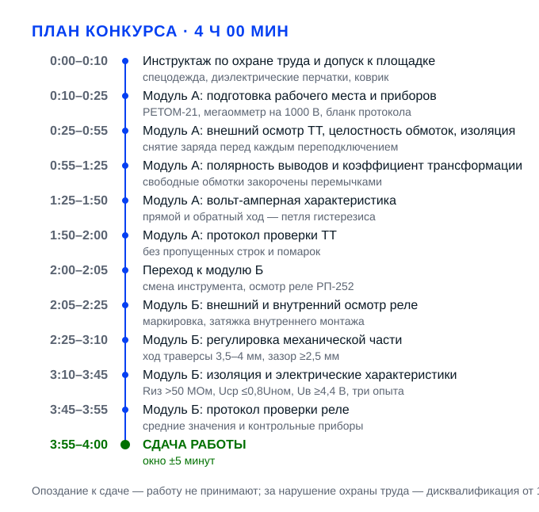
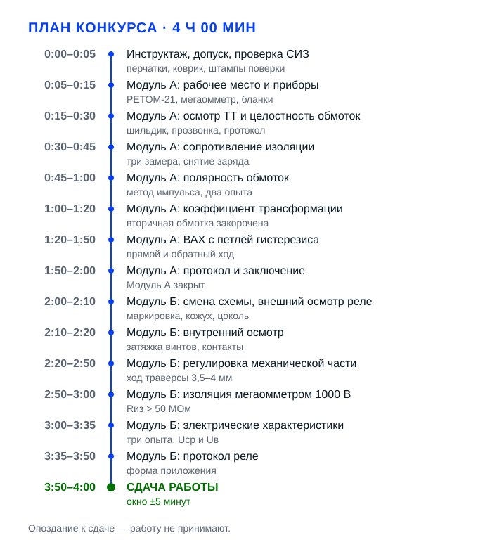
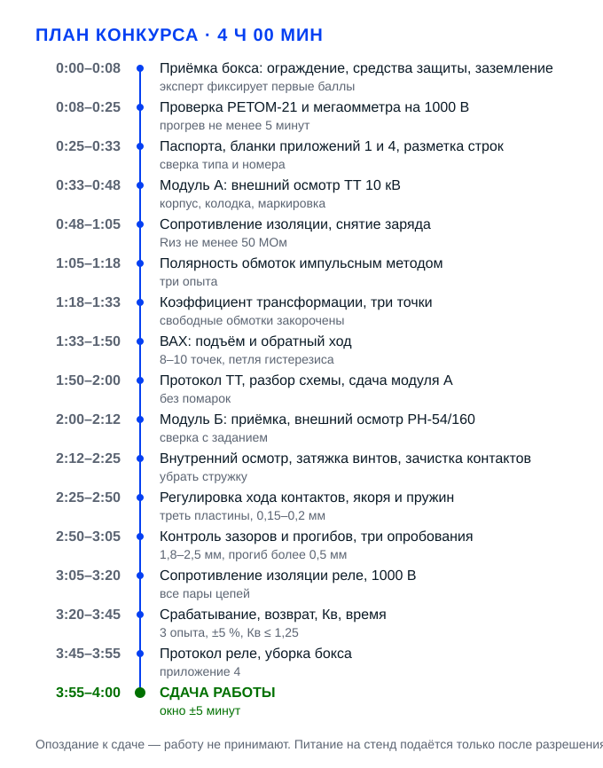

Релейная защита и автоматизация электро-энергетических систем (Р)
Задания ниже — официальные файлы «Абилимпикс» (источник: abilympics-russia.ru), разложенные по категориям. Решения написаны по тексту задания, регламенту и критериям оценки; в них указано, что именно проверяет эксперт.
Школьник
14–16 лет, базовый уровень заданияВ официальном файле категории не разделены отдельными разделами — приводим задание целиком; различия по категориям смотрите в таблице модулей.
Пошаговое решение
Школьная категория этой компетенции — четыре часа и два модуля по 50 баллов: утром вы проверяете трансформатор тока 10 кВ, после перехода — регулируете электромеханическое промежуточное реле РП-252. Оба модуля устроены одинаково: сначала руками и приборами получаете факты, потом переносите их в протокол. Оценивают не «старание», а конкретные измеримые вещи — полноту измерений по каждой обмотке, закорачивание неиспользуемых обмоток, снятие остаточного заряда перед переподключением, зазор не менее 2,5 мм, ход траверсы 3,5–4 мм, сопротивление изоляции выше 50 МОм. Половина баллов теряется не на приборах, а на спешке: не заполнена строка протокола, не снят заряд, схема собрана под напряжением. Поэтому решение построено так, чтобы каждая операция заканчивалась проверкой и записью в черновик.

Задача 1. Пройти допуск, надеть СИЗ и подготовить место под Модуль АМодуль А · подготовка 4 балла + поведение 2 балла
До первого измерения вы должны стоять на площадке в полном комплекте защиты, с проверенными приборами и с бланком протокола на столе. В критериях это четыре отдельных балла за подготовку рабочего места и ещё два за личное поведение, но реальная цена выше: без диэлектрического коврика и перчаток работу просто не начнут, а непроверенный мегаомметр выдаст красивые цифры, которые эксперт не примет. На всю подготовку уходит около четверти часа, и эти минуты входят в два часа модуля.
Действие 1.1. Надеть спецодежду и средства защиты
Шаг 1.1.1
Надеваем хлопчатобумажный костюм или халат, закрытую обувь на нескользящей подошве и головной убор, застёгиваем одежду на все пуговицы и убираем волосы под головной убор полностью, включая затылок. Рукава оставляем застёгнутыми у кисти: открытое предплечье рядом с клеммами, на которые подаётся до 1000 В при испытании изоляции, — это та самая случайная точка контакта, из-за которой происходят электротравмы. Обувь проверяем на сухость: мокрый пол площадки и мокрые подошвы вместе дают проводящий путь через тело.
Спецодежда и обувь в перечне средств защиты обязательны для всех трёх категорий, и эксперт фиксирует их до старта модуля. Формально нарушение требований охраны труда ведёт к потере баллов, а грубое нарушение — к отстранению от работы с удалением с площадки и штрафом в 100 процентов, то есть модуль обнуляется целиком, каким бы точным ни был протокол.
Одежда застёгнута, рукава не болтаются, головной убор держится, обувь закрытая и сухая. Попросите соседа или волонтёра посмотреть на вас сзади: выбившиеся волосы на затылке — самая частая мелочь, которую участник у себя не видит.
Прийти в футболке и открытых кроссовках, рассчитывая надеть халат позже, к моменту подачи напряжения. Вторая ошибка — закатать рукава «чтобы не мешали»: кисть тогда открыта до локтя, и работа с мегаомметром на 1000 В превращается в риск, за который снимают баллы за безопасность.
Эксперт осматривает участника на входе в бокс и ещё раз в момент, когда вы берёте приборы в руки. Отдельно он проверяет, застёгнута ли одежда к моменту подачи напряжения, а не только на входе.
Шаг 1.1.2
Раскладываем диэлектрический коврик у рабочего места так, чтобы он лежал перед стендом и не сдвигался при шаге: кромку заводим под ножку стола или фиксируем так, чтобы она не заворачивалась. Диэлектрические перчатки достаём из чехла, осматриваем на свет, проверяем края и пальцы на проколы и порезы, затем надуваем каждую на 10–15 секунд, скрутив манжету: перчатка не должна спускаться. Надеваем их только перед операциями, где есть напряжение, и снимаем, когда работаем ключом.
Коврик и перчатки — отдельная строка критериев на 2 балла в модуле Б и часть общего блока безопасности в модуле А. Проверка перчаток надуванием не формальность: микроскопический прокол на пальце не виден глазом, но при касании клемм после мегаомметра даёт путь тока через руку. Эксперт засчитывает средства защиты только исправные и с действующим штампом испытания.
Коврик лежит ровно и не скользит, перчатки держат воздух, штамп с датой следующего испытания на месте и не просрочен. Если штамп не читается или дата прошла, сразу меняете перчатки у эксперта — спорить с просроченным средством защиты бессмысленно.
Постелить вместо коврика картон или кусок линолеума: внешне похоже, но диэлектрических свойств нет, и баллы за подготовку снимаются. Вторая ошибка — работать в перчатках с надорванным краем манжеты, считая, что «дырка маленькая».
Эксперт проверяет коврик и перчатки до подачи напряжения, а затем смотрит, надевает ли участник перчатки перед каждым переподключением или только в начале.
Шаг 1.1.3
Берём указатель напряжения и проверяем его работоспособность на заведомо действующей розетке или на тестере стенда: индикация должна быть чёткой, без мигания и без срабатывания от посторонних полей. Инструмент — ключи, отвёртки, пассатижи — осматриваем на целостность изолирующих ручек: трещины, сколы и следы перегрева недопустимы, ручки должны быть сухими и чистыми. Тот же осмотр проходим по набору ремонтного инструмента служб РЗА, который предоставляет площадка.
Инструмент с изолированными ручками входит в обязательный перечень средств защиты, а указатель напряжения — единственный способ убедиться, что на клеммах нет напряжения перед сборкой схемы. Собирать схему при наличии напряжения запрещено инструкцией, и любое переключение выполняется только при снятом напряжении, поэтому каждый раз перед работой вы подтверждаете отсутствие напряжения прибором, а не «на глаз».
Указатель даёт устойчивую индикацию на контрольном источнике и молчит на обесточенных клеммах. Изоляция ручек целая по всей длине, на инструменте нет масла и воды. Инструмент лежит на коврике, а не на краю стола, откуда он скатывается.
Использовать указатель, не проверив его на рабочем источнике: прибор с севшей батареей не покажет напряжение там, где оно есть, и вы соберёте схему под напряжением. Вторая ошибка — работать ключом с треснувшей ручкой, потому что «так удобнее».
Эксперт смотрит, проверяете ли вы указатель перед каждым применением, и отдельно отмечает инструмент с повреждённой изоляцией. Он смотрит, проверяете ли вы указатель перед каждым применением.
Действие 1.2. Проверить приборы, документы и сам трансформатор тока
Шаг 1.2.1
Осматриваем испытательный комплекс РЕТОМ-21: корпус без механических повреждений, дисплей и клавиатура целые, разъёмы не разболтаны, на корпусе читается штамп с датой следующей поверки. Проверяем кабели по одному — силовой, питания, заземления и общего назначения: изоляция целая, наконечники и «крокодилы» без трещин, информационный кабель не пережат. Отдельно проверяем жёлто-зелёный проводник заземления и надёжность его крепления к клемме заземления стенда.
Проверка исправности проверочного оборудования — это 1 балл из 50 в каждом модуле, но именно она определяет, будут ли остальные измерения достоверными. При работе с РЕТОМ-21 инструкция требует следить за надёжностью заземления и собирать испытательную схему только при отключённых выходных цепях. Если заземление не подключено, при пробое изоляции корпус прибора окажется под напряжением, а это уже не баллы, а травма.
Штамп поверки действующий, кабели целые, заземление подключено и держится при лёгком рывке за провод. Проверьте кнопкой включения, что прибор запускается и показывает рабочий экран без сообщений об ошибке.
Включить РЕТОМ-21 до подключения заземления: прибор запустится, но при первом же испытании изоляции вы получите потенциал на корпусе. Вторая ошибка — использовать кабель с надорванным наконечником: контакт «то есть, то нет», и измерения уплывают.
Эксперт подходит к прибору на этапе подготовки и проверяет заземление и штамп — это самое быстрое, за что можно потерять балл ещё до начала работы. Он смотрит на клемму заземления и штамп поверки до начала измерений.
Шаг 1.2.2
Берём мегаомметр и мультиметр, проверяем на них штампы поверки и внешнее состояние: треснувший корпус, повреждённые гнёзда и провода с нарушенной изоляцией — основание заменить прибор у эксперта. Мегаомметр выставляем на 1000 В, мультиметр — в режим измерения напряжения постоянного тока и в режим прозвонки. Проверяем батарею мегаомметра коротким измерением на заведомо исправной изоляции: стрелка или цифры должны уходить вверх уверенно.
Мегаомметр на 1000 В — тот самый прибор, которым в модуле Б проверяется изоляция реле с нормой выше 50 МОм, и его собственные провода входят в погрешность измерения. Мультиметр нужен, чтобы прозванивать обмотки и контакты без подачи напряжения. Оба прибора должны иметь действующую поверку, иначе результаты протокола считаются недействительными.
Оба прибора включаются, показывают ноль и бесконечность при разомкнутых щупах, провода не переламываются у штекера. Убедитесь, что на мегаомметре действительно выставлено 1000 В, а не 500 В — на меньшем напряжении изоляция реле покажет завышенное сопротивление.
Проверять изоляцию мегаомметром на 500 В, потому что «меньше искрит»: норма в критериях привязана к 1000 В, и результат с другого напряжения эксперт не зачтёт. Вторая ошибка — не проверить провода: они дают утечку, и вы запишете в протокол заниженное сопротивление.
Эксперт смотрит на класс точности и заводские номера приборов: их придётся внести в раздел контрольных приборов протокола. Заводские номера приборов он сверяет с теми, что вы впишете в протокол.
Шаг 1.2.3
Берём у эксперта бланк протокола проверки трансформатора тока и паспортные данные стенда: тип трансформатора, заводской номер, обозначение обмоток, коэффициент трансформации, класс точности каждой обмотки, номинальную нагрузку в вольт-амперах. Переписываем эти данные в шапку протокола и в черновик, чтобы во время работы не искать шильдик под напряжением. Проверяем, что в бланке есть все разделы: внешний осмотр, сопротивление изоляции, коэффициент трансформации, полярность, вольт-амперная характеристика, контрольные приборы, заключение.
Проверка наличия протокола и документации — 1 балл, а сам протокол в модуле А стоит ещё 3 балла. Паспортные данные определяют, с чем вы будете сравнивать измеренное: без заводского коэффициента трансформации и типовой вольт-амперной характеристики проверка превращается в запись случайных чисел. Кроме того, пустые строки в бланке потом дают пропуски в протоколе.
Все поля шапки заполнены, номера обмоток совпадают с маркировкой на клеммной колодке, типовая ВАХ из паспорта лежит рядом с бланком. Сверьте количество разделов бланка с перечнем операций в задании — расхождений быть не должно.
Начать измерения, не переписав паспортные данные: потом выясняется, что типовая ВАХ не найдена, и сравнить результаты не с чем. Вторая ошибка — заполнять бланк «по памяти» в конце модуля, когда цифры уже перепутаны.
Эксперт проверяет наличие бланка на столе в начале модуля и полноту шапки — при сдаче это первое, что бросается в глаза. Пустые строки в бланке он находит при сдаче, и каждая читается как пропущенная операция.
Действие 1.3. Организовать рабочее место и разметить выводы
Шаг 1.3.1
Раскладываем инструмент и приборы по зонам: слева на столе — мегаомметр и мультиметр, по центру — бланк протокола и ручка, справа — РЕТОМ-21 и его кабели, у стенда — трансформатор тока. Кабели укладываем без перекрещивания, не натягивая и не сворачивая петлями, свободные концы убираем от края стола. Ключи и отвёртки кладём так, чтобы они не скатывались: вдоль стола, а не поперёк.
Содержание рабочего места во время работы — 1 балл, по окончании — ещё 1 балл, и в модуле Б эти же строки стоят уже по 2 балла. Инструкция прямо требует располагать инструмент так, чтобы исключить его скатывание и падение, и собирать схемы без перекрещивания проводов: перекрещенный провод цепляется за ручку прибора и выдёргивает наконечник в самый неподходящий момент.
На столе нет ничего лишнего, кабели не натянуты, каждый прибор на своём месте, проход к стенду свободен. Пройдите взглядом по столу от края до края: всё, что лежит ближе пяти сантиметров к кромке, рано или поздно упадёт.
Разложить всё «по ходу работы», начав с подключения приборов: через полчаса на столе образуется клубок проводов, в котором невозможно найти нужный наконечник, а балл за содержание места уже снят. Балл за содержание рабочего места снимается сразу.
Эксперт обходит боксы в первые минуты модуля и фиксирует исходное состояние стола, а затем сравнивает его с тем, что осталось после работы. Он же оценивает, остаётся ли стол в таком виде к середине модуля.
Шаг 1.3.2
Проверяем, что рабочая зона освещена равномерно и на клеммной колодке видна маркировка: мелкие обозначения 1И1, 1И2, 2И1, 2И2 при слабом свете легко перепутать, а вместе с ними перепутается и вся схема. Если на площадке предусмотрена лампа местного освещения, направляем её на колодку, а не в глаза. Стул ставим так, чтобы корпус оставался в полуоборот к стенду: так видно и прибор, и клеммы, и не приходится тянуться через стол.
Требования охраны труда перед началом работы отдельно называют достаточность освещённости и правильность установки стола и стула, и это не абстракция: основная нагрузка на этой компетенции — зрительная, а работа идёт с мелкими номерами обмоток и тонкими шкалами. Неудобная поза через сорок минут даёт дрожь в руке, а дрожащей рукой не выставить напряжение срабатывания с шагом в доли вольта.
Маркировка на колодке читается без наклона к ней, тени на клеммах нет, приборы видны с рабочего места целиком. Проверьте, что вам не приходится вставать, чтобы посмотреть на экран РЕТОМ-21. Проверьте, видно ли вам экран прибора, не вставая со стула.
Работать в полутьме у окна, где одна сторона колодки в тени: номер обмотки читается наугад, и коэффициент трансформации измеряется не на той обмотке. Вторая ошибка — поставить приборы так, что к клеммам приходится тянуться через стол.
Эксперт обращает внимание на позу и на то, читает ли участник маркировку или подключается по памяти. Отдельно отмечается, читаете ли вы маркировку обмоток или подключаетесь по памяти.
Шаг 1.3.3
Записываем в черновик схему выводов трансформатора тока: сколько обмоток, какие клеммы относятся к первичной цепи, какие ко вторичным, где начало, а где конец каждой обмотки по заводской маркировке. Рядом рисуем простую схему подключения для каждого опыта — сопротивление изоляции, коэффициент трансформации, полярность, вольт-амперная характеристика. На каждой схеме помечаем, какая обмотка работает, а какая закорочена.
Половина баллов модуля А привязана к подключению приборов и закорачиванию обмоток: 3 балла за подключение при измерении изоляции, по 4 балла за подключение при проверке коэффициента трансформации и при снятии ВАХ. Разница между этими опытами не в приборе, а в том, какая обмотка возбуждается и какая замкнута. Схема на бумаге снимает путаницу до того, как вы возьмётесь за провода.
На черновике есть четыре отдельные схемы, для каждой указано, какие клеммы задействованы и какая обмотка закорочена. Сверьте номера клемм с колодкой ещё раз, до подключения первого провода. Все четыре схемы подписаны названиями опытов.
Держать схему в голове: на третьем опыте клеммы путаются, и вы подаёте ток в обмотку, которую собирались закоротить. Вторая ошибка — записывать результаты на отдельных листочках, которые потом теряются.
Эксперт может попросить показать черновик и объяснить, что закорочено в текущей схеме, — это входит в оценку понимания работы. Если схема на бумаге не совпадает с фактическим подключением, вопрос задаётся сразу.
Задача 2. Проверить трансформатор тока 10 кВМодуль А · 50 баллов
Модуль А — это полный объём проверки трансформатора тока 10 кВ на испытательном комплексе РЕТОМ-21: внешний осмотр, целостность обмоток, сопротивление изоляции, полярность выводов, коэффициент трансформации и вольт-амперная характеристика с учётом петли гистерезиса. По каждому опыту в критериях отдельно стоят подключение приборов и закорачивание обмоток, полнота измерений по всем заданным обмоткам и снятие заряда перед переподключением. Работа идёт в строгой последовательности от простого к сложному, и каждый опыт заканчивается записью в черновик, иначе к моменту оформления протокола цифры придётся восстанавливать по памяти.
Действие 2.1. Осмотреть трансформатор тока и сверить шильдик
Шаг 2.1.1
Обходим трансформатор тока кругом и осматриваем корпус: на нём не должно быть сколов, трещин, глубоких царапин и следов перегрева. Отдельно смотрим на заливку и на стык корпуса с цоколем — именно там появляются волосяные трещины после транспортировки. Наклоняемся и проверяем низ и место ввода первичной цепи: подтёки масла, компаунда или следы влаги недопустимы, а пыль и грязь на изоляторах стираем сухой ветошью, не касаясь клемм руками.
Внешний осмотр ТТ — 3 балла, и критерий сформулирован буквально: целостность корпуса, клеммных колодок, отсутствие подтёков. Трещина в заливке — это не косметика, а путь для частичных разрядов и увлажнения изоляции, из-за которого трансформатор нельзя ставить в схему защиты. На чемпионате вы осматриваете именно тот экземпляр, который потом проверяете приборами, поэтому найденный дефект нужно сразу показать эксперту.
Корпус целый, заливка без трещин, подтёков нет, изоляторы чистые и сухие. Сфотографируйте или зарисуйте обнаруженный дефект в черновике и покажите эксперту до начала измерений — это фиксируется как результат осмотра.
Провести осмотр формально, сверху, не заглянув за корпус и не проверив низ: подтёк обычно виден именно снизу. Вторая ошибка — увидеть трещину и промолчать, а потом получить «неисправен» в заключении протокола без объяснения причины.
Эксперт стоит рядом на осмотре и ждёт, что вы назовёте конкретные признаки, а не скажете «корпус в порядке». Он ждёт от вас названия конкретных признаков, а не общей оценки состояния корпуса.
Шаг 2.1.2
Открываем клеммную колодку и осматриваем её изнутри: колодка не должна быть расколота, винты на месте, шайбы не потеряны, наконечники проводов не обломаны. Проверяем затяжку каждого винта отверткой по часовой стрелке на пол-оборота: винт должен подтягиваться с усилием, а не прокручиваться. Болтовые соединения первичной цепи проверяем ключом, не снимая шины, и отдельно смотрим, нет ли на контактах следов подгара и окисла.
Подключение приборов и закорачивание обмоток оцениваются в 4 балла при проверке коэффициента трансформации и в 4 балла при снятии ВАХ, а плохо затянутый винт колодки даёт переходное сопротивление — и коэффициент трансформации «плывёт» на несколько процентов. Окисленный контакт греется под током, и на первичной обмотке это видно по запаху и нагреву корпуса.
Все винты затянуты, шайбы под ними на месте, наконечники целые, окисла и подгара нет. Проверьте рукой после затяжки: колодка не шатается, провода не выдёргиваются лёгким натяжением. Посмотрите на просвет, нет ли трещины в текстолите колодки.
Подтягивать винты «на всякий случай» изо всех сил: резьба в текстолитовой колодке срывается, и клемма перестаёт держать провод. Вторая ошибка — оставить окисленную клемму, решив, что «прибор всё равно покажет».
Эксперт может проверить затяжку после вас: ослабленный винт виден сразу, и это снимает баллы за внешний осмотр и за подключение приборов. Ослабленный винт колодки он находит выборочно и считает это дефектом осмотра.
Шаг 2.1.3
Читаем шильдик и переносим в протокол тип трансформатора, заводской номер, номинальное напряжение 10 кВ, номинальный первичный и вторичный ток, коэффициент трансформации по каждой обмотке, класс точности и номинальную нагрузку в вольт-амперах. Сверяем обозначения обмоток на шильдике с маркировкой на колодке: если на шильдике обмотка названа 1И1–1И2, а на колодке стоит другой номер, вы работаете не с той цепью.
Паспортные данные — единственная база для сравнения, и в протоколе под них отведён целый раздел. Коэффициент трансформации, класс точности и нагрузка в вольт-амперах определяют, какую обмотку можно использовать для защиты, а какую только для измерения. Ошибка в номере обмотки на этом этапе стоит сразу двух критериев: полноты измерений и правильности подключения.
Все поля шапки протокола заполнены без пропусков, номера обмоток совпадают с колодкой, класс точности записан для каждой обмотки отдельно. Перечитайте запись вслух и сравните с шильдиком ещё раз. Класс точности перепишите цифрой, как он стоит на шильдике.
Записать только тип и номер, пропустив класс точности и нагрузку: раздел остаётся пустым, и в протоколе появляется пропущенная строка, за которую снимают баллы. Вторая ошибка — перепутать обмотки местами и мерить не ту.
Эксперт сверяет вашу запись с шильдиком при сдаче протокола, и расхождение в цифрах видно мгновенно. Расхождение хотя бы в одной цифре он замечает сразу и просит сверить запись заново.
Действие 2.2. Проверить целостность обмоток и измерить сопротивление изоляции
Шаг 2.2.1
Перед подключением мегаомметра убеждаемся, что трансформатор обесточен: проверяем положение коммутационного аппарата на стенде, показываем его эксперту и только после этого проверяем отсутствие напряжения указателем на каждой клемме. Затем снимаем остаточный заряд с обмоток: заземлённым проводником касаемся каждой клеммы на 3–5 секунд. Только после этого берём в руки провода мегаомметра.
Сборка схемы при наличии напряжения запрещена инструкцией, а клеммы трансформатора тока после предыдущих опытов могут держать заряд от испытания изоляции. Мегаомметр сам выдаёт до 1000 В, и на его клеммах остаточное напряжение держится до 10 секунд после прекращения измерения — это прямо описано в требованиях безопасности. Снятие заряда перед переподключением — отдельный критерий на 3 балла.
Аппарат отключён и положение зафиксировано, указатель не показывает напряжения ни на одной клемме, заряд снят заземлённым проводником. Проверку отсутствия напряжения выполняете при эксперте, чтобы факт был зафиксирован.
Сразу взяться за клеммы после предыдущего испытания: остаточный заряд даёт ощутимый удар током, а испуганная рука роняет щуп на соседнюю клемму. Вторая ошибка — проверять отсутствие напряжения, не отключив аппарат, «потому что индикатор молчит».
Эксперт подходит именно на этот шаг: снятие заряда видно со стороны и оценивается отдельно от самого измерения. Проверку отсутствия напряжения он ждёт при себе, потому что этот факт фиксируется отдельно.
Шаг 2.2.2
Подключаем мегаомметр между первичной обмоткой и корпусом: один провод на клемму 1И1 или 1И2, второй на заземлённый корпус или на специальную клемму заземления. Вторичные обмотки на время этого измерения соединяем между собой и с корпусом, чтобы не ловить наводки. Проверяем, что провода не касаются друг друга и не лежат на металле, затем включаем прибор и держим кнопку измерения до устойчивого показания, но не менее 60 секунд.
Подготовка и подключение приборов при проверке сопротивления изоляции — 3 балла, и ещё 3 балла даёт полнота измерений. Мегаомметр измеряет не «изоляцию вообще», а сопротивление между двумя конкретными точками, поэтому неприсоединённые вторичные обмотки и незаземлённый корпус дают цифру, которая ничего не значит. Выдержка в 60 секунд нужна потому, что сопротивление изоляции продолжает расти после подачи напряжения за счёт абсорбции.
Показание установилось и не растёт, прибор держит испытательное напряжение, ни один провод не касается корпуса в обход измеряемой цепи. Запишите значение в мегаомах в черновик сразу, не полагаясь на память.
Мерить наспех, снимая показание через пять секунд: цифра занижена, и вы забракуете исправный трансформатор. Вторая ошибка — оставить вторичную обмотку в воздухе, тогда наводка от испытательного напряжения искажает результат.
Эксперт смотрит на схему подключения до подачи напряжения: правильность точек подключения видна сразу, и спорить потом не о чем. Он смотрит на точки подключения до подачи испытательного напряжения.
Шаг 2.2.3
Переходим ко вторичным обмоткам: измеряем сопротивление между обмоткой 1И1–1И2 и корпусом, затем между обмоткой 2И1–2И2 и корпусом, а потом между самими обмотками. Перед каждым переподключением снимаем заряд с клемм заземлённым проводником, а не просто отключаем прибор. Все значения записываем в таблицу раздела «Измерение сопротивления изоляции», где для каждой обмотки отведена своя строка.
Полнота измерений — это 3 балла, и проверяются именно все обмотки, а не одна «для отчёта». Межобмоточная изоляция проверяется отдельно потому, что пробой между первичной и вторичной обмоткой — самый опасный вид повреждения: он выносит 10 кВ в цепи защиты и на приборы. Именно поэтому в протоколе для каждой обмотки предусмотрена отдельная строка.
В таблице заполнены все строки: первичная обмотка, каждая вторичная, промежуток между обмотками. Ни одна строка не осталась пустой, значения не повторяются механически — они действительно измерены. Строк должно быть не меньше числа обмоток плюс одна.
Измерить только первичную обмотку и записать остальные «примерно такими же»: эксперт видит одинаковые цифры в разных строках и снимает баллы за полноту. Вторая ошибка — переподключать провода под испытательным напряжением.
Эксперт проверяет число заполненных строк в протоколе и соответствие их числу обмоток на шильдике. Пустые строки в таблице изоляции он считает невыполненными измерениями.
Шаг 2.2.4
После каждого измерения снимаем заряд: отключаем мегаомметр, выдерживаем паузу, берём заземлённый проводник и касаемся им поочерёдно обеих клемм, которые были под испытательным напряжением, а затем клеммы прибора. Только после этого переставляем провод на следующую обмотку. Проводник заземления держим за изолированную ручку, а не за голый конец. Если при касании проскочила искра, разряд повторяем до её исчезновения.
Снятие заряда перед переподключением — отдельные 3 балла в модуле А, и это единственный критерий, который целиком относится к безопасности. Остаточное напряжение на клеммах держится до 10 секунд, а рука с щупом тянется к клемме через две-три секунды. Внешне операция занимает пять секунд, но её отсутствие видно эксперту сразу.
После касания заземлённым проводником на клеммах нет напряжения, искры при касании нет, прибор отключён. Проверьте порядок: сначала отключили прибор, потом разрядили клеммы, потом переставили провод — не наоборот.
Переставлять провода сразу после отключения прибора, считая, что «мегаомметр уже выключен, значит напряжения нет». Заряд остаётся в ёмкости обмотки и в проводах, и удар получает именно рука, которая держит наконечник.
Эксперт фиксирует, разряжаете ли вы клеммы каждый раз или только один раз в начале модуля. Он смотрит именно на паузу между отключением прибора и касанием клемм.
Шаг 2.2.5
Сравниваем полученные значения с нормой: для трансформатора тока 10 кВ сопротивление изоляции должно быть не ниже 1 МОм, а на практике исправный сухой трансформатор показывает десятки и сотни мегаом. Если значение ниже нормы, не спешим с выводом: протираем изоляторы сухой ветошью, проверяем, не касается ли провод корпуса, и повторяем измерение. Результат и вывод записываем в раздел 3 протокола.
Именно это сравнение превращает измерение в проверку, а в протоколе под него отведена строка «Вывод». Заниженное сопротивление чаще всего объясняется не дефектом, а влагой или грязью на поверхности изолятора, и грамотный участник сначала исключает эту причину. Если же после протирки цифра осталась низкой, трансформатор действительно неисправен, и это надо честно записать.
Значение выше 1 МОм, повторное измерение после протирки не изменилось, вывод в протоколе сформулирован одной фразой: «Изоляция соответствует норме» или «Изоляция ниже нормы, требуется просушка». Вывод пишите одной фразой, без оговорок и «вроде бы».
Записать «норма» при показании 0,3 МОм, потому что «прибор, наверное, врёт»: протокол с заведомо ложным выводом эксперт оценивает как неверный, и баллы за полноту измерений теряются вместе с доверием к остальным цифрам.
Эксперт читает вывод в протоколе и сверяет его с фактическим показанием прибора, которое видел сам. Вывод в протоколе он сверяет с показанием, которое видел сам на экране прибора.
Действие 2.3. Проверить полярность выводов и коэффициент трансформации
Шаг 2.3.1
Собираем схему для проверки полярности: к первичной обмотке подключаем источник постоянного тока с кнопкой в цепи, к вторичной — магнитоэлектрический прибор с нулём посередине или мультиметр в режиме измерения постоянного напряжения на самом чувствительном пределе. Проверяем, что обмотки не соединены между собой и не заземлены в одной точке, иначе бросок тока пойдёт по общему проводу и стрелка отклонится не в ту сторону. Схему показываем эксперту до подачи напряжения.
Подключение приборов и закорачивание обмоток при проверке полярности — 2 балла, полнота измерений — ещё 2 балла. Метод основан на законе электромагнитной индукции: при замыкании первичной цепи на постоянном токе во вторичной наводится кратковременный импульс, и его направление однозначно указывает, какой вывод является началом обмотки. Ошибка в полярности ломает дифференциальные защиты, поэтому проверка входит в обязательный объём.
Схема собрана, прибор включён и стоит на нуле, полярность подключения прибора записана в черновике: от какого вывода прибора идёт провод к какому выводу обмотки. Без этой записи отклонение стрелки невозможно истолковать.
Собирать схему, не зафиксировав, каким проводом куда подключились: стрелка отклоняется, а в какую сторону — вы уже не помните. Вторая ошибка — заземлить обе обмотки, получив общий провод и ложный импульс.
Эксперт смотрит на схему до включения и на то, записываете ли вы исходное положение проводов. Записанное исходное положение проводов он может попросить показать.
Шаг 2.3.2
Кратковременно замыкаем кнопку в первичной цепи и смотрим на бросок стрелки в момент замыкания, а затем в момент размыкания: отклонения должны быть противоположными. Фиксируем, к какому выводу вторичной обмотки отклоняется стрелка при замыкании, и сравниваем с заводской маркировкой начала и конца обмотки. Повторяем опыт на каждой вторичной обмотке, всякий раз записывая результат отдельной строкой.
Полнота измерений по полярности — 2 балла, и проверять нужно все обмотки, а не только первую. Однополярными считаются выводы, в которых при замыкании первичной цепи на постоянном токе индуцируется ток одного направления; в протоколе для этого отведена таблица с колонками «начало» и «конец» по каждой обмотке.
При замыкании и размыкании стрелка отклоняется в разные стороны, направление совпадает с маркировкой И1 и И2, результаты по всем обмоткам записаны. Если отклонения нет, проверьте целостность цепи и предел прибора.
Держать кнопку замкнутой: импульс длится доли секунды, при длительном токе обмотка нагревается, а стрелка просто стоит на месте. Вторая ошибка — проверить одну обмотку и записать вывод «полярность верна» для всех.
Эксперт наблюдает за манипуляциями с кнопкой: короткое замыкание и такой же короткий разрыв видны сразу. Короткое замыкание и такой же короткий разрыв кнопкой он видит со стороны.
Шаг 2.3.3
Переходим к коэффициенту трансформации. Собираем схему: на первичную обмотку подаём переменный ток от РЕТОМ-21, во вторичную включаем амперметр с малым сопротивлением, а все остальные вторичные обмотки обязательно закорачиваем на клеммной колодке медными перемычками. Проверяем, что перемычки затянуты, а измерительные провода идут отдельно от силовых и не пересекаются с ними.
Подключение приборов и закорачивание обмоток при проверке коэффициента трансформации — 4 балла, и это самая дорогая строка модуля А вместе с полнотой измерений. Незакороченная вторичная обмотка трансформатора тока работает как повышающий трансформатор: на разомкнутых клеммах появляется высокое напряжение, опасное для человека и разрушительное для изоляции. Поэтому закорачивание — не формальность, а условие безопасности опыта.
Все неиспользуемые обмотки закорочены перемычками и перемычки затянуты, амперметр включён в цепь измеряемой обмотки, провода не перекрещены. Пройдите по колодке пальцем в перчатке и убедитесь, что свободных клемм на вторичных обмотках не осталось.
Оставить вторую вторичную обмотку разомкнутой, потому что «она не участвует в опыте»: именно на ней возникает опасное напряжение, а показания по рабочей обмотке искажаются. Вторая ошибка — закоротить ту обмотку, которую измеряете.
Эксперт проверяет перемычки до подачи тока: это одна из немногих операций, которые он смотрит руками, а не по протоколу. Перемычки на незадействованных обмотках он проверяет руками до подачи тока.
Шаг 2.3.4
Плавно поднимаем ток в первичной цепи до значения, при котором вторичный ток уверенно читается по прибору, и одновременно фиксируем оба значения: первичный ток по показаниям РЕТОМ-21, вторичный — по амперметру. Делаем три-четыре точки на разных уровнях тока, каждый раз возвращаясь к нулю между измерениями, и записываем пары значений в таблицу. Повторяем для каждой вторичной обмотки, закорачивая остальные.
Полнота измерений заданных обмоток — 4 балла, и оценивается именно количество обмоток, по которым сняты данные. Несколько точек на разных уровнях нужны потому, что у трансформатора с подмагничиванием коэффициент трансформации слегка меняется с током, и одна точка не показывает эту зависимость. Ток поднимаем плавно: рывок даёт броски и зашкал прибора.
По каждой обмотке есть не менее трёх пар значений, вторичный ток растёт пропорционально первичному, показания не скачут. Если вторичный ток равен нулю, проверьте перемычку и целостность обмотки. Ток поднимайте до значения, при котором вторичный читается уверенно.
Подать сразу большой ток «чтобы наверняка»: прибор зашкаливает, обмотка греется, а точность падает. Вторая ошибка — записывать только один замер и считать коэффициент по нему. В протоколе остаётся одна точка, и полнота измерений не зачитывается.
Эксперт смотрит на таблицу: три точки по каждой обмотке видны в протоколе и сразу отличают полную работу от формальной. Число строк в таблице по каждой обмотке он сверяет с числом обмоток на шильдике.
Шаг 2.3.5
Считаем коэффициент трансформации для каждой точки как отношение первичного тока ко вторичному, затем берём среднее по обмотке и сравниваем с заводским значением с шильдика. Допустимое отклонение — не более 5 процентов от паспортного; если оно больше, проверяем, не перепутаны ли обмотки и не ослабла ли перемычка, и повторяем опыт. Результат и вывод записываем в раздел 4 протокола, в строку «Вывод».
Расчёт и сравнение — это то, за что начисляются баллы за полноту: в протоколе есть колонка «К т.т.» рядом с измеренными токами, и она должна быть заполнена по каждой строке. Заводской коэффициент трансформации — точка отсчёта, и без сравнения с ним измерение остаётся просто числами. Отклонение больше 5 процентов означает витковое замыкание или ошибку в схеме.
В каждой строке таблицы заполнены первичный ток, вторичный ток и рассчитанный коэффициент, среднее значение выписано отдельно, вывод сформулирован. Пересчитайте одну строку на калькуляторе вручную — арифметические ошибки в протоколе встречаются чаще, чем кажется.
Считать коэффициент как отношение вторичного тока к первичному: получается величина, обратная паспортной, и вывод «не соответствует» будет ложным. Вторая ошибка — округлять до целых на промежуточных шагах и терять проценты.
Эксперт пересчитывает одну строку своим калькулятором и смотрит на вывод под таблицей. Он пересчитывает одну строку сам и смотрит на вывод под таблицей.
Действие 2.4. Снять вольт-амперную характеристику
Шаг 2.4.1
Собираем схему для снятия ВАХ на вторичной обмотке: регулируемый источник переменного напряжения от РЕТОМ-21 подаём на измеряемую обмотку, параллельно ставим вольтметр, последовательно — амперметр. Первичную обмотку на время опыта оставляем разомкнутой, а все остальные вторичные обмотки закорачиваем перемычками. Проверяем, что вольтметр подключён именно параллельно обмотке, а не последовательно с ней, и что предел амперметра выбран с запасом.
Подключение приборов при снятии ВАХ — 4 балла, и это самый ответственный опыт модуля: через обмотку проходит ток от единиц миллиампер до нескольких ампер, и ошибка в схеме приводит либо к зашкалу, либо к повреждению обмотки. ВАХ показывает, при каком напряжении сердечник входит в насыщение, и по ней проверяют, что трансформатор не имеет витковых замыканий и правильно собран.
Схема собрана, вольтметр параллельно обмотке, амперметр последовательно, пределы выставлены, остальные обмотки закорочены. Начните с нуля напряжения и убедитесь, что приборы показывают ноль до подачи.
Перепутать параллельное и последовательное включение вольтметра: прибор включается в цепь обмотки и либо сгорает, либо вносит сопротивление, и вся характеристика смещается. Вторая ошибка — оставить первичную обмотку закороченной.
Эксперт проверяет схему до подачи напряжения и следит, не превышаете ли вы предельные значения по току. Схему он проверяет до подачи напряжения и отдельно смотрит на пределы приборов.
Шаг 2.4.2
Начинаем снимать характеристику с нуля: поднимаем напряжение ступенями, на начальном участке шагом 5–10 В, ближе к излому — шагом 1–2 В, и на каждой ступени записываем пару значений напряжения и тока. Ждём, пока показания установятся, а не снимаем их в момент переключения. Доводим до тока, при котором обмотка входит в насыщение и ток начинает расти быстрее напряжения, и останавливаемся, не превышая допустимый ток обмотки.
Полнота измерений для заданных обмоток — 4 балла, и характеристика оценивается по числу точек и по тому, попал ли в них участок насыщения. Редкие точки не показывают излом, а без излома ВАХ не с чем сравнивать. Мелкий шаг у излома нужен потому, что именно там кривая меняет наклон, и одна пропущенная точка сдвигает видимую точку насыщения на десятки вольт.
На черновике не менее 8–10 точек, кривая сначала пологая, потом круто идёт вверх, последние точки не выходят за допустимый ток. Соедините точки от руки — линия должна быть плавной, без скачков. Проверьте, что последняя точка ещё не вышла за допустимый ток обмотки.
Гнать напряжение крупными шагами по 20–30 В: излом проскакивается, и вместо характеристики получается две-три точки на прямых участках. Вторая ошибка — снимать показания в момент переключения, когда прибор ещё не установился.
Эксперт смотрит на черновик с точками и на то, насколько аккуратно вы останавливаетесь у границы насыщения. Он подходит в момент, когда вы проходите участок излома характеристики.
Шаг 2.4.3
Дойдя до верхней точки, начинаем обратный ход: снижаем напряжение теми же ступенями и снова записываем пары значений, не возвращаясь сразу к нулю. Получаем две ветви — прямую и обратную, между которыми лежит петля гистерезиса. Снимаем не менее четырёх-пяти точек на обратном ходе, особенно в области излома, где расхождение ветвей наибольшее. Между ступенями выдерживаем паузу до установления показаний.
Учёт петли гистерезиса — отдельные 4 балла, и это самый «неочевидный» критерий модуля. Сердечник трансформатора намагничивается с запаздыванием, поэтому при снижении напряжения ток оказывается меньше, чем был при том же напряжении на подъёме. Если снять только прямую ветвь, характеристика выглядит идеальной, а на самом деле вы потеряли информацию о свойствах сердечника.
На черновике две отдельные колонки или два цвета для прямого и обратного хода, ветви не сливаются в одну линию, расхождение видно на графике. Проверьте, что обратный ход начат с той же верхней точки. Ветви должны расходиться заметно, а не сливаться в одну линию.
Снизить напряжение до нуля одним движением и записать одну точку «на обратном ходе»: петля не фиксируется, и 4 балла теряются целиком. Вторая ошибка — перепутать колонки и соединить прямой ход с обратным в одну кривую.
Эксперт подходит в момент обратного хода: видно, снижаете вы напряжение ступенями или просто выключаете источник. Обратный ход он ловит специально: видно, снижаете ли вы напряжение ступенями.
Шаг 2.4.4
Переносим характеристику на бланк протокола и сравниваем с типовой ВАХ из паспорта: совпадает ли напряжение начала насыщения, нет ли смещения кривой вправо или влево, не «проваливается» ли ток на каком-то участке. Отклонение в пределах 10 процентов считается нормальным, заметный сдвиг влево говорит о витковых замыканиях, сдвиг вправо — о неправильной сборке магнитопровода. Вывод записываем в раздел 6 протокола.
Сравнение с типовой характеристикой — это и есть цель опыта, ради которой снимались точки. В протоколе раздел 6 так и называется: снятие ВАХ трансформатора тока, и рядом должна быть типовая кривая. Без сравнения эксперт видит только набор чисел и не может оценить, понимаете ли вы, что с ними делать.
Кривая перенесена на бланк, типовая характеристика нанесена рядом или наложена на тот же график, вывод сформулирован с указанием направления отклонения. Проверьте масштаб осей — при разном масштабе кривые визуально не совпадут.
Перенести только три-четыре точки «чтобы было»: на бланке остаётся огрызок кривой, по которому ничего не видно. Вторая ошибка — написать «соответствует» без сравнения, потому что сравнивать было не с чем.
Эксперт смотрит на наложенные кривые и читает вывод: грамотный вывод всегда называет конкретное расхождение или его отсутствие. Наложенные кривые он рассматривает вместе с вашим выводом и ищет в нём конкретику.
Действие 2.5. Оформить протокол проверки трансформатора тока
Шаг 2.5.1
Переносим результаты в бланк по разделам, в том же порядке, в котором они снимались: паспортные данные, внешний осмотр, сопротивление изоляции по каждой обмотке, коэффициент трансформации по точкам, полярность, вольт-амперная характеристика. Пишем шариковой ручкой, разборчиво, цифры не исправляем поверх — если ошиблись, зачёркиваем одной чертой, пишем верное значение рядом и удостоверяем подписью. Все значения берём из черновика, а не из памяти.
Составление протокола — 3 балла, и критерий звучит буквально: отсутствие пропущенных строк и помарок. Протокол — единственный документ, который остаётся после работы, и по нему эксперт проверяет, действительно ли вы выполнили все операции. Пропущенная строка читается как невыполненная операция, даже если вы её сделали и просто забыли записать.
Заполнены все разделы бланка, ни одна строка не пуста, помарок и замазанных цифр нет. Пройдите по бланку сверху вниз и сравните с черновиком раздел за разделом. Сверяйте раздел за разделом и ставьте галочки на полях бланка.
Заполнить протокол в конце, за пять минут до сдачи: часть цифр теряется, а часть пишется «по памяти». Вторая ошибка — замазывать ошибку корректором и писать сверху: это прямо названо помаркой. Пропущенная строка стоит части баллов за составление протокола.
Эксперт читает протокол целиком, а не выборочно: пустые строки он находит за несколько секунд. Он читает бланк сверху вниз и отмечает каждую незаполненную строку.
Шаг 2.5.2
Заполняем раздел контрольных приборов: наименование каждого прибора, пределы измерения, класс точности и заводской номер — мегаомметр, мультиметр, испытательный комплекс. Затем пишем заключение: «Трансформатор тока исправен» или «неисправен» с указанием, что именно не соответствует норме. Ставим дату, подпись исполнителя и оставляем место для подписи проверившего.
Контрольные приборы в протоколе нужны для того, чтобы результат можно было перепроверить: без класса точности и заводского номера измерение юридически ничего не подтверждает. Заключение — итог всей работы, и оно должно быть однозначным: формулировка «в целом нормально» в протокол не годится, потому что по ней нельзя принять решение о допуске трансформатора в работу.
В таблице приборов заполнены все четыре колонки по каждому прибору, заключение сформулировано одной фразой, дата и подпись на месте. Сверьте заводские номера с корпусами приборов — они переписываются с ошибками чаще всего.
Оставить таблицу приборов пустой, потому что «приборы всё равно с площадки»: раздел считается незаполненным, и баллы за протокол снимаются. Вторая ошибка — написать «исправен» при найденном дефекте изоляции.
Эксперт сверяет номера приборов с фактическими и проверяет, соответствует ли заключение результатам в таблицах. Заключение он сверяет с таблицами: слово «исправен» при низком сопротивлении не проходит.
Шаг 2.5.3
Перед сдачей перечитываем протокол целиком и проверяем три вещи: все ли обмотки упомянуты в каждом разделе, совпадают ли единицы измерения — мегаомы для сопротивления, амперы для тока, вольты для напряжения, — и нет ли строк, где стоит прочерк без объяснения. Затем убираем рабочее место: приборы выключаем, провода сматываем, инструмент на место, клеммы трансформатора разряжаем и закрываем колодку. Протокол сдаём эксперту.
Содержание рабочего места по окончании работы — 1 балл в модуле А, и он начисляется по факту, а не по обещанию. Проверка единиц измерения — самая частая причина обидных потерь: сопротивление, записанное в килоомах вместо мегаом, формально делает вывод неверным. Разряженные клеммы перед уходом — это ещё и забота о том, кто подойдёт к стенду после вас.
Все разделы заполнены, единицы измерения единообразны, рабочее место чистое, приборы выключены и отключены от сети, инструмент убран. Протокол подписан и передан эксперту до окончания времени модуля. Протокол подписан и лежит на столе, а не в кармане.
Сдать протокол в последнюю минуту, не перечитав: опечатка в единицах остаётся незамеченной. Вторая ошибка — уйти, оставив включённый прибор и разбросанные провода: балл за содержание места снимается, а замечание идёт в общую оценку поведения.
Эксперт осматривает бокс после сдачи модуля и ставит балл за состояние рабочего места по факту. Он обходит бокс после сдачи и ставит балл за состояние места по факту.
Задача 3. Отрегулировать электромеханическое реле РП-252Модуль Б · 50 баллов
Второй модуль — про механику и электрику одновременно. Реле РП-252 нужно осмотреть снаружи и внутри, отрегулировать ход траверсы в пределах 3,5–4 мм, обеспечить межконтактный зазор не менее 2,5 мм и одновременность замыкания контактов, затем проверить изоляцию мегаомметром на 1000 В с нормой выше 50 МОм и снять напряжение срабатывания и возврата. Критерии жёсткие и поцифровые: напряжение срабатывания не более 0,8 номинального, напряжение возврата не менее 4,4 В, каждое отклонение по механике стоит полбалла. Здесь важнее не скорость, а последовательность: сначала механика, потом изоляция, и только затем подача напряжения.
Действие 3.1. Осмотреть реле снаружи и внутри, подготовить к регулировке
Шаг 3.1.1
Берём реле в руки и осматриваем корпус: кожух без вмятин и трещин, цоколь целый, уплотнения на месте, клеммная колодка не расколота. Читаем маркировку и переносим её в протокол: тип реле, заводской номер, номинальное напряжение, схема расположения контактов, завод-изготовитель и дата выпуска. Отдельно расшифровываем обозначение типа — из него видно исполнение по напряжению и числу контактных групп, и это первое, что спросит эксперт.
Внешний осмотр реле — 3 балла, и критерий называет конкретно механические повреждения. Маркировка в протоколе нужна не для красоты: расшифровка типа и конструктивное исполнение — отдельные строки первого раздела бланка. Если вы не понимаете, что означают буквы и цифры в обозначении, вы не сможете объяснить, почему у реле именно такое напряжение срабатывания.
Корпус и колодка целые, маркировка читается, все строки паспортного раздела заполнены, расшифровка типа записана словами. Сверьте номер на кожухе с номером на цоколе — они должны совпадать. Дату выпуска перепишите с цоколя, а не с кожуха.
Осмотреть реле, не читая маркировку, и заполнить раздел «примерно»: эксперт задаёт вопрос по расшифровке типа, и становится видно, что реле вы не читали. Вторая ошибка — не заметить трещину на цоколе и получить отказ изоляции при первом же измерении.
Эксперт подходит на внешнем осмотре и просит объяснить обозначение реле — это самый быстрый способ проверить понимание. Вопрос по расшифровке типа задаётся именно на внешнем осмотре, пока реле у вас в руках.
Шаг 3.1.2
Снимаем кожух, отворачивая крепёжные винты по диагонали, и кладём его на стол внутренней стороной вверх, чтобы не поцарапать. Осматриваем внутренний монтаж: катушку, якорь, траверсу с подвижными контактами, неподвижные контактные пластины, пружины и гибкие шунты. Проверяем затяжку винтов внутреннего монтажа и надёжность паек, отсутствие пыли, металлической стружки и следов перегрева на катушке.
Внутренний осмотр — 3 балла, и критерий прямо говорит про надёжность контактных соединений и правильность затяжки винтов внутреннего монтажа. Ослабленный винт крепления неподвижного контакта сдвигает зазор уже после того, как вы его отрегулировали, и вся работа идёт насмарку. Перегретая катушка — признак межвиткового замыкания, при котором характеристики срабатывания уходят.
Все винты внутреннего монтажа затянуты, пайки блестящие и без наплывов, стружки и пыли нет, катушка без потемнений и запаха горелого. Покачайте пальцем каждую неподвижную пластину: люфта быть не должно.
Осмотреть внутренний монтаж, не проверив затяжку: регулировка держится до первого включения, а потом зазор уходит. Вторая ошибка — стряхнуть пыль струёй воздуха из баллона, разнеся её по всем контактам.
Эксперт заглядывает внутрь реле после вас и проверяет затяжку выборочно, на двух-трёх винтах. Затяжку внутреннего монтажа он проверяет выборочно, на двух-трёх винтах.
Шаг 3.1.3
Осматриваем контактные поверхности: на серебряных накладках не должно быть наплывов, подгара и чёрного налёта, а сами пластины — без трещин у основания. Лёгкий налёт снимаем бархатным надфилем или замшевой тряпочкой, смоченной спиртом, двигаясь вдоль пластины, а не поперёк. Затем проверяем, что подвижная траверса ходит свободно, не затирая о стойки, и что пружины не потеряли упругость и не касаются соседних деталей.
Критерий «регулировка механической части» на 4 балла включает проверку изменения контактной группы, а состояние контактных поверхностей входит в протокол отдельной строкой. Подгар увеличивает переходное сопротивление, и реле, у которого контакты «звенят», не пропустит ток отключения. Затирание траверсы сдвигает ход, и тогда зазор уже не уложить в норму никакой регулировкой.
Накладки чистые и блестящие, наплывов нет, траверса ходит от руки плавно, без заеданий и без бокового люфта. Проведите пальцем по краю пластины — трещина у основания чувствуется ногтем. Проверьте, что после зачистки накладка не стала заметно тоньше.
Зачищать контакты крупной наждачной бумагой: снимается серебряный слой, и контакт портится навсегда. Вторая ошибка — оставить подгар, решив, что «при работе притрётся». Серебряный слой снимается за один проход, и накладку придётся менять.
Эксперт смотрит на контакты в проходящем свете и проверяет, нет ли риск и наплывов после вашей зачистки. Состояние накладок он смотрит в проходящем свете, и следы крупной шкурки видны сразу.
Шаг 3.1.4
Устанавливаем реле на рабочее место: крепим цоколь к панели или зажимаем в держателе так, чтобы клеммная колодка была обращена к вам, а кожух пока не надеваем. Подключаем катушку к источнику регулируемого напряжения по схеме, указанной в задании, контакты выводим на лампу или мультиметр для индикации срабатывания. Проверяем, что провода не натянуты, не перекрещиваются и не мешают ходу траверсы.
Правильная установка и подключение — условие всех дальнейших измерений: если провода тянут траверсу или упираются в якорь, характеристики срабатывания и возврата искажаются. Подача питания разрешается только после проверки схемы экспертом — за это в модуле Б предусмотрены отдельные 2 балла, и они снимаются у тех, кто включает источник сам.
Реле закреплено, колодка доступна, провода лежат свободно, схема собрана и показана эксперту до включения. Индикаторная лампа или мультиметр подключены к контактам и готовы показать замыкание. Колодка должна быть обращена к вам, а не к стене.
Включить питание до проверки схемы экспертом: это прямое нарушение, и 2 балла снимаются независимо от результата. Вторая ошибка — натянуть провода так, что они подтягивают якорь и занижают напряжение срабатывания.
Эксперт подходит к стенду перед первым включением и проверяет схему — это обязательная точка контроля. Схему он проверяет перед первым включением, и это обязательная точка контроля модуля.
Действие 3.2. Отрегулировать механическую часть реле
Шаг 3.2.1
Измеряем ход траверсы: ставим штангенциркуль с глубиномером на неподвижную часть магнитопровода и замеряем положение траверсы в исходном состоянии, затем подаём номинальное напряжение и замеряем положение в сработанном. Разница — это и есть ход, он должен лежать в пределах 3,5–4 мм. Если ход меньше, отпускаем стопорный винт упора и поднимаем упор на нужную величину, если больше — опускаем, после чего винт затягиваем и замер повторяем.
Ход траверсы 3,5–4 мм — отдельный критерий на 4 балла, и цифра в нём не случайная: малый ход не даёт контактам разомкнуться на нужный зазор, а большой увеличивает время срабатывания и удар по контактам при включении. Измерение делается дважды — до и после регулировки, и в протоколе фиксируется конечная величина, а не «примерно столько».
Штангенциркуль показывает 3,5–4,0 мм при замере от одной и той же базы, стопорный винт затянут, повторный замер после затяжки не изменился. Замерьте ход дважды подряд: расхождение больше 0,2 мм означает, что вы мерили от разных точек.
Мерить ход на глаз или линейкой: погрешность в полмиллиметра выводит величину за границу нормы, и 4 балла теряются. Вторая ошибка — отрегулировать и не затянуть стопорный винт: после первого включения ход уходит.
Эксперт может попросить показать замер: он смотрит, от какой базы вы отсчитываете и держите ли инструмент ровно. Он может попросить повторить замер при себе, чтобы увидеть базу отсчёта.
Шаг 3.2.2
Проверяем запас хода в сработанном положении: при поданном напряжении между траверсой и упором должен оставаться промежуток 0,5–1,5 мм. Измеряем его тем же штангенциркулем или щупом, подобранным по толщине. Если запаса нет и траверса лежит на упоре, регулируем положение упора или якоря так, чтобы при полном притяжении оставался гарантированный зазор, и снова проверяем величину хода, потому что она при этом меняется.
Запас хода 0,5–1,5 мм — вторая половина критерия на 4 балла. Без запаса якорь притягивается до металла, контакты работают на упоре, и появляется вибрация и дребезг, а со временем — смятие контактных накладок. Слишком большой запас, наоборот, означает, что якорь не доходит до конца, и контактное нажатие оказывается недостаточным.
При сработанном реле щуп 0,5 мм проходит, а щуп 1,5 мм не проходит; траверса не касается упора, ход при этом остался в пределах 3,5–4 мм. Проверяйте обе величины вместе — они связаны. Замер делайте при поданном напряжении, а не после его снятия.
Выставить ход 4 мм и не проверить запас: якорь садится на упор, и запас оказывается нулевым. Вторая ошибка — оставить запас 2–3 мм «для надёжности»: контактное нажатие падает, контакты греются. Контактное нажатие падает, и реле начинает дребезжать под нагрузкой.
Эксперт проверяет запас щупом после вашей регулировки, и нулевой запас виден даже без инструмента. Запас хода он проверяет щупом, и нулевой запас виден даже без инструмента.
Шаг 3.2.3
Измеряем межконтактный зазор в разомкнутом состоянии: расстояние между подвижным и неподвижным контактом каждой группы должно быть не менее 2,5 мм. Мерим щупом или штангенциркулем у основания накладок, а не по краю, где пластина может быть отогнута. Если зазор меньше, отпускаем винт крепления неподвижной пластины и отгибаем её на нужную величину, после чего винт затягиваем и проверяем зазор повторно на всех группах.
Межконтактный зазор не менее 2,5 мм — 4 балла, и это требование к электрической прочности промежутка: при малом зазоре возможно подгорание и даже пробой между разомкнутыми контактами, особенно в цепях с индуктивной нагрузкой. Проверяются все контактные группы, а не одна, потому что пластины гнутся по отдельности и зазор у них разный.
На каждой группе щуп 2,5 мм не проходит, пластины стоят ровно, винты затянуты, повторный замер не изменился. Запишите величину по каждой группе отдельно — в протоколе это одна строка, но проверить нужно все.
Отогнуть пластину руками, без отпускания винта: она пружинит обратно, и зазор возвращается к исходному. Вторая ошибка — измерить зазор по краю накладки, где пластина отогнута, и получить завышенную цифру.
Эксперт проверяет зазор щупом на двух группах и смотрит, ровно ли стоят пластины. Зазор он меряет на двух группах и смотрит, ровно ли стоят пластины после регулировки.
Шаг 3.2.4
Проверяем одновременность замыкания и размыкания контактов: подключаем к каждой группе индикатор — лампу или щуп мультиметра в режиме прозвонки — и медленно подаём напряжение, отмечая, при каком значении замыкается каждая группа. Расхождение по напряжению между группами не должно превышать 0,5–1 В, а визуально момент замыкания должен приходиться на одну и ту же точку хода траверсы. Регулируем прогиб пружин неподвижных контактов и положение пластин, добиваясь совпадения.
Одновременность замыкания и размыкания — 4 балла. Если одна группа замыкается раньше, она принимает на себя весь ток и подгорает первой, а в схемах защиты разновременность контактов даёт ложные сигналы и неправильную работу выходных цепей. Проверка делается по каждой группе отдельно, а потом сравнивается результат.
Все группы замыкаются в пределах одного-двух вольт друг от друга, визуально мостик касается всех накладок одновременно, прозвонка срабатывает синхронно. Запишите значение по каждой группе в черновик. Запишите напряжение замыкания каждой группы отдельной строкой.
Регулировать одновременность на глаз, без индикатора: разница в полмиллиметра не видна, а по напряжению даёт несколько вольт. Вторая ошибка — подогнать одну группу и не перепроверить остальные. Разновременность даёт ложные сигналы в выходных цепях защиты.
Эксперт смотрит на индикацию по группам и на то, фиксируете ли вы напряжение замыкания каждой группы. Он следит за индикацией по каждой группе и за тем, записываете ли вы напряжение замыкания.
Шаг 3.2.5
Проверяем возврат: снимаем напряжение и смотрим, возвращается ли траверса в исходное положение чётко, без заеданий и без остановки на полпути, и размыкаются ли все контакты. Отклоняем якорь рукой на половину хода и отпускаем — он должен вернуться сам, с заметным усилием пружины. Проверяем, что траверса не затирает о стойки и не касается катушки, и что гибкие шунты не ограничивают ход.
Чёткий возврат в исходное состояние и отсутствие затирания названы в критерии механической части прямо, вместе с ходом траверсы и зазором. Реле, которое не возвращается, не подготовится к следующему срабатыванию, и защита просто не сработает второй раз. Затирание траверсы — самая частая причина «плавающего» напряжения возврата.
Якорь возвращается от руки с усилием, траверса доходит до исходного упора, все контакты разомкнуты, посторонних касаний нет. Проверьте возврат трижды подряд — при затирании дефект проявляется не с первого раза.
Отрегулировать ход и зазор, не проверив возврат: реле срабатывает, но не отпускает, и в протоколе появляется заниженное напряжение возврата. Вторая ошибка — смазать механизм маслом, которое собирает пыль и через час превращается в абразив.
Эксперт проверяет возврат рукой после вашей регулировки и смотрит, не остаётся ли траверса в промежуточном положении. Возврат он проверяет рукой и смотрит, не остаётся ли траверса в промежуточном положении.
Действие 3.3. Проверить изоляцию и электрические характеристики реле
Шаг 3.3.1
Отключаем реле от источника и снимаем остаточное напряжение с клемм заземлённым проводником. Берём мегаомметр, выставленный на 1000 В, и поочерёдно измеряем сопротивление между обмоткой и корпусом, между замыкающими контактами и корпусом и между обмоткой и контактами. Каждое измерение держим до устойчивого показания не менее 60 секунд, после каждого снимаем заряд и только потом переставляем щуп на следующую цепь.
Проверка сопротивления изоляции мегаомметром на 1000 В с нормой выше 50 МОм — 4 балла, и в критерии отдельно сказано: проверяется изоляция всех токоведущих и электрически не связанных частей относительно корпуса и между собой. Именно поэтому измерений несколько, а не одно: обмотка и контакты — независимые цепи, и пробой может быть только между ними.
Все три измерения выполнены, каждое выше 50 МОм, значения записаны в таблицу раздела 4 протокола отдельными строками. Проверьте, что прибор действительно показывает мегаомы, а не килоомы — на таких величинах перепутать единицы очень легко.
Измерить только обмотку относительно корпуса и записать «изоляция в норме» для всего реле: не проверенные цепи остаются неизвестными, и 4 балла начисляются частично. Вторая ошибка — касаться клемм сразу после измерения: заряд держится до 10 секунд.
Эксперт смотрит на число строк в таблице изоляции и на то, снимаете ли вы заряд между измерениями. Число строк в таблице изоляции он сравнивает с числом независимых цепей реле.
Шаг 3.3.2
Собираем схему проверки срабатывания: катушку подключаем к регулируемому источнику постоянного напряжения, параллельно ставим вольтметр, к контактам — индикатор. Плавно, ступенями по 0,5–1 В, поднимаем напряжение и фиксируем то значение, при котором контакты замыкаются. Опыт повторяем три раза, каждый раз снижая напряжение до нуля и выдерживая паузу, а результат записываем в три строки таблицы, как того требует трёхкратная проверка.
Напряжение срабатывания не более 0,8 номинального — 4 балла, и проверка выполняется трёхкратно, чтобы исключить случайное значение. Разброс между тремя опытами показывает, стабильна ли механика: если результаты расходятся больше чем на 5 процентов, где-то осталось затирание или ослабший винт. Ступени по 0,5–1 В нужны, чтобы поймать момент замыкания, а не перескочить его.
Три значения напряжением срабатывания, разброс между ними не более 5 процентов, все три ниже 0,8 от номинального. Запишите номинальное напряжение реле рядом с таблицей — без него граница 0,8 не считается.
Поднимать напряжение одним движением ручки: момент замыкания проскакивается, и вы записываете завышенное значение. Вторая ошибка — сделать один опыт и размножить результат на три строки. Граница 0,8 от номинала оказывается превышенной прямо в протоколе.
Эксперт стоит рядом на первом опыте и смотрит на ступени и на паузу между опытами. Первый опыт он смотрит целиком: ступени, пауза, повторный подъём напряжения.
Шаг 3.3.3
После срабатывания плавно снижаем напряжение и фиксируем значение, при котором контакты размыкаются, — это напряжение возврата, оно должно быть не менее 4,4 В. Считаем коэффициент возврата как отношение напряжения возврата к напряжению срабатывания. Опыт повторяем трижды, в протокол вносим все три пары значений и средние, а рядом записываем рассчитанный коэффициент возврата.
Напряжение возврата не менее 4,4 В — 4 балла, и это требование к тому, чтобы реле не «дребезжало» при колебаниях напряжения в оперативных цепях. Коэффициент возврата показывает запас: чем он ближе к единице, тем устойчивее реле держит якорь. Трёхкратная проверка нужна потому, что возврат сильнее срабатывания зависит от трения и от состояния пружин.
Три значения возврата не ниже 4,4 В, коэффициент возврата посчитан и записан, средние значения выведены отдельной строкой. Сверьте, что возврат всегда меньше срабатывания — иначе опыт проведён неверно.
Считать коэффициент возврата как отношение срабатывания к возврату: получается величина больше единицы, и вывод оказывается ложным. Вторая ошибка — не сделать паузу между опытами и получить завышенный возврат из-за остаточного намагничивания.
Эксперт проверяет расчёт коэффициента на калькуляторе и смотрит, укладывается ли он в допустимый диапазон. Коэффициент возврата он пересчитывает на калькуляторе и сверяет с допустимым диапазоном.
Шаг 3.3.4
Проверяем время срабатывания и время возврата: подключаем к контактам электронный секундомер или используем измерительные каналы РЕТОМ-21, подаём номинальное напряжение и фиксируем интервал от момента подачи до замыкания контактов, затем от снятия напряжения до размыкания. Каждое время измеряем трижды и в протокол вносим три значения и среднее арифметическое.
Проверка времени возврата на соответствие конкурсному заданию — 4 балла, и в бланке протокола для этого отведены колонки времени срабатывания и возврата по каждому опыту. Промежуточное реле работает в цепях отключения, где важна каждая миллисекунда: затянутый возврат задерживает подготовку схемы к следующему срабатыванию. Среднее значение нужно потому, что одиночный замер всегда имеет разброс.
Три значения по каждому времени, разброс в пределах 10 процентов, среднее посчитано и записано. Убедитесь, что прибор измеряет именно интервал, а не показывает мгновенное значение. Секундомер включайте одновременно с подачей напряжения.
Измерить время один раз «для проформы»: разброс при одиночном замере может достигать десятков процентов, и результат не примут. Вторая ошибка — включить секундомер после подачи напряжения, потеряв начало интервала.
Эксперт смотрит на три строки в таблице времени и на то, чем именно вы измеряли интервал. Он смотрит на три строки времени и на то, чем именно измерялся интервал.
Шаг 3.3.5
Проверяем отсутствие вибрации контактов: подаём напряжение и слушаем реле — должен быть один чёткий щелчок, без дребезга и жужжания. Одновременно прозваниваем каждую контактную группу мультиметром: замыкающие должны замкнуться, размыкающие — разомкнуться, и наоборот при снятии напряжения. Отдельно проверяем, что при напряжении ниже напряжения срабатывания контакты остаются в исходном положении и не «звенят».
Проверка надёжности работы контактов — отдельная строка протокола, и она опирается на отсутствие вибрации при подаче напряжения. Дребезг контактов в цепи отключения даёт серию импульсов, которые воспринимаются как многократное срабатывание, и защита работает неправильно. Прозвонка всех групп нужна потому, что одна из них могла остаться неотрегулированной.
Один щелчок без дребезга, все группы переключаются в обе стороны, при напряжении ниже уставки контакты не замыкаются. Проверьте группы по очереди и назовите вслух, какая замыкается, а какая размыкается.
Проверить только одну контактную группу: остальные остаются неизвестными, а в протоколе стоит общая фраза «контакты исправны». Вторая ошибка — держать напряжение на катушке долго, разогревая её и меняя характеристики.
Эксперт слушает реле при подаче напряжения и проверяет прозвонкой одну-две группы по своему выбору. Он слушает реле при подаче напряжения и выборочно прозванивает одну-две группы.
Действие 3.4. Оформить протокол реле и сдать модуль
Шаг 3.4.1
Заполняем первый раздел протокола: тип реле, расшифровку маркировки, конструктивное исполнение, завод-изготовителя, дату изготовления и заводской номер. Расшифровку пишем словами, а не переписываем буквы: из обозначения нужно вывести, на какое напряжение рассчитана катушка и сколько контактных групп у реле. Затем заполняем раздел внешнего осмотра, перечисляя, что именно проверено и в каком состоянии найдено.
Паспортные данные и расшифровка маркировки — обязательные строки бланка, и по ним эксперт понимает, осматривали вы реле или просто держали его в руках. Раздел внешнего осмотра оценивается вместе с критерием на 3 балла: в нём должно быть видно объём произведённых работ, а не общая фраза «осмотрено, исправно».
Все поля первого раздела заполнены, расшифровка маркировки написана словами, в разделе осмотра перечислены конкретные проверенные элементы. Сверьте заводской номер с цоколем реле. Конструктивное исполнение опишите словами: панельное или кожуховое.
Написать в осмотре «повреждений нет» и оставить пустым конструктивное исполнение: раздел считается незаполненным, и баллы теряются. Вторая ошибка — переписать маркировку, не понимая, что она означает: на вопрос эксперта ответить будет нечего.
Эксперт читает первый раздел и задаёт один вопрос по расшифровке — это его обычная проверка. Один вопрос по расшифровке маркировки он задаёт почти всегда, и ответ виден по записи.
Шаг 3.4.2
Переносим в раздел механической части результаты регулировки: величину совместного хода контактов, ход траверсы, запас хода в сработанном положении, межконтактный зазор, результаты проверки одновременности замыкания и состояния контактных поверхностей. Каждую величину записываем с единицей измерения и сравниваем с нормой тут же, в соседней графе, чтобы расхождение было видно сразу.
Механическая часть в протоколе — это доказательство того, что регулировка выполнена, а не описана. Критерий требует ход траверсы 3,5–4 мм, запас хода 0,5–1,5 мм и зазор не менее 2,5 мм, и каждая из этих цифр должна стоять в своей строке. За каждое отклонение по механике снимается по 0,5 балла, поэтому лучше показать реальную величину, чем подогнать её под норму на бумаге.
Все механические величины записаны с единицами измерения, каждая укладывается в норму, рядом стоят результаты до и после регулировки, если они были. Проверьте, что зазор записан по каждой группе, а не один на все.
Записать «отрегулировано согласно инструкции» вместо цифр: строка считается незаполненной, и баллы за протокол снимаются. Вторая ошибка — вписать норму вместо фактического замера, если он не уложился: эксперт может перепроверить щупом.
Эксперт выборочно перепроверяет одну-две величины из протокола после сдачи, и расхождение с фактическим замером сразу заметно. Одну-две механические величины он перепроверяет щупом уже после сдачи протокола.
Шаг 3.4.3
Заполняем разделы изоляции и электрических характеристик: значения сопротивления по каждой цепи, три значения напряжения срабатывания, три значения напряжения возврата, коэффициент возврата, время срабатывания и время возврата по каждому опыту и средние значения. В конце вписываем таблицу контрольных приборов с наименованием, типом, заводским номером и датой поверки.
Электрические характеристики — самая весомая часть протокола: за напряжение срабатывания и возврата дают 4 балла, за время возврата ещё 4, и всё это оценивается по записям. Средние значения нужны потому, что критерий требует трёхкратной проверки, и по трём строкам видно, что она выполнена. Контрольные приборы подтверждают достоверность этих цифр.
Все три опыта по срабатыванию и возврату записаны, средние посчитаны, коэффициент возврата выведен, таблица приборов заполнена полностью. Пересчитайте одно среднее вручную: арифметика в протоколе проверяется в первую очередь.
Записать одно значение и разделить его на три строки: разброс нулевой, и это сразу видно. Вторая ошибка — оставить таблицу приборов без даты поверки, из-за чего весь раздел считается неполным. Раздел считается неполным, и баллы за протокол снимаются.
Эксперт сверяет средние значения с тремя строками и проверяет, что приборы в таблице те же, которыми вы работали. Средние значения он сверяет с тремя строками и проверяет таблицу контрольных приборов.
Шаг 3.4.4
Пишем заключение: «Реле исправно» или «Реле неисправно» с указанием конкретного несоответствия, ставим дату и подпись. Надеваем кожух, затягиваем винты по диагонали, снимаем реле со стенда и убираем его на место. Отключаем источник, снимаем провода, убираем инструмент и приборы, протираем стол, разряжаем клеммы и сдаём протокол эксперту до окончания времени модуля.
Заключение — итог модуля, и за протокол в целом дают 2 балла, а за содержание рабочего места по окончании работы ещё 2. Кроме того, инструкция требует по окончании работ отключить инструмент и оборудование от сети и убрать средства защиты в отведённое место. Сданный вовремя протокол — единственное доказательство работы: после сигнала время не продлевают.
Кожух на месте и винты затянуты, реле убрано, источник отключён, провода смотаны, стол чистый, протокол подписан и передан эксперту до окончания модуля. Проверьте, что на стенде не осталось ваших перемычек и щупов.
Уйти, оставив реле на стенде под напряжением и разобранным: это нарушение требований охраны труда, за которое снимают баллы за безопасность, а в грубом случае отстраняют от работы. Вторая ошибка — сдавать протокол после сигнала, когда время уже вышло.
Эксперт принимает протокол, осматривает бокс и фиксирует время сдачи — позже окна работу не принимают. Время сдачи он фиксирует по факту, и после окна работу не принимают.
Студент
учащиеся колледжей и техникумовВ официальном файле категории не разделены отдельными разделами — приводим задание целиком; различия по категориям смотрите в таблице модулей.
Пошаговое решение
Задание студенческой категории состоит из двух равных модулей по два часа каждый: в модуле А вы проверяете трансформатор тока 10 кВ испытательным комплексом РЕТОМ-21 и оформляете протокол, в модуле Б регулируете электромеханическое промежуточное реле РП-256 и тоже оформляете протокол. За каждый модуль дают по 50 баллов, всего 100, и баллы распределены не по «красивости», а по конкретным операциям: подключение приборов, полнота измерений, снятие остаточного заряда, учёт петли гистерезиса при снятии вольт-амперной характеристики, ход траверсы и межконтактный зазор у реле. Поэтому выигрывает не тот, кто быстрее всё сделал, а тот, кто не пропустил ни одной обязательной операции и записал каждую цифру в протокол. Отдельно оценивается безопасность: подача питания на собранную схему только после разрешения эксперта стоит два балла, а нарушение правил может обнулить работу целиком.

Задача 1. Подготовить рабочее место и допустить себя к работеМодуль А · подготовка 4 балла
До первого измерения вы должны стоять в полностью готовом рабочем месте: документы и бланк протокола на столе, средства защиты проверены, РЕТОМ-21, мегаомметр и мультиметр осмотрены, заземление собрано, кабели разложены. Эти четыре балла за подготовку набираются за десять минут и снимаются мгновенно, если эксперт увидит, что вы начали собирать схему с непроверенным прибором или без диэлектрических перчаток. Дальше вся работа идёт на этом фундаменте: любая недокрученная клемма или перепутанный провод потом стоит не балла, а всего измерения.
Действие 1.1. Разложить место и документы
Шаг 1.1.1
Первым делом кладём на стол чистый бланк протокола проверки трансформатора тока и бланк протокола проверки реле, рядом — конкурсное задание, паспорт трансформатора тока и паспорт реле РП-256. Бланки располагаем слева, чтобы правая рука работала со схемой, а записи делались не на весу. Ручку берём шариковую с тонким стержнем, карандаш и ластик убираем в ящик: в протоколе не должно быть ни исправлений, ни зачёркиваний.
За наличие протокола и документации дают один балл из четырёх в блоке подготовки, а за протокол без пропущенных строк и помарок — ещё три балла в конце модуля. Пометки, сделанные на весу на клочке бумаги, потом переносятся с ошибками, и это видно эксперту сразу: цифры в протоколе не совпадают с тем, что показывал прибор.
На столе лежат два незаполненных бланка, паспорта на оба устройства и ручка; свободного места справа от бланка хватает, чтобы положить прибор или отвертку, не накрывая записи. Проверьте, что бланк не помят и не залит. Сверьте бланк на просвет.
Частая ошибка — начать измерения, не приготовив бланк, и потом искать его по всей площадке. Вторая — писать на бланке, лежащем на металлической части стенда: лист съезжает, цифра выходит за строку, и протокол приходится переписывать, теряя время второго модуля.
Эксперт подходит к столу в первые минуты и смотрит, готовы ли бланки и паспорта: это видно без единого вопроса. Отдельно он отмечает, лежит ли бланк на столе до первого измерения, а не появляется к концу модуля.
Шаг 1.1.2
Проверяем средства защиты: диэлектрические перчатки, диэлектрический коврик, указатель напряжения, инструмент с изолированными ручками. Перчатки осматриваем на свет, вывернув наизнанку: не должно быть проколов, трещин, слипания резины, а штамп с датой следующего испытания должен быть читаемым. Коврик раскладываем перед стендом так, чтобы он не свисал с края и не собирался в складку под ногами.
За проверку исправности средств защиты дают два балла — это самый весомый пункт подготовки, и он же самый дешёвый в исполнении. Порванная перчатка на руке при работе с испытательным комплексом — это не штрафной балл, а прямое нарушение требований охраны труда, за которое по регламенту снимают с площадки и обнуляют результат.
Перчатки без повреждений и со штампом, коврик разложен ровно и не мешает проходу, указатель напряжения проверен на работоспособность нажатием кнопки самотестирования, у отверток и пассатижей видна целая изоляция без сколов и трещин.
Работать в перчатках с истёкшим штампом или в одной перчатке «потому что вторая порвалась» — типичная ошибка, которую эксперт фиксирует сразу. Вторая — положить коврик в стороне от рабочей зоны: формально он есть, фактически вы стоите на бетоне.
Эксперт проверяет перчатки и коврик до старта и в течение работы смотрит, остаются ли они на месте и надеваются ли перед подачей питания. Он же проверяет, сняты ли перчатки, когда вы работаете с бумагами.
Шаг 1.1.3
Раскладываем инструмент по порядку работы: отвертки, пассатижи, бокорезы, ключ под клеммы, изолированную рукоятку — всё с изолированными ручками, в один ряд справа. Соединительные провода и переходники с «крокодилами» раскладываем отдельно, не перекрещивая и не связывая узлом, наконечники осматриваем на отсутствие оголённых жил. Мультиметр ставим рядом, но пока не включаем.
Содержание рабочего места во время работы оценивается в один балл, а порядок в проводах прямо влияет на скорость: на поиск нужного провода в куче уходит больше времени, чем на само измерение. Провод с повреждённым наконечником при подаче тока нагреется и может дать ложное показание, поэтому его нельзя использовать в принципе.
Каждый провод лежит отдельно и не натянут, «крокодилы» целые, изоляция без трещин, инструмент не скатывается к краю стола. Проверьте рукой: возьмите провод за наконечник и слегка потяните — жила не должна выходить из обжима.
Связать провода узлом «чтобы не путались» — потом на развязывание уходит пять минут второго модуля. Использовать провод с надорванной изоляцией у самого наконечника — риск короткого замыкания и ложных результатов. Провод с оголённой жилой у наконечника сразу откладываем в сторону.
Эксперт смотрит на организацию проводов и инструмента в начале работы и в середине, когда на столе появляются результаты измерений. Он смотрит также, не лежат ли провода поперёк прохода между стендами.
Действие 1.2. Проверить приборы и заземление
Шаг 1.2.1
Берём РЕТОМ-21, ставим на ровную поверхность не ближе полуметра от края стола и осматриваем корпус: трещины, сколы, следы удара, состояние кнопок и разъёмов. Читаем штамп поверки — дата следующей поверки должна быть действующей на день конкурса. Проверяем комплект кабелей: силовые, питания, заземления и информационный должны иметь целую изоляцию, а разъёмы — без погнутых штырьков.
За проверку исправности проверочного оборудования дают один балл, но последствия пропуска тяжелее балла: прибор с просроченной поверкой к работе не допускается, и заменить его в середине модуля нечем. Кроме того, внешний осмотр прописан в инструкции по охране труда как обязательная операция перед каждым включением.
Штамп читается, дата в будущем, корпус целый, кабели комплектные и без повреждений, разъёмы садятся плотно и не болтаются. Проверьте, что в комплекте есть провод заземления с жёлто-зелёной маркировкой. Заодно проверьте, что в комплекте есть переходники под клеммы ТТ.
Включить прибор, не прочитав штамп, — самая обидная ошибка: просроченная поверка обнаруживается экспертом, и все измерения модуля аннулируются. Вторая — собирать схему кабелем с переломленной жилой: показания «плывут», а причина ищется полчаса.
Эксперт проверяет штампы на всех приборах до начала работы и может попросить показать дату поверки в любой момент модуля. Если штамп просрочен, он останавливает работу до замены прибора, и время модуля при этом не останавливается.
Шаг 1.2.2
Достаём мегаомметр и мультиметр, осматриваем корпуса и поверяем штампы тем же порядком. У мегаомметра проверяем исправность измерительных проводов и то, что кнопка включения ходит свободно, а на клеммах нет окислов. Мультиметр ставим в режим измерения сопротивления и проверяем его на заведомо исправном элементе: короткое замыкание щупов должно давать близкий к нулю результат, разомкнутые щупы — единицу на индикаторе.
Мегаомметр и мультиметр дают цифры, из которых складывается весь протокол, поэтому непроверенный прибор — это риск записать в бланк собственный «ноль» вместо реального сопротивления изоляции. Проверка щупов занимает полминуты и сразу отсекает обрыв в измерительной цепи, который иначе выглядит как дефект трансформатора.
На закороченных щупах мультиметр показывает не более десятых долей ома, на разомкнутых — обрыв; мегаомметр при нажатии кнопки выдаёт напряжение и стрелка или индикатор уходит в бесконечность на разомкнутых выводах. Повторите проверку щупов после каждого переподключения.
Начать измерение сопротивления изоляции щупами с надломленным проводом — прибор покажет заниженное значение, вы запишете его в протокол и получите ложный вывод о неисправности исправного трансформатора. Третья ошибка — измерять сопротивление изоляции мультиметром: он не даст нужного напряжения.
Эксперт смотрит, проверяет ли участник приборы перед измерением или сразу приступает к работе: это видно по тому, тратит ли он полминуты на щупы. Он также смотрит, на каком пределе ведутся измерения сопротивления обмоток.
Шаг 1.2.3
Собираем заземление: провод с жёлто-зелёной маркировкой прикручиваем к клемме заземления РЕТОМ-21 и к заземляющему контуру стенда, затягивая винт рукой до упора и подтягивая отверткой. Проверяем визуально правильность подключения приборов к сети и надёжность заземления, как требует инструкция, после чего отходим от стенда и ждём разрешения эксперта на подачу питания. Стенд при этом должен быть обесточен полностью.
Заземление — единственная защита от появления напряжения на корпусе прибора при пробое изоляции, и в инструкции по охране труда оно вынесено отдельным пунктом. Самовольное включение собранной схемы без проверки экспертом оценивается отдельно: за подачу питания после разрешения эксперта в модуле Б дают два балла, а нарушение порядка ведёт к дисквалификации на пятнадцать минут.
Провод заземления затянут с двух сторон, клемма не шатается, корпус прибора соединён с контуром; сетевой кабель подключён к розетке с заземляющим контактом. Рука на выключателе — только после того, как эксперт кивнул. Клемма не должна греться.
Прикрутить заземление «на живую нитку», одним витком без затяжки — типичная спешка: контакт пропадает, и защита не сработает. Вторая ошибка — включить прибор сразу после сборки, не дождавшись эксперта: это фиксируется как нарушение безопасности.
Эксперт проверяет заземление перед подачей питания и отдельно отмечает, дождался ли участник разрешения. Если участник включил прибор до его прихода, он фиксирует это как нарушение и вправе остановить работу до выяснения.
Задача 2. Проверить трансформатор тока 10 кВМодуль А · 34 балла за проверки
Основной объём модуля А: осмотр, целостность обмоток, сопротивление изоляции, полярность, коэффициент трансформации и вольт-амперная характеристика с учётом петли гистерезиса. Каждая операция оценивается отдельно, причём баллы стоят и за подключение приборов, и за полноту измерений по всем заданным обмоткам, и за снятие заряда перед переподключением. Работа идёт строго в этом порядке: сначала то, что не требует напряжения, потом измерения, и только после них — характеристики, где прибор выдаёт повышенное напряжение.
Действие 2.1. Осмотреть ТТ и проверить целостность обмоток
Шаг 2.1.1
Обходим трансформатор тока кругом и осматриваем корпус: целостность изоляторов, отсутствие сколов, трещин и следов перекрытия, состояние клеммной колодки и болтовых соединений. Отдельно смотрим, нет ли потеков масла или смолы на корпусе и под ним, нет ли следов нагрева и копоти. Читаем шильдик: тип, заводской номер, коэффициент трансформации, класс точности обмоток, номинальная нагрузка в вольт-амперах.
Внешний осмотр стоит два балла и проверяется по трём признакам сразу: целостность корпуса, состояние клеммных колодок, отсутствие потеков. Это единственная операция, которая может отменить все остальные: трещина в изоляторе или потеки означают, что трансформатор к дальнейшим испытаниям не годен, и вы обязаны сказать об этом до подачи напряжения.
Корпус без сколов и трещин, клеммная колодка на месте, винты целые, потеков и подтёков нет, шильдик читается. Запишите в черновик тип, заводской номер, Ктт и класс точности каждой обмотки — эти цифры пойдут в паспортную часть протокола.
Осмотреть только ту сторону, которая обращена к проходу, и не заметить трещину на изоляторе со стороны шин — типичная ошибка: балл за осмотр снимается, а дальше вы измеряете заведомо дефектное изделие и не понимаете, почему ВАХ не сходится с типовой.
Эксперт подходит к стенду во время осмотра и просит показать, что именно участник нашёл: важна не фраза «всё нормально», а названные признаки. Он также сверяет названные признаки с записью в разделе внешнего осмотра протокола.
Шаг 2.1.2
Проверяем целостность обмоток мультиметром в режиме измерения сопротивления: поочерёдно ставим щупы на выводы 1И1 и 1И2 первичной обмотки, затем на 2И1 и 2И2 вторичной, фиксируя показания. Первичная обмотка на 10 кВ имеет сопротивление в единицы и десятки омов, вторичная — доли ома, и для неё показание мультиметра на пределе 200 Ом практически равно нулю. Дополнительно проверяем, что между обмотками и между каждой обмоткой и корпусом нет короткого замыкания.
Обрыв в обмотке означает, что дальше измерять нечего: коэффициент трансформации и ВАХ снять невозможно, а в протоколе появится запись о неисправности. Проверка целостности занимает две минуты и входит в обязательный объём проверки трансформатора тока по конкурсному заданию, поэтому пропускать её нельзя даже при явно исправном изделии.
Сопротивление каждой обмотки устойчивое, показание не «прыгает» при шевелении щупами, обрыва нет ни на одной обмотке. Если прибор показывает единицу на пределе 200 Ом для вторичной обмотки — переключите предел на 2 кОм и повторите, прежде чем делать вывод.
Давить щупами на лакированную поверхность вывода и получать неустойчивый контакт: показание скачет, участник записывает обрыв и объявляет исправный трансформатор дефектным. Вторая ошибка — проверять только вторичную обмотку, забыв про первичную.
Эксперт смотрит на аккуратность подключения щупов и на то, все ли обмотки, обозначенные на шильдике, проверены. Отдельно проверяет, прозвонены ли обе обмотки и не осталось ли на шильдике обмотки, которую забыли.
Шаг 2.1.3
Записываем результаты осмотра и прозвонки в раздел «Внешний осмотр» протокола: что осмотрено, что обнаружено, какое сопротивление показал мультиметр по каждой обмотке. Пишем короткими законченными фразами, без сокращений, которые потом невозможно расшифровать: «сколов, трещин, потеков не обнаружено» вместо «норм». Если найден дефект, фиксируем его дословно и указываем место.
Протокол проверки трансформатора тока содержит отдельный раздел внешнего осмотра, и за протокол без пропущенных строк дают три балла. Записи, сделанные после работы по памяти, почти всегда расходятся с фактическими показаниями приборов, а эксперт сверяет протокол с тем, что видел на экране.
Раздел заполнен полностью, дата и тип трансформатора указаны, описания конкретные. Прочитайте запись через минуту: сможет ли другой человек по ней понять, что именно проверялось и чем закончилось. Если запись вызывает сомнение, перечитайте её вслух: неясности слышны сразу.
Оставить раздел пустым «заполню в конце» — в конце модуля времени на это не остаётся, и три балла за протокол теряются на пустых строках. Третья ошибка — писать в протокол общие фразы вроде «дефектов нет» без указания, что именно осматривалось и какое сопротивление показал прибор, из-за чего раздел приходится переписывать в конце модуля.
Эксперт просматривает протокол дважды: в середине модуля, чтобы увидеть, ведётся ли он по ходу работы, и в конце, при сдаче. Он обращает внимание и на то, ведётся ли протокол по ходу работы или заполняется за пять минут до сдачи.
Действие 2.2. Измерить сопротивление изоляции
Шаг 2.2.1
Собираем схему мегаомметра: один провод на вывод обмотки, второй на заземлённый корпус. Порядок измерений такой: первичная обмотка относительно корпуса, вторичная обмотка относительно корпуса, затем первичная относительно вторичной. Каждое переключение делаем только после того, как с вывода снят остаточный заряд. Прибор держим в руках в диэлектрических перчатках, провода разводим в стороны, чтобы они не касались корпуса и друг друга.
За подготовку и подключение приборов при проверке сопротивления изоляции дают два балла, и это баллы за культуру работы, а не за результат. Мегаомметр выдаёт на выводах постоянное напряжение, и прикасаться к ним до снятия заряда опасно: остаточное напряжение держится на клеммах до десяти секунд после прекращения измерения.
Схема собрана без перекрещенных проводов, зажимы сидят плотно, корпус трансформатора заземлён, прибор стоит устойчиво. Проверьте, что провод не лежит на металлической поверхности стенда и не касается соседней обмотки. Провода не должны касаться друг друга.
Держать мегаомметр на весу и подключать его одной рукой, опираясь второй о стенд, — прямое нарушение: при пробое вы получите напряжение на корпусе прибора. Вторая ошибка — оставить выводы обмотки в воздухе после измерения и сразу перейти к следующему подключению.
Эксперт смотрит на порядок подключения и на то, в перчатках ли участник работает с мегаомметром. Отдельно он смотрит на положение рук: одна рука на корпусе прибора, вторая на выводе, — это нарушение, о котором предупреждают на инструктаже.
Шаг 2.2.2
Измеряем: включаем мегаомметр, выдерживаем показание не менее минуты и записываем установившееся значение, а не первое, которое появилось на индикаторе. Для первичной обмотки 10 кВ сопротивление изоляции должно быть высоким — сотни и тысячи мегаом, для вторичных цепей норма обычно составляет не менее одного мегаома. Полученные цифры сразу вносим в раздел «Измерение сопротивления изоляции» протокола.
За полноту измерений дают три балла: оценивается, измерены ли все три пары — первичная относительно корпуса, вторичная относительно корпуса и обмотки между собой. Именно последнее измерение выявляет витковое замыкание между обмотками, которое не видно ни при внешнем осмотре, ни при прозвонке.
Показания устойчивые, не «плавают», каждое записано с единицей измерения. Сравните значения между обмотками: резкая разница в десятки раз — повод перепроверить подключение, а не писать вывод о дефекте. Записывайте значение вместе с пределом измерения.
Считать первое показание сразу после включения: стрелка ещё не установилась, и цифра выходит заниженной в разы. Вторая ошибка — измерять только первичную обмотку относительно корпуса и пропустить измерение между обмотками, потеряв три балла.
Эксперт смотрит на экран во время измерения и сверяет записанное значение с тем, что показывал прибор. Если участник измеряет только первичную обмотку, он задаёт вопрос, почему пропущены остальные пары, и снижает балл за полноту.
Шаг 2.2.3
После каждого измерения снимаем остаточный заряд: закорачиваем вывод обмотки на заземлённый корпус через провод заземления и держим не менее десяти секунд, после чего убираем провод и только теперь переставляем зажим на следующую обмотку. Порядок действий жёсткий: снять напряжение с прибора, разрядить выводы, переставить зажим, включить прибор снова. Разрядник при этом держим за изолированную рукоятку.
Снятие заряда перед переподключением оценивается отдельно и стоит три балла — столько же, сколько полнота измерений. Это не формальность: на выводах после измерения остаётся заряд, и прикосновение к ним рукой или перенос зажима на соседнюю обмотку с остаточным напряжением даёт удар током и порчу прибора.
Выводы разряжены, если после снятия зажима прикосновение изолированным инструментом не даёт искры, а повторное кратковременное измерение показывает спад напряжения. Прибор перед перестановкой зажима выключен. Повторное измерение должно показать ноль.
Переставить зажим сразу после выключения мегаомметра, не разрядив выводы, — самая частая ошибка в этом действии: три балла теряются, а в худшем случае участник получает удар током и снимается с площадки. Третья ошибка — разряжать выводы рукой в перчатке, не убедившись в отсутствии напряжения.
Эксперт наблюдает за переключениями: смотрит, разряжает ли участник выводы и не касается ли токоведущих частей руками. Он может попросить повторить переключение, чтобы увидеть порядок действий ещё раз.
Действие 2.3. Определить полярность обмоток
Шаг 2.3.1
Собираем схему определения полярности: к первичной обмотке подключаем источник постоянного тока с ключом, к вторичной — магнитоэлектрический прибор или вход постоянного тока мультиметра. Соблюдаем полярность подключения прибора: плюс прибора к выводу 2И1, минус к 2И2, иначе стрелка уйдёт не в ту сторону и вы сделаете ошибочный вывод. Зажимы затягиваем плотно, ключ держим разомкнутым.
За подключение приборов при проверке полярности дают два балла и ещё два — за полноту измерений по всем заданным обмоткам. Метод импульса требует именно постоянного тока: при замыкании ключа в первичной цепи во вторичной наводится ЭДС, и направление отклонения стрелки однозначно показывает, совпадают ли одноимённые зажимы.
Схема собрана, ключ разомкнут, прибор включён на предел постоянного тока, зажимы затянуты. Проверьте, что провода не перекрещиваются у самых клемм: случайное касание даст ложный бросок стрелки. Проверьте также, что ключ разомкнут до подачи тока в цепь.
Перепутать плюс и минус прибора при сборке: стрелка отклоняется в противоположную сторону, участник записывает обратную полярность и объявляет исправный трансформатор дефектным — минус два балла и неверный протокол. Ключ держим только в руке, а не под грузом.
Эксперт проверяет схему до подачи тока и смотрит, понимает ли участник, зачем нужен ключ в первичной цепи. Если схема собрана с перепутанной полярностью прибора, он предлагает участнику самому найти ошибку и ждёт объяснения.
Шаг 2.3.2
Кратковременно замыкаем ключ и смотрим на отклонение стрелки, затем размыкаем и снова смотрим. При совпадении одноимённых зажимов стрелка при замыкании отклоняется вправо, а при размыкании — влево. Опыт повторяем дважды, чтобы исключить случайный бросок от помехи, и записываем результат: совпадает полярность с заводской маркировкой или нет. Оба опыта делаем с одной и той же полярностью подключения прибора.
Проверка полярности входит в обязательный объём проверки трансформатора тока, потому что от неё зависит правильность включения защит: при обратной полярности ток в реле идёт в противофазе, и дифференциальная защита срабатывает ложно. Полнота измерений оценивается по обеим обмоткам, обозначенным на шильдике.
Отклонение стрелки чёткое и повторяется в двух опытах, направление при замыкании и размыкании противоположное. Если стрелка стоит на месте — проверьте целость цепи прибора, а не делайте вывод об обрыве обмотки. Повторный опыт должен дать тот же результат.
Держать ключ замкнутым долго: через первичную обмотку идёт постоянный ток, обмотка греется, а стрелка встаёт в крайнее положение, и направление импульса уже не различить. Вторая ошибка — сделать один опыт и записать результат.
Эксперт смотрит на кратковременность замыкания и на то, повторён ли опыт: одиночный бросок он не засчитывает. Он смотрит на длительность замыкания: короткий импульс говорит о понимании метода, длинный — о формальном подходе.
Шаг 2.3.3
Записываем в раздел «Проверка полярности трансформаторов тока» протокола одноимённые зажимы: начало и конец для каждой обмотки, отдельно для первичной и вторичной, и делаем вывод о соответствии заводской маркировке. Если обнаружено несоответствие, фиксируем это прямо и указываем, в чём оно выразилось, вместо общей фразы «полярность верная». Графы заполняем сразу после опыта, пока результат перед глазами.
Раздел протокола содержит графы для маркировки начала и конца каждой обмотки, и заполнять их нужно по факту, а не по памяти: при разборе результатов эксперт сверяет маркировку на цоколе с записью в протоколе. Ошибка в этом разделе стоит двух баллов за полноту измерений.
В протоколе указаны оба вывода каждой обмотки, вывод сформулирован однозначно, исправлений нет. Сверьте запись с фактической маркировкой на клеммной колодке — буквы и цифры должны совпадать. Проверьте, что обозначения зажимов совпадают с маркировкой на колодке.
Записать «полярность соответствует» без указания зажимов: формально вывод есть, фактически данных нет, и эксперт не может проверить вашу работу. Третья ошибка — переносить в протокол вывод, сделанный по одному опыту, хотя второй дал противоположное отклонение стрелки: такой протокол приходится переделывать целиком.
Эксперт сверяет запись в протоколе с маркировкой на трансформаторе и с направлением отклонения, которое видел сам. Он также смотрит, понимает ли участник, чем опасно несовпадение полярности для дифференциальной защиты.
Действие 2.4. Проверить коэффициент трансформации
Шаг 2.4.1
Собираем схему: первичную обмотку подключаем к выходу РЕТОМ-21, вторичную замыкаем на измерительный вход прибора или на амперметр с подходящим пределом. Вторичную обмотку не оставляем разомкнутой ни на секунду, пока по первичной идёт ток: на разомкнутой вторичной обмотке трансформатора тока развивается напряжение в сотни вольт, опасное для человека и губительное для изоляции.
За подключение приборов и закорачивание обмоток при проверке коэффициента трансформации дают четыре балла — максимальная ставка в модуле А. Правило «вторичная обмотка всегда замкнута или закорочена» здесь ключевое: его нарушение приводит к пробою изоляции, после которого трансформатор восстановлению не подлежит.
Вторичная обмотка замкнута через прибор, зажимы затянуты, предел прибора соответствует ожидаемому току, схема не имеет свободных концов. Проверьте закоротку рукой: она не должна сниматься от лёгкого потягивания провода. Закоротка должна быть видна.
Оставить вторичную обмотку разомкнутой на время опыта «чтобы посмотреть, что будет» — грубейшее нарушение, которое заканчивается пробоем изоляции и снятием с площадки. Вторая ошибка — взять предел амперметра меньше ожидаемого тока и сжечь прибор.
Эксперт проверяет наличие закоротки до подачи тока и наблюдает за схемой во время опыта: это самый контролируемый момент модуля. Он проверяет и предел амперметра: слишком грубый предел не покажет вторичный ток, слишком чувствительный сгорит.
Шаг 2.4.2
Подаём первичный ток ступенями: сначала 5 ампер, затем 10 и, если позволяет задание, 20 ампер. На каждой ступени фиксируем первичный ток по показаниям РЕТОМ-21 и вторичный ток по прибору, пересчитывая миллиамперы в амперы. Считаем коэффициент трансформации как отношение первичного тока к вторичному: при 10 амперах первичного и 125 миллиамперах вторичного получается 80, что соответствует паспортному 400/5.
За полноту измерений заданных обмоток дают четыре балла: измерения выполняются по всем обмоткам, обозначенным на шильдике, а не только по первой. Ступенчатое нагружение нужно для того, чтобы увидеть, держится ли коэффициент при разных токах: если он уходит на верхних ступенях, это признак витковых замыканий или насыщения.
Коэффициент, посчитанный по каждой ступени, отличается от паспортного не более чем на пять процентов и повторяется от ступени к ступени. Все три-четыре строки внесены в раздел «Проверка коэффициента трансформации» протокола.
Считать коэффициент «на глаз» по одной ступени и не пересчитывать миллиамперы в амперы: результат отличается в тысячу раз, и в протокол попадает абсурдная цифра. Вторая ошибка — подать сразу большой ток и получить насыщение.
Эксперт смотрит на расчёт: важно не только показание прибора, но и правильно выполненное деление. Если участник называет коэффициент без расчёта, он просит разделить первичный ток на вторичный при нём и смотрит на результат.
Шаг 2.4.3
Сравниваем полученные коэффициенты с паспортными для каждой обмотки и записываем вывод: соответствует или не соответствует. Если расхождение выходит за пять процентов, перепроверяем подключение и повторяем измерение на средней ступени, а затем указываем фактическое расхождение в процентах. После опыта снимаем ток, отключаем прибор и только потом разбираем схему, разрядив выводы.
Закорачивание обмоток и подключение приборов оцениваются вместе с полнотой измерений, поэтому разбор схемы в неправильном порядке обнуляет уже набранные баллы: снимать закоротку можно только после того, как первичный ток снят. Вывод в протоколе — обязательная строка, без него измерения считаются незавершёнными.
Вывод сформулирован с цифрами: «Ктт обмотки 1 равен 80 при паспортном 80, расхождение 0,8 процента». Схема разобрана после снятия тока, зажимы на месте, прибор выключен. Все строки таблицы заполнены, единицы указаны, вывод с расхождением в процентах записан отдельной строкой.
Снять закоротку со вторичной обмотки до того, как убран первичный ток, — ошибка, которая может стоить исправности трансформатора. Вторая — написать вывод «норма» без числового сравнения. Третья ошибка — не указывать, по какой обмотке получен коэффициент, если обмоток две.
Эксперт проверяет вывод на соответствие фактическим измерениям и смотрит, в каком порядке разбиралась схема. Он сверяет вывод с паспортными данными на шильдике и смотрит, объяснено ли расхождение, если оно есть.
Действие 2.5. Снять вольт-амперную характеристику
Шаг 2.5.1
Собираем схему снятия ВАХ: первичную обмотку оставляем разомкнутой, на вторичную подаём регулируемое напряжение от РЕТОМ-21, последовательно с обмоткой включаем измерительный вход по току. Начинаем с нуля и повышаем напряжение плавно, малыми ступенями, не допуская броска. Корпус трансформатора заземлён, выводы первичной обмотки разведены и не касаются ничего металлического.
За подключение приборов и закорачивание обмоток при снятии ВАХ дают четыре балла. Схема снимается именно со вторичной обмотки, потому что ВАХ вторичной обмотки сравнивается с типовой кривой завода: по её смещению судят о наличии витковых замыканий и о состоянии магнитопровода.
Напряжение на выходе прибора равно нулю перед началом, обмотка подключена последовательно с измерительным входом, первичная обмотка разомкнута и её выводы изолированы от корпуса. Проверьте, что провода не касаются кожуха прибора.
Подать напряжение сразу на полную величину: обмотка входит в насыщение, точка получается неверной, а прибор может выйти из строя. Вторая ошибка — оставить выводы первичной обмотки лежать на корпусе: получается шунт, и характеристика искажается.
Эксперт проверяет схему до подачи напряжения и смотрит на плавность подъёма: рывки он фиксирует как нарушение методики. Он проверяет и то, что первичная обмотка разомкнута: при замкнутой первичной характеристика снимается неверно.
Шаг 2.5.2
Снимаем точки в диапазоне вторичного тока от 0,05 до 0,5 ампера: задаём ток, записываем соответствующее напряжение, и так восемь-десять точек сгущая их в начале кривой, где она круто идёт вверх, и разрежая в конце. Дойдя до верхней точки, начинаем обратный ход — снижаем напряжение теми же ступенями и снова записываем пары значений. Получается две ветви, и расстояние между ними и есть петля гистерезиса.
Учёт петли гистерезиса оценивается отдельными четырьмя баллами, и это то, что отличает полное снятие ВАХ от формального: при прямом и обратном ходе значения напряжения при одном и том же токе расходятся на несколько процентов, и в протоколе должны стоять обе ветви. Полнота измерений для заданных обмоток даёт ещё четыре балла.
Точек не меньше восьми, в таблице есть и прямой, и обратный ход, значения при обратном ходе лежат ниже, чем при прямом, при одинаковом токе. Кривая на бумаге получается плавной, без разрывов и ступенек. Сгущение точек в начале кривой должно быть видно в таблице.
Снять только прямой ход и на этом остановиться — четыре балла за петлю гистерезиса теряются сразу. Вторая ошибка — брать точки равномерно по напряжению: на начальном участке кривая окажется из двух точек, и сравнивать её с типовой будет нечем.
Эксперт смотрит на таблицу ВАХ в протоколе и проверяет, есть ли в ней обратный ход: это видно по двум значениям напряжения для одного тока. Он смотрит, сколько точек в таблице: меньше восьми он считает неполным снятием характеристики.
Шаг 2.5.3
Сравниваем полученную кривую с типовой характеристикой из паспорта: наносим точки на график или сопоставляем по характерным значениям напряжения при токах 0,1 и 0,5 ампера. Если кривая идёт выше типовой на десять-пятнадцать процентов, это нормальный разброс; если ниже — признак витковых замыканий, если имеет резкий излом или пологий участок — признак насыщения. Записываем вывод и снимаем напряжение до нуля.
Сравнение с типовой характеристикой — смысл всей операции: сама по себе кривая ничего не доказывает, оценку даёт только сопоставление с заводской. Вывод в протоколе закрывает раздел снятия ВАХ, а незакрытый раздел читается как незавершённая работа. Без вывода раздел ВАХ в протоколе остаётся незакрытым.
Вывод сформулирован с привязкой к цифрам: при каком токе какое напряжение получено и насколько это отличается от типового. Напряжение снято до нуля, прибор выключен, выводы разряжены. Проверьте, что таблица ВАХ содержит обе ветви и подписана.
Записать «ВАХ соответствует типовой» без единого числа: проверить такой вывод невозможно, и балл за полноту измерений снимается. Вторая ошибка — оставить напряжение на обмотке и начать разбирать схему. Третья ошибка — снимать ВАХ при замкнутой первичной обмотке.
Эксперт сверяет форму кривой с типовой и оценивает, сумел ли участник объяснить расхождение, если оно есть. Он может попросить показать на графике, где проходит петля гистерезиса, и по ответу судит о понимании метода.
Задача 3. Оформить протокол проверки трансформатора токаМодуль А · 3 балла за протокол
Протокол — это единственный документ, по которому эксперт видит, что именно вы сделали, поэтому он пишется по ходу работы, а не после неё. В бланке должны быть заполнены паспортные данные, внешний осмотр, сопротивление изоляции по всем парам, коэффициент трансформации с расчётом, полярность с указанием зажимов, вольт-амперная характеристика с обеими ветвями, контрольные приборы и заключение. Пустых строк и помарок быть не должно: за это снимают баллы, причём независимо от того, насколько точными были сами измерения.
Действие 3.1. Заполнить разделы протокола
Шаг 3.1.1
Заполняем паспортную часть: тип трансформатора, заводской номер, технические данные, обозначение обмоток 1И1-1И2 и 2И1-2И2, коэффициент трансформации, нагрузку в вольт-амперах и класс точности каждой обмотки. Все данные берём с шильдика и из паспорта, а не из памяти: цифры переписываем посимвольно, сверяя каждую. Если трансформатор имеет две обмотки с разными классами точности, указываем оба.
Паспортная часть — основа протокола: без неё невозможно понять, к какому изделию относятся измерения, и эксперт не сможет сверить ваши коэффициенты с заводскими. За протокол без пропущенных строк дают три балла, и первая строка, которая обычно остаётся пустой, — именно паспортные данные.
Все графы заполнены, тип и заводской номер совпадают с шильдиком, класс точности указан для каждой обмотки. Сверьте записанный Ктт с тем, что написано на цоколе: перепутанная цифра потом даст неверный вывод по коэффициенту.
Записать данные «примерно» по памяти и получить расхождение с шильдиком: эксперт видит это сразу, и весь протокол попадает под сомнение, даже если измерения были точными. Третья ошибка — заполнять паспортную часть после измерений, когда бланк уже залит цифрами и строки путаются.
Эксперт сверяет паспортную часть с шильдиком при сдаче: это самая быстрая проверка подлинности работы. Он также смотрит, указаны ли обе обмотки с разными классами точности, если трансформатор имеет две.
Шаг 3.1.2
Переносим в протокол результаты всех измерений: сопротивление изоляции по каждой паре с указанием единиц, коэффициент трансформации с расчётом по каждой ступени тока, одноимённые зажимы обмоток, таблицу вольт-амперной характеристики с прямым и обратным ходом. В разделе ВАХ ставим точки в таблицу и, если есть время, наносим их на график. Записи делаем по черновику, но обязательно сверяя с показаниями прибора.
Полнота измерений оценивается по протоколу: если в бланке нет обратного хода ВАХ, значит, с точки зрения эксперта, петля гистерезиса не учтена, и четыре балла уходят. То же с сопротивлением изоляции: отсутствие строки про измерение между обмотками читается как пропущенное измерение.
В таблице ВАХ для одного тока стоят два значения напряжения, в разделе Ктт есть расчёт по каждой ступени, в разделе полярности указаны зажимы. Пробегите глазами по строкам сверху вниз: ни одна не должна остаться пустой. Сверьте таблицу построчно.
Перенести только итоговые цифры, потеряв промежуточные точки: характеристика превращается в две точки, и сравнить её с типовой невозможно. Вторая ошибка — записать миллиамперы как амперы. Третья ошибка — вписывать в таблицу ВАХ только напряжение, забывая ток, при котором оно получено.
Эксперт ищет в протоколе именно те данные, которые требует конкурсное задание: петлю гистерезиса, полноту по обмоткам, снятие заряда. Он проверяет, совпадают ли цифры протокола с теми, что он видел на экране прибора.
Шаг 3.1.3
Заполняем раздел контрольных приборов: наименование каждого прибора, пределы измерения, класс точности и заводской номер. Списываем с корпусов приборов, включая мегаомметр и мультиметр, а не только РЕТОМ-21. Если прибор применялся на нескольких пределах, указываем тот, на котором велись измерения. Если прибор имеет несколько заводских номеров на разных блоках, записываем номер того блока, с которого снимались показания, и указываем дату его поверки.
Раздел контрольных приборов нужен для того, чтобы результаты можно было перепроверить и понять их точность: без него протокол не имеет силы, а эксперт не может оценить, соответствуют ли заявленные цифры классу применённых приборов. Это же требование профессионального стандарта к оформлению документации по результатам испытаний.
Для каждого прибора указаны тип, заводской номер и класс точности, номера совпадают с корпусами. Проверьте, что не пропущен мегаомметр — его чаще всего забывают. Проверьте, что номера переписаны без ошибок: одна перепутанная цифра делает раздел недостоверным.
Записать «приборы проверены» одной строкой: раздел считается незаполненным, и балл за протокол снижается. Третья ошибка — указывать только тип прибора без заводского номера и класса точности: такой раздел не позволяет перепроверить измерения, и эксперт считает его незаполненным, снимая балл за протокол.
Эксперт выборочно сверяет один-два заводских номера с приборами на стенде. Он может попросить открыть корпус прибора и показать номер, если запись вызывает сомнение, поэтому списывать данные лучше сразу с шильдика, а не по памяти.
Действие 3.2. Проверить протокол и сдать его
Шаг 3.2.1
Читаем протокол целиком, сверяя каждую цифру с черновиком и с показаниями приборов: сопротивление изоляции, коэффициент трансформации, напряжение в точках ВАХ. Проверяем единицы измерения и наличие выводов после каждого раздела. Ошибки исправляем не зачёркиванием, а аккуратным исправлением до сдачи: помарки в бланке недопустимы, поэтому лучше сразу переписать раздел начисто.
Отсутствие пропущенных строк и помарок — отдельный критерий на три балла, и он проверяется визуально, без всяких измерений. Сверка занимает пять минут и ловит ошибки, которые в противовес всем измерениям делают протокол недостоверным: перепутанные строки, потерянную единицу, неверно переписанное напряжение.
Все цифры совпадают, единицы указаны, выводы на месте, помарок нет. Проверьте последнюю строку каждого раздела: именно там чаще всего не хватает вывода. Сверяйте не только цифры, но и то, что каждая из них стоит в своей строке: при переписывании строки легко съезжают.
Сдать протокол, не перечитав его: перепутанные миллиамперы и амперы обнаруживает эксперт, и разбирательство идёт уже после сдачи, когда исправить нечего. Третья ошибка — исправлять цифру зачёркиванием и подписью «исправленному верить»: в конкурсном протоколе это считается помаркой.
Эксперт читает протокол при сдаче и выборочно сверяет значения с тем, что видел на экранах приборов. Он смотрит и на аккуратность почерка: цифры, которые невозможно прочитать, он не засчитывает.
Шаг 3.2.2
Ставим заключение: «Трансформатор тока исправен» или «неисправен», в зависимости от результатов, подписываем протокол, указываем дату и сдаём эксперту вместе с рабочим местом в состоянии, пригодном для продолжения работы. Если обнаружен дефект, в заключении пишем его кратко и точно, а не ограничиваемся словом «неисправен». Протокол сдаём лично в руки и не оставляем на столе, если эксперт не сказал иначе.
Заключение — итог всей работы модуля А, и без него протокол не считается оформленным. Спокойная сдача с готовым документом входит в оценку методов работы: два балла за содержание рабочего места по окончании работы начисляются в том числе за то, что стенд приведён в порядок и документ на месте.
Заключение сформулировано, подпись и дата стоят, протокол лежит у эксперта, стенд обесточен, приборы выключены, провода смотаны. Уточните у эксперта, нужно ли оставить протокол на столе или сдать лично. Уточните, что ещё нужно сдать по регламенту.
Оставить протокол на столе без заключения и уйти готовить второй модуль: документ теряется, и три балла за протокол не начисляются вовсе. Третья ошибка — подписать протокол, не поставив дату: без неё документ считается недействительным, и модуль приходится защищать заново.
Эксперт принимает протокол и сразу отмечает, закрыт ли модуль А полностью, потому что второй модуль оценивается отдельно. Он отмечает, уложился ли участник в отведённое время и не пришлось ли ему дописывать протокол после сигнала.
Задача 4. Отрегулировать промежуточное реле РП-256Модуль Б · 50 баллов
Второй модуль — работа с электромеханикой: внешний и внутренний осмотр, регулировка механической части с конкретными величинами, проверка изоляции мегаомметром на 1000 вольт и снятие электрических характеристик с трёхкратной повторяемостью. Здесь баллы стоят за измеримые вещи: ход траверсы от 3,5 до 4 миллиметров, запас хода в сработанном положении от 0,5 до 1,5 миллиметра, межконтактный зазор не менее 2,5 миллиметра, сопротивление изоляции больше 50 мегаом, напряжение срабатывания не более 0,7 номинала, напряжение возврата не менее 4,4 вольта. Каждое отклонение фиксируется и стоит баллов.
Действие 4.1. Осмотреть реле снаружи и внутри
Шаг 4.1.1
Берём реле РП-256, кладём на чистую подкладку и осматриваем: маркировку на кожухе и цоколе, расшифровку типа, заводской номер, дату изготовления, конструктивное исполнение. Проверяем кожух на отсутствие вмятин, сколов и трещин, уплотнения — на целость, цоколь — на отсутствие трещин и следов перегрева. Смотрим на монтаж: как закреплено реле, затянуты ли винты крепления, не болтается ли оно на панели.
Внешний осмотр стоит три балла и проверяется по конкретным признакам: механические повреждения, состояние кожуха и цоколя, исправность уплотнений. Пыль и грязь на кожухе — тоже замечание, потому что через уплотнения они попадают внутрь и меняют характеристики контактов.
Кожух целый, уплотнение эластичное и без разрывов, цоколь без трещин, маркировка читается, крепление не шатается при лёгком покачивании рукой. Данные маркировки запишите: они пойдут в паспортную часть протокола. Крепление проверяем покачиванием.
Осматривать реле, не сняв его с панели, и не увидеть трещину в цоколе со стороны монтажа — балл за осмотр снимается, а дальше вы регулируете реле с повреждённым цоколем и получаете нестабильные характеристики. Третья ошибка — не записать данные маркировки.
Эксперт просит назвать найденные дефекты: оценка идёт за конкретику, а не за общую фразу о хорошем состоянии. Он также смотрит, снято ли реле с панели для осмотра или участник осматривает его на весу.
Шаг 4.1.2
Снимаем кожух, отворачивая крепёжные винты по диагонали, и кладём его рядом наружной стороной вверх, чтобы не поцарапать. Осматриваем внутренний монтаж: надёжность контактных соединений, правильность затяжки винтов, качество пайки, состояние гибких шунтов, отсутствие посторонних частиц и металлической пыли. Проверяем контактные поверхности на отсутствие нагара, окислов и наплывов серебра.
Внутренний осмотр — три балла, и он проверяется по двум признакам: надёжность контактных соединений и правильность затяжки винтов внутреннего монтажа. Ослабленный винт даёт переходное сопротивление, из-за которого напряжение срабатывания «плавает» от опыта к опыту, и трёхкратная проверка перестаёт сходиться.
Все винты затянуты, пайки блестящие без трещин, шунты целые, контакты чистые, внутри нет стружки и пыли. Проверьте затяжку лёгким усилием отвертки: винт не должен проворачиваться от касания. Проверьте затяжку винтов крепления колодки и состояние гибких шунтов.
Подтягивать винты «на всякий случай» с большим усилием: срывается резьба или трескается карболитовая колодка, и реле выходит из строя. Вторая ошибка — снять кожух и сразу начать регулировку, не осмотрев контакты. Пыль внутри выдуваем, а не смахиваем рукой.
Эксперт смотрит на реле после снятия кожуха: чистота, состояние контактов и аккуратность обращения видны сразу. Он смотрит на контакты после снятия кожуха: наплывы и нагар видны сразу, и участник должен их назвать.
Шаг 4.1.3
Устанавливаем реле на стенд и подключаем: обмотку — к регулируемому источнику постоянного напряжения, контакты — к схеме сигнализации, лучше через лампу, чтобы замыкание и размыкание было видно глазом. Проверяем соответствие выводов маркировке на цоколе и затягиваем зажимы. Схему собираем при отключённом источнике и только потом просим у эксперта разрешение на подачу питания.
Правильное подключение контактов к лампе — это не удобство, а метод контроля: по ней проверяется одновременность замыкания и размыкания, за которые дают по четыре балла. Подача питания после разрешения эксперта оценивается отдельными двумя баллами, а самовольное включение — нарушение требований охраны труда.
Обмотка и контакты подключены согласно маркировке, зажимы затянуты, лампа в схеме есть, источник пока выключен. Убедитесь, что провода не натянуты и не перекрещиваются над реле. Проверьте, что лампа в схеме горит при замыкании контактов и гаснет при размыкании.
Подключить контакты «на глаз», без сверки с цоколем: лампа горит постоянно или не горит вовсе, и участник полчаса ищет неисправность там, где её нет. Третья ошибка — подключить лампу последовательно с обмоткой: реле срабатывает вяло, и характеристики получаются заниженными.
Эксперт проверяет схему перед подачей питания и отдельно фиксирует, попросил ли участник разрешение. Он проверяет, есть ли в схеме лампа: без неё одновременность контактов не проверить, и он снижает балл за методы работы.
Действие 4.2. Отрегулировать механическую часть
Шаг 4.2.1
Начинаем с контактной группы: приводим её в исполнение, указанное в конкурсном задании, то есть выставляем нужное число замыкающих и размыкающих контактов, переставляя подвижные пружины и перемычки на колодке. После перестановки проверяем, что каждая пружина села в своё гнездо, не касается соседней и не задевает траверсу. Затем измеряем ход траверсы штангенциркулем или индикатором: он должен быть от 3,5 до 4 миллиметров.
Изменение контактной группы согласно конкурсному заданию оценивается четырьмя баллами, а ход траверсы — ещё четырьмя: слишком малый ход не даст нужного межконтактного зазора, слишком большой приведёт к удару якоря о сердечник и к вибрации контактов при срабатывании. Оба замера идут в протокол.
Ход траверсы укладывается в 3,5–4 миллиметра, измерение повторено в двух точках, пружины не задевают друг друга, траверса ходит без затирания. Проверьте рукой: переместите траверсу от упора до упора и убедитесь, что она возвращается сама.
Отрегулировать ход «побольше, чтобы наверняка»: траверса бьёт по сердечнику, контакты дребезжат, и проверка на отсутствие вибрации потом не проходит. Вторая ошибка — не перевести контактную группу в заданное исполнение. Контактную группу сверяем с заданием по числу пар.
Эксперт замеряет ход траверсы своим инструментом и сверяет с вашими цифрами в протоколе. Он замеряет ход траверсы в двух положениях и сравнивает со своими цифрами, поэтому записывать в протокол «примерно 4 миллиметра» нельзя.
Шаг 4.2.2
Проверяем запас хода в сработанном положении: подаём напряжение срабатывания, ждём чёткого срабатывания и измеряем, насколько траверса не дошла до упора — запас должен составлять от 0,5 до 1,5 миллиметра. Регулируем положением упора или винта якоря, добиваясь нужной величины, после каждого изменения снимаем напряжение и повторяем замер. Винт упора подтягиваем на четверть оборота и сразу проверяем результат.
Запас хода — это гарантия того, что контакты останутся замкнутыми при снижении напряжения питания и при вибрации, поэтому он нормируется отдельно и стоит четыре балла. При запасе меньше половины миллиметра контакт «плывёт» при просадке напряжения, при запасе больше полутора миллиметров якорь не доходит до упора и характеристики становятся нестабильными.
Запас хода в пределах 0,5–1,5 миллиметра, проверен при сработанном положении, повторное срабатывание даёт ту же величину. Замерьте дважды: до и после подтяжки винта упора. Запас хода не должен быть нулевым: при нуле контакт держится только за счёт натяга пружины.
Мерить запас хода в исходном положении якоря, а не в сработанном: цифра получается вдвое больше, и регулировка уходит в сторону. Вторая ошибка — оставить запас «на глазок», без замера. Третья ошибка — регулировать запас хода подгибанием траверсы, которая после этого идёт с перекосом.
Эксперт смотрит, в каком положении участник делает замер, и проверяет величину после снятия напряжения. Он смотрит, снимается ли напряжение перед каждым замером: регулировка под напряжением недопустима.
Шаг 4.2.3
Измеряем межконтактный зазор между подвижным и неподвижным контактами в разомкнутом состоянии: он должен быть не менее 2,5 миллиметра. Измеряем щупом или штангенциркулем в двух-трёх парах, записываем наименьшее значение. Если зазор меньше, подгибаем неподвижную контактную пружину так, чтобы увеличить расстояние, и после подгибки проверяем, что пружина не потеряла упругость и контакт ложится всей площадкой.
Межконтактный зазор нормируется не менее 2,5 миллиметра и стоит четыре балла: при меньшем зазоре возможно повторное замыкание цепи после размыкания за счёт подгара и переноса металла, а при дуге контакты свариваются. Это требование к электрической прочности разрыва, а не к удобству монтажа.
Зазор не менее 2,5 миллиметра в каждой проверенной паре, пружина упругая, контакт касается площадкой, а не краем. Проверьте зазор повторно после сборки кожуха — иногда при установке пружина подгибается. Замерьте зазор в трёх парах и запишите наименьший.
Подгибать пружину пассатижами у самого основания: она теряет упругость или треснет, и зазор «уйдёт» при первом же срабатывании. Вторая ошибка — мерить зазор только в одной паре. Третья ошибка — выставлять зазор «на глаз», без щупа: отклонение в полмиллиметра уже снимает балл.
Эксперт проверяет зазор щупом в тех парах, которые указаны в задании, и смотрит на состояние пружин после регулировки. Он проверяет зазор щупом в тех парах, которые указаны в задании, и смотрит, не потеряла ли пружина упругость.
Шаг 4.2.4
Проверяем одновременность замыкания и размыкания контактов: в схему с лампой поочерёдно включаем каждую пару и медленно повышаем напряжение, отмечая момент, когда лампа загорается. Все замыкающие контакты должны срабатывать практически одновременно, расхождение устраняем подгибкой пружин отдельных пар. Ту же операцию повторяем на снижении напряжения для размыкающих контактов.
Одновременность замыкания и размыкания оценивается четырьмя баллами: при неодновременной работе одна пара принимает на себя весь ток и подгорает, а защита срабатывает с задержкой. Регулировка подгибкой пружин — единственный доступный способ выровнять пары без замены деталей.
Все пары срабатывают от одного и того же напряжения с расхождением не более доли вольта, лампа загорается и гаснет чётко, без дребезга. Проверьте каждую пару отдельно, а не только первую. Запишите, от какого напряжения срабатывает каждая пара.
Проверить одновременность по одной паре и распространить вывод на все: расхождение обнаруживается на другой паре, и балл снимается за каждое отклонение. Третья ошибка — выравнивать пары подгибанием сразу всех пружин: после такой правки зазор уходит и его приходится выставлять заново.
Эксперт смотрит на схему с лампой и на то, проверены ли все пары, а не одна. Он смотрит, как участник определяет момент замыкания: по лампе, по щелчку или по прибору, и требует, чтобы метод был одним и тем же для всех пар.
Действие 4.3. Проверить сопротивление изоляции реле
Шаг 4.3.1
Собираем схему мегаомметра на 1000 вольт: первый замер — обмотка реле относительно корпуса, второй — обмотка относительно контактов, третий — замыкающие контакты относительно корпуса. Реле при этом отсоединено от источника питания, схема сигнализации разобрана, выводы обмотки свободны. Работаем в диэлектрических перчатках, провода мегаомметра не касаются корпуса реле.
Проверка изоляции мегаомметром на 1000 вольт прописана в конкурсном задании отдельным пунктом и стоит четыре балла, причём оценивается не одно значение, а проверка всех токоведущих и электрически не связанных частей относительно корпуса и между собой. Именно измерение между обмоткой и контактами выявляет пробой, который не виден при внешнем осмотре.
Схема разобрана, источник отключён, мегаомметр на 1000 вольт, зажимы плотно сидят на выводах. Проверьте, что контакты реле при этом разомкнуты, иначе измерение между цепями потеряет смысл. Проверьте, что контакты реле при этом разомкнуты, а выводы обмотки свободны.
Измерять изоляцию, не отсоединив реле от источника питания: напряжение мегаомметра пойдёт в схему, результат будет неверным, а прибор может выйти из строя. Третья ошибка — мегаомметр на 500 вольт: критерий требует проверки на 1000 вольт, и замер с другим напряжением не засчитывается.
Эксперт проверяет, разобрана ли схема, и смотрит на выбранное напряжение мегаомметра. Он смотрит на клеммы мегаомметра и на руки участника: касание выводов после замера он фиксирует как нарушение безопасности.
Шаг 4.3.2
Измеряем поочерёдно все три пары, выдерживая показание до установившегося значения, и записываем результат в мегаомах. Норма — больше 50 мегаом; на практике исправное реле даёт сотни и тысячи мегаом. Если получено значение ниже нормы, вытираем изоляцию от пыли и влаги и повторяем замер, прежде чем делать вывод о дефекте. Влагу с цоколя убираем сухой ветошью, а не продувкой ртом.
Порог в 50 мегаом указан в критериях оценки прямо, и значение ниже порога означает, что реле к эксплуатации не годно. Заниженное сопротивление чаще всего объясняется не дефектом, а загрязнением или влажностью на поверхности цоколя, поэтому повторный замер после протирки — обязательный шаг, а не попытка «дотянуть» результат.
Все три замера выше 50 мегаом, значения записаны с единицами, повторный замер после протирки не ухудшил результат. Сравните значения между собой: разброс в разы — повод проверить, не касается ли провод корпуса. Значения записываем с указанием напряжения мегаомметра.
Записать в протокол одно значение «изоляция в норме»: критерий требует проверки всех цепей, и за пропущенные замеры балл снимается. Третья ошибка — записывать в протокол одно общее значение вместо трёх замеров: критерий требует проверки всех цепей, и раздел считается незаполненным.
Эксперт сверяет количество замеров с требуемым и смотрит, записаны ли они по отдельности. Он сверяет число замеров с требуемым и смотрит, указано ли в протоколе напряжение мегаомметра.
Шаг 4.3.3
После каждого замера снимаем остаточный заряд с выводов: заземляем вывод на корпус реле через провод заземления и держим не менее десяти секунд, затем убираем провод и переставляем зажим. Завершив измерения, отключаем мегаомметр, разряжаем выводы и только потом собираем схему для проверки электрических характеристик. Разрядник держим за изолированную рукоятку, второй рукой не касаемся корпуса реле.
Остаточное напряжение на клеммах мегаомметра держится до десяти секунд, и это прямо описано в инструкции по охране труда. Снятие заряда перед переподключением в модуле А оценивается отдельными тремя баллами, и в модуле Б эксперты смотрят на то же самое: привычка разряжать выводы должна быть автоматической.
Выводы разряжены, прикосновение изолированным инструментом не даёт искры, прибор выключен перед перестановкой зажима. Убедитесь, что после измерения на реле не осталось навесных проводов. Убедитесь, что после замера на выводах не осталось навесных проводов.
Переставить зажим сразу после выключения мегаомметра, не разрядив выводы: удар током и потеря баллов за безопасность. Третья ошибка — оставить мегаомметр подключённым к обмотке и перейти к сборке схемы для снятия характеристик: остаточный заряд идёт в измерительную цепь, и первый же опыт даёт неверные цифры.
Эксперт наблюдает за переключениями и оценивает, разряжает ли участник выводы каждый раз, а не только в первом замере. Он отмечает, разряжает ли участник выводы после каждого замера или только после последнего.
Действие 4.4. Снять электрические характеристики реле
Шаг 4.4.1
Собираем схему проверки: обмотку реле подключаем к регулируемому источнику постоянного напряжения с вольтметром, контакты — к лампе, параллельно обмотке ставим вольтметр для контроля. Проверяем, что регулировка идёт плавно от нуля, а не ступенями. Схему показываем эксперту и только после разрешения подаём питание, начиная с нуля и повышая напряжение медленно. Схему собираем при выключенном источнике.
За подачу питания после разрешения эксперта дают два балла, и это единственный критерий, который проверяется одним взглядом. Плавная регулировка нужна потому, что напряжение срабатывания фиксируется в момент загорания лампы: при ступенчатом регулировании вы получите не характеристику реле, а величину ступени.
Напряжение начинается с нуля и растёт плавно, вольтметр подключён параллельно обмотке, лампа в цепи контактов горит и гаснет чётко. Эксперт дал разрешение, и это было до подачи питания, а не после. Проверьте, что регулировка начинается именно с нуля.
Подать питание самовольно, «пока эксперт занят»: два балла уходят, а при грубом нарушении участника отстраняют от работы на пятнадцать минут. Третья ошибка — крутить регулятор от середины шкалы: первое же срабатывание происходит при неизвестном начальном напряжении, и опыт приходится повторять.
Эксперт фиксирует момент подачи питания: он должен быть после его разрешения и после проверки схемы. Он подходит к стенду перед подачей питания и проверяет схему сам, а разрешение даёт только после этого.
Шаг 4.4.2
Определяем напряжение срабатывания: повышаем напряжение до момента загорания лампы и записываем показание вольтметра, затем снижаем до момента погасания и записываем напряжение возврата. Считаем коэффициент возврата как отношение напряжения возврата к напряжению срабатывания. Опыт повторяем трижды, каждый раз начиная с нуля, и записываем все три пары значений. Опыты делаем подряд, не меняя схему.
Напряжение срабатывания не должно превышать 0,7 номинала, напряжение возврата — быть не менее 4,4 вольта, и вместе эти два требования дают четыре балла. Трёхкратная проверка нужна для того, чтобы убедиться в повторяемости: разброс между опытами больше десятых вольта означает, что механика отрегулирована неверно или где-то плохой контакт.
Три значения напряжения срабатывания отличаются незначительно, напряжение возврата не ниже 4,4 вольта, коэффициент возврата посчитан. Запишите все три опыта в таблицу протокола, а не только среднее. Проверьте, что напряжение возврата записано в вольтах, а не в делениях шкалы.
Записать один опыт и выдать его за три: в протоколе по приложению предусмотрены три строки, и пустые строки видны сразу. Вторая ошибка — не начинать каждый опыт с нуля, из-за остаточного намагничивания результаты завышаются.
Эксперт смотрит на вольтметр в момент срабатывания и сверяет с записью: расхождение в полвольта он замечает. Он смотрит, считает ли участник коэффициент возврата и понимает ли, зачем он нужен.
Шаг 4.4.3
Измеряем время срабатывания и время возврата: секундомером с фиксацией по лампе или по миллисекундомеру, если он есть в комплекте. Пуск секундомера — в момент подачи напряжения, останов — в момент загорания лампы; для времени возврата пуск — в момент снятия напряжения, останов — в момент погасания. Каждое время замеряем по три раза и записываем в протокол. Секундомер держим в свободной руке.
Время срабатывания и время возврата входят в критерий проверки электрических характеристик, и по условиям тридцатипроцентного изменения именно эти величины и уставки могут быть изменены организаторами. Если время возврата не соответствует заданию, четыре балла снимаются, даже когда напряжения в норме.
Три замера времени близки между собой, единицы измерения указаны, значения записаны в графы Tср и Tв. Проверьте, что секундомер обнулён перед каждым замером. Проверьте, что замеры времени сделаны в одних и тех же условиях: при повторном пуске без снятия напряжения время возврата получается заниженным.
Мерить время «на глаз» без секундомера и записывать придуманные цифры: эксперт сравнивает характер величин и видит несоответствие. Вторая ошибка — замерять только время срабатывания, забыв про возврат. Третья ошибка — записывать время в минутах вместо секунд.
Эксперт смотрит, чем и как участник измеряет время, и сверяет порядок величин с ожидаемым для этого типа реле. Он смотрит на порядок величин и на разброс между тремя замерами: слишком ровные цифры вызывают у него вопросы.
Шаг 4.4.4
Проверяем надёжность работы контактов: подаём напряжение несколько выше напряжения срабатывания и следим за лампой — горение должно быть ровным, без мигания и дребезга. Затем снимаем напряжение и смотрим, что все контакты размыкаются чётко и траверса возвращается в исходное положение без затирания. Если обнаружен дребезг, возвращаемся к регулировке зазора и запаса хода и повторяем проверку.
Вибрация контактов — признак того, что механическая регулировка выполнена формально: при дребезге контакты подгорают, а защита может дать ложный сигнал. Проверка надёжности работы контактов завершает цикл настройки и подтверждает, что все предыдущие регулировки не свели друг друга на нет.
Лампа горит ровно, без мигания, при снятии напряжения гаснет сразу, траверса возвращается до упора. Проверьте это на трёх срабатываниях подряд. Проверьте, что при снятии напряжения траверса возвращается до упора, а не останавливается на полпути.
Оставить дребезг незамеченным, потому что смотрели на вольтметр, а не на лампу: на следующем опыте контакты подгорят, и характеристики «поплывут». Третья ошибка — списать дребезг на «так и должно быть»: при вибрации контакты подгорают, и повторная проверка характеристик даёт другие цифры.
Эксперт специально смотрит на лампу при подаче и снятии напряжения: дребезг виден невооружённым глазом. Он смотрит именно на лампу, а не на вольтметр, и замечает дребезг, который участник пропустил.
Действие 4.5. Оформить протокол проверки реле
Шаг 4.5.1
Заполняем протокол по форме приложения: паспортные данные с расшифровкой маркировки, объём внешнего осмотра, результаты проверки механической части с фактическими величинами хода траверсы, запаса хода, зазора и одновременности, сопротивление изоляции по каждой цепи с указанием напряжения мегаомметра, таблицу электрических характеристик с тремя опытами и средним значением, контрольные приборы.
За протокол дают два балла, и проверяется соответствие записанных измерений фактическим параметрам оборудования: цифры должны совпадать с тем, что показывали приборы и инструменты. Протокол по форме приложения — это документ, который в реальной работе идёт в дело, поэтому пустые строки в нём недопустимы.
Все графы заполнены, механические величины записаны с единицами, в таблице три строки опытов и среднее, напряжение мегаомметра указано. Сверьте среднее значение с тремя опытами арифметически. Проверьте, что в таблице три строки опытов и строка среднего значения.
Записать в протокол проектные, а не измеренные величины: расхождение с реальными замерами обнаруживается при сверке, и протокол считается недостоверным. Третья ошибка — оставлять пустыми графы, которых нет в вашем опыте, вместо того чтобы поставить прочерк: пустая строка читается как пропущенное измерение.
Эксперт выборочно сверяет механические величины в протоколе со своими замерами. Он сверяет механические величины с теми, что замерял сам, и расхождение больше десятой доли миллиметра считает несоответствием протокола.
Шаг 4.5.2
Ставим заключение «Реле исправно» или «неисправно», подписываем протокол, указываем дату и сдаём вместе с рабочим местом. Перед сдачей проверяем, что реле собрано, кожух установлен и винты затянуты, источник питания отключён, провода сняты и убраны, инструмент на месте. Если эксперт просит оставить реле на стенде, уточняем, в каком виде: собранным или с открытым кожухом для его проверки, и делаем так, как он скажет.
Сдача модуля Б завершает конкурсное задание, и в оценку методов работы входят два балла за содержание рабочего места по окончанию работы и три балла за личное поведение участника. Собранное реле с закрытым кожухом — это ещё и условие того, что следующий участник получит стенд в рабочем состоянии.
Реле собрано и закрыто, крепёж затянут, приборы выключены, провода убраны, протокол у эксперта. Пройдите по столу глазами: ничего лишнего на нём остаться не должно. Проверьте, что кожух затянут равномерно, не перекошен и не задевает за цоколь.
Уйти, оставив реле разобранным и провода на столе: баллы за содержание рабочего места снимаются, а замечание идёт в общую оценку поведения на площадке. Третья ошибка — оставить винты кожуха недотянутыми: при переноске реле кожух смещается, и следующий участник получает замечание.
Эксперт осматривает стенд после сдачи и отмечает состояние рабочего места и собранного изделия. Он смотрит на реле после сдачи: закрытый кожух, затянутые винты и снятые провода говорят о том, что участник понимает, где заканчивается работа.
Задача 5. Сдать площадку и доложить о работеМодули А и Б · место 3 + поведение 4
Финальные десять минут: обесточить и разобрать схемы, убрать инструмент и провода, привести стол в состояние, в котором его сдавали, и коротко доложить эксперту, что сделано и с каким результатом. Здесь баллы не набираются измерениями, их дают за порядок, аккуратность и внятный доклад, а снимают за брошенные провода, разобранное реле и путаные объяснения. Именно на этом этапе чаще всего теряются те баллы, которые были уже в кармане.
Действие 5.1. Обесточить и убрать рабочее место
Шаг 5.1.1
Первым делом снимаем напряжение с источников и выключаем РЕТОМ-21, мегаомметр и мультиметр, затем разряжаем выводы и разбираем схему: сначала измерительные провода со вторичных цепей, потом силовые, последним — заземление. Провода сматываем в кольца диаметром около двадцати сантиметров, не перегибая у наконечников, и укладываем в комплект. Кольца проводов укладываем в комплект наконечниками в одну сторону.
Разбор схемы в обратном порядке нужен для безопасности: пока на выводах может оставаться заряд, заземление должно быть на месте. За содержание рабочего места по окончанию работы дают два балла в модуле Б и по одному в модуле А, и порядок на столе оценивают визуально, без всяких измерений.
Источники выключены, индикаторы погасли, провода смотаны и уложены, заземление снято последним, на клеммах нет навесных проводов. Проверьте рукой: ни один провод не остался подключённым к стенду. Проверьте, что на стенде не осталось ни одного подключённого провода.
Сматывать провода натяжением, перегибая у самого наконечника: жила ломается, и следующий участник получает неисправный комплект, а вам засчитывают порчу имущества принимающей стороны. Третья ошибка — сматывать провода вместе с зажимами, оставленными на клеммах.
Эксперт смотрит на порядок разборки и на состояние комплекта проводов после неё. Он смотрит на комплект проводов после разборки: перекрученные и перегнутые провода он считает порчей имущества.
Шаг 5.1.2
Убираем инструмент в отведённое место, средства защиты — на хранение: перчатки складываем в чехол, коврик сворачиваем и ставим на место, указатель напряжения убираем в футляр. Стол протираем сухой ветошью, убираем стружку, обрезки и пыль, стул задвигаем. Бланки и черновики складываем в одну папку, лишние листы не разбрасываем. Ветошь после протирки выбрасываем, а не оставляем на столе.
Содержание рабочего места во время работы и по её окончании — это два отдельных критерия, каждый по два балла в модуле Б. Средства защиты, оставленные на столе, считаются нарушением: они должны храниться в отведённом месте, а не лежать рядом с приборами. Порядок на столе — часть оценки методов работы.
Стол чистый и сухой, инструмент на месте, перчатки и коврик убраны, черновики не валяются. Посмотрите на стол со стороны прохода: так его увидит эксперт. Проверьте, что на столе не осталось ни одного лишнего предмета, включая ручку и черновик.
Оставить перчатки и коврик на столе «они ещё нужны»: баллы за содержание рабочего места снимаются, а заодно теряется балл за поведение на площадке. Третья ошибка — оставить на столе обрезки провода и стружку: они попадают в клеммы и на контакты, а замечание получаете вы.
Эксперт обходит площадку после сдачи и оценивает именно конечное состояние стола. Он обходит площадку после сдачи и смотрит на стол со стороны прохода: именно оттуда видно, убрано ли рабочее место.
Шаг 5.1.3
Осматриваем оборудование и средства защиты на отсутствие повреждений: реле собрано и закрыто кожухом, трансформатор тока на месте и не имеет новых сколов, приборы без вмятин и трещин, кабели целые. Если что-то повреждено или не работает, говорим об этом эксперту сразу, до ухода с площадки, и показываем, что именно. Осмотр делаем до того, как сдадим протоколы, чтобы успеть назвать неисправность.
Отсутствие повреждений оборудования и средств защиты до и после работы — отдельный пункт оценки нарушений: за порчу имущества принимающей стороны предусмотрен штраф вплоть до ста процентов. Честно названная неисправность стоит несравнимо дешевле, чем найденная экспертом после вашего ухода.
Оборудование на местах, повреждений нет, реле закрыто и закреплено, приборы выключены и обесточены. Сверьте комплектность: всё, что брали, должно вернуться на место. Сверьте комплектность по описи, если она есть на стенде, и пересчитайте провода.
Промолчать о сорванной резьбе или треснувшем кожухе: неисправность обнаруживается при следующем участнике, и разбирательство идёт с вашей фамилией в протоколе. Третья ошибка — пытаться починить повреждённое самостоятельно: вмешательство в оборудование без разрешения эксперта запрещено.
Эксперт осматривает оборудование после сдачи и сравнивает с состоянием до старта. Он сравнивает состояние оборудования с тем, что было до старта, и отмечает, сказал ли участник о повреждении сам.
Действие 5.2. Доложить эксперту результат
Шаг 5.2.1
Докладываем коротко и по существу: какие операции выполнены по модулю А, какие величины получены по сопротивлению изоляции и коэффициенту трансформации, что показала вольт-амперная характеристика, в каком состоянии реле после регулировки и какие напряжения срабатывания и возврата получены. Называем цифры, а не общие слова: «сопротивление изоляции вторичной обмотки 850 мегаом, коэффициент трансформации 80 при паспортном 80».
Личное поведение участника оценивается в один балл в модуле А и в три балла в модуле Б, и внятный доклад — его главная составляющая. Кроме того, доклад показывает, понимаете ли вы, что измеряли: эксперт по ответам проверяет осознанность работы, а не только цифры в протоколе.
Доклад занимает не больше двух минут, содержит результаты по обоим модулям и найденные дефекты, если они были. Проверьте, что названные цифры совпадают с протоколом. Проверьте, что в докладе прозвучали результаты по обоим модулям, а не только по тому, который дался легче.
Отвечать «всё сделал, всё нормально»: эксперт не может оценить понимание, и баллы за поведение снижаются. Вторая ошибка — начать пересказывать весь ход работы с начала и не уложиться во время. Третья ошибка — оправдываться за недоделанное вместо того, чтобы назвать фактический результат.
Эксперт слушает доклад и задаёт один-два вопроса по методике: например, почему ВАХ снималась в двух направлениях. Он оценивает и то, как участник держится: спокойный доклад с цифрами он засчитывает выше, чем бодрый без данных.
Шаг 5.2.2
Отвечаем на вопросы эксперта спокойно и по делу, при необходимости показываем соответствующий раздел протокола или повторяем измерение, если эксперт просит. Уточняем, нужно ли оставить протоколы на столе или сдать лично, и только после разрешения покидаем рабочее место. Если эксперт просит повторить измерение, повторяем его спокойно и с той же методикой, что и в первый раз, а результат дописываем в протокол отдельной строкой.
Вопросы эксперта — не экзамен на память, а проверка того, что работа выполнена осознанно: за путаницу в собственных измерениях снимают баллы за поведение и за методы работы. Уточнение порядка сдачи протоколов важно потому, что не сданный документ приравнивается к невыполненному модулю.
Вопросы закрыты, протоколы у эксперта или на оговоренном месте, разрешение уйти получено. Убедитесь, что оба протокола подписаны и датированы. Проверьте, что оба протокола подписаны, датированы и лежат там, куда их просили положить.
Уйти с площадки, не дождавшись разрешения, или оставить протоколы на столе без объяснения: документы могут не дойти до оценивания, и баллы за модуль сгорают целиком. Третья ошибка — спорить с экспертом по оценке: апелляция подаётся после конкурса, а не на площадке.
Эксперт фиксирует поведение участника на площадке до самого выхода: спокойствие и точность ответов идут в зачёт. Он смотрит, как участник реагирует на замечания: спокойная реакция идёт в зачёт по поведению на площадке.
Специалист
работающие профессионалыВ официальном файле категории не разделены отдельными разделами — приводим задание целиком; различия по категориям смотрите в таблице модулей.
Пошаговое решение
Конкурсное задание по компетенции «Релейная защита и автоматизация электро-энергетических систем» для категории специалистов состоит из двух модулей по два часа: в модуле А вы проверяете трансформатор тока 10 кВ с помощью испытательного комплекса РЕТОМ-21, в модуле Б регулируете электромеханическое реле напряжения РН-54/160. За каждый модуль дают до 50 баллов, всего 100, и обе работы заканчиваются протоколом: приложение 1 для трансформатора тока, приложение 4 для реле. Разница с категориями школьников и студентов не только в типе реле — здесь от вас ждут анализа: сравнения снятой вольт-амперной характеристики с типовой, расчёта коэффициента возврата, вывода о годности оборудования. Баллы рассыпаны мелко: 2 балла за средства защиты, 3 за снятие заряда перед переподключением, 4 за учёт петли гистерезиса, по половине балла за каждый миллиметр отклонения в механике реле. Именно поэтому в решении подробно расписаны не только операции, но и то, чем каждую из них проверить: линейкой, щупом, индикатором, мегаомметром. Два часа на модуль — это ровно столько, чтобы работать без спешки, если не тратить время на поиск инструмента и переписывание протокола.

Задача 1. Принять бокс и подготовить рабочее местоМодуль А · 5 баллов
До первого включения приборов бокс должен выглядеть и работать как действующая электроустановка: выставленное ограждение, проверенные средства защиты, исправный испытательный комплекс и открытый протокол на столе. Эти баллы не набираются в конце — их снимают в первые минуты и добавляют всё время, пока вы работаете, поэтому подготовка идёт первым пунктом. Модуль А длится два часа, и если первые двадцать минут уйдут на поиск перчаток и кабелей, вы не успеете снять ВАХ спокойно.
Действие 1.1. Принять бокс и выставить границу работ
Шаг 1.1.1
Начинаем с обхода бокса по периметру и смотрим на него глазами эксперта: стол свободен от чужих приборов, кабели не лежат под ногами, на полу — диэлектрический коврик, на стойке — плакат «Не включать, работают люди». Проверяем главное: трансформатор тока 10 кВ, который достался вам по жеребьёвке, действительно отключён — на стенде виден разрыв цепи, выводы заземлены, и вы убеждаетесь в этом сами, а не со слов соседа по площадке. Затем выставляем границу рабочего места стойками с лентой так, чтобы посторонний человек не мог случайно взяться за клеммы.
Подготовка рабочего места — первый блок критериев модуля А: 2 балла за средства защиты, 1 балл за исправность проверочного оборудования и отдельные баллы за содержание места во время работы и по её окончании. Оценивается не декларация, а то, что эксперт видит своими глазами: коврик на полу, перчатки на руках, ограждение выставлено до начала работ. Кроме того, это страховка: прикосновение к первичным выводам не даёт права на повторную попытку.
Обойдите бокс и проверьте по порядку: коврик лежит под ногами, а не свёрнут в углу; ограждение перекрывает подход к клеммам с двух сторон; плакат висит на видном месте; ТТ отключён и заземлён. Если хотя бы один пункт не выполнен, эксперт зафиксирует это в первые минуты, и вернуть баллы позже будет нечем.
Типичная ошибка — начать с приборов, а ограждение поставить «потом, когда всё соберу»: к моменту первой подачи тока эксперт уже прошёл мимо и снял балл. Вторая — поверить на слово, что стенд обесточен, и не посмотреть на разрыв цепи: на конкурсе попадаются стенды с не снятым оперативным питанием.
Эксперт подходит к боксу в первые пять–семь минут и смотрит именно на средства защиты и границы зоны: коврик, перчатки, ограждение, плакат. К этому блоку он возвращается в конце, когда оценивает уборку.
Шаг 1.1.2
Заземляем корпус испытательного комплекса отдельным проводником сечением не менее четырёх квадратных миллиметров на заземляющий зажим стенда и проверяем, что соединение затянуто рукой до отказа, а не «положено сверху». Инструмент раскладываем по зонам: отвёртки и ключи — справа от стенда, измерительные приборы — слева, чтобы не перекладывать их через токоведущие части. Свободные обмотки ТТ, которые вы пока не проверяете, сразу закорачиваем перемычками на клеммной колодке.
Заземление корпуса — требование электробезопасности, за нарушение которого работу останавливают, а не просто снижают балл. Разложенный инструмент экономит минуты: на двухчасовом модуле поиск ключа на 8 стоит дороже, чем кажется, а закорачивание непроверяемых обмоток защищает вторичные цепи от размыкания под током.
Проверьте рукой: проводник заземления не снимается усилием, зажим не качается. Инструмент лежит так, что до любой отвёртки вы дотягиваетесь, не наклоняясь над клеммами. На всех свободных обмотках стоят перемычки — пересчитайте их по числу обмоток в паспорте.
Затянуть заземление «на живую нитку» и оставить свободные обмотки разомкнутыми: при подаче тока во вторичную цепь на разомкнутой обмотке наводится напряжение в сотни вольт. Это и травма, и сгоревший прибор, и минус баллы за безопасность.
Эксперт проверяет заземление и порядок на столе в обходе, а затем смотрит, не появились ли на столе лишние предметы к концу модуля. Порядок в процессе — это тоже критерий.
Действие 1.2. Проверить средства защиты и мегаомметр
Шаг 1.2.1
Достаём диэлектрические перчатки, проверяем клеймо с датой следующего испытания — оно должно быть действующим на дату конкурса, — и надуваем каждую перчатку воздухом, скручивая край: перчатка не должна спускать и не должна иметь проколов на пальцах. Осматриваем инструмент: рукоятки отвёрток и пассатижей с изолирующим покрытием без трещин и сколов, концы щупов не оголены. Коврик протираем сухой тряпкой, потому что на влажном резиновом покрытии стойкость к напряжению падает.
За 2 балла здесь отвечает именно проверка средств защиты — эксперт смотрит, надели ли вы перчатки до работ и проверили ли клеймо, а не просто взяли их из ящика. Проколотая перчатка на настоящем стенде означает прямое поражение током, а треснувшая рукоятка — срыв изоляции при работе под напряжением до 1000 вольт.
Перчатки надуты и держат воздух не менее минуты, клеймо читается и дата в будущем. На рукоятках нет трещин, коврик сухой и лежит без складок. Если перчатка спускает — меняем её у эксперта сразу, а не надеемся, что обойдётся.
Надеть перчатки «на потом, когда буду подключать» — самая частая потеря этих двух баллов: эксперт видит работу руками без защиты с первой минуты. Вторая ошибка — не посмотреть на дату испытания: просроченная перчатка считается непригодной, даже если она целая.
Эксперт проверяет средства защиты до старта модуля и фиксирует результат в оценочном листе. Повторно он смотрит на перчатки в момент подключения приборов к токоведущим частям.
Шаг 1.2.2
Берём мегаомметр на 1000 вольт, проверяем его без нагрузки: стрелка или индикатор должны показывать бесконечность, а при замыкании щупов — ноль. Смотрим на индикатор заряда батареи и на дату поверки в паспорте или на наклейке. Провода мегаомметра разводим в стороны и убеждаемся, что изоляция на зажимах не повреждена, а сам прибор не имеет трещин на корпусе.
Сопротивление изоляции — это 8 баллов в модуле А (подключение приборов, полнота измерений и снятие заряда перед переподключением) и 4 балла в модуле Б. Если мегаомметр врёт или садится под нагрузкой, все эти баллы уходят вместе с результатом: цифра в протоколе не подтвердится, и эксперт потребует повторного измерения.
При разомкнутых щупах прибор показывает бесконечность, при замкнутых — ноль, при подключении к эталонному резистору — значение, близкое к его номиналу. Стрелка не дёргается при встряхивании прибора. Если самопроверка не проходит, прибор меняют до начала измерений.
Проверять мегаомметр уже после подключения к ТТ: если прибор неисправен, вы потратите время и получите сомнительные цифры, которые придётся переписывать. Вторая ошибка — держать щупы руками при проверке: на 1000 вольт это чувствуется.
Эксперт смотрит на самопроверку прибора в момент подготовки и на то, держите ли вы щупы за изолированные рукоятки при измерении. Это входит в блок безопасности.
Действие 1.3. Подготовить испытательный комплекс РЕТОМ-21
Шаг 1.3.1
Осматриваем комплекс РЕТОМ-21 до включения: корпус без вмятин и трещин, вентиляционные решётки не закрыты бумагой, разъёмы токовых и потенциальных выходов чистые, без окислов и без погнутых штырей. Проверяем кабели по всей длине, а не только на концах: перегибы, потёртости и следы перегрева на зажимах — повод отложить кабель и взять другой. Подключаем заземление комплекса к той же точке, что и корпус стенда.
Проверка исправности проверочного оборудования — отдельный 1 балл в каждом модуле, и он даётся почти бесплатно, если сделать осмотр до включения. Повреждённый кабель на токовом выходе даёт неверный коэффициент трансформации, и вы запишете в протокол цифру, которую эксперт сразу забракует при сверке с паспортом.
Разъёмы входят и выходят без усилия, штыри ровные, на изоляции кабеля нет трещин. Заземление затянуто. Проверьте, что маркировка кабелей совпадает с обозначениями на панели — на конкурсных комплектах кабели иногда перепутаны.
Включать комплекс, не осмотрев кабели: при обрыве внутри изоляции токовый выход уходит в ноль, и вы полчаса ищете причину в схеме вместо кабеля. Вторая ошибка — работать с кабелем, у которого оплавился наконечник.
Эксперт проверяет комплектность и состояние комплекса при приёмке бокса. Дальше он следит, меняете ли вы кабель сразу, как только заметили дефект. Замену кабеля он считает нормой, а не потерей времени.
Шаг 1.3.2
Включаем комплекс в сеть, ждём прохождения самодиагностики и даём ему прогреться не менее пяти минут — за это время уходят погрешности холодных измерительных цепей. После прогрева проверяем выходы на холостом ходу: задаём небольшое напряжение и смотрим показания встроенного вольтметра, затем то же для тока. Если комплекс требует выбора режима (ручной или программный), ставим ручной — на конкурсе так быстрее реагировать на уставку, которую выдал эксперт.
Прогрев и самодиагностика нужны потому, что первая же цифра идёт в протокол: непрогретый прибор даёт заниженное напряжение срабатывания реле, и вы получите ложное отклонение больше пяти процентов, за которое снимают 2 балла. Ручной режим экономит время, когда уставку меняют на тридцать процентов по условиям задания.
Самодиагностика завершилась без кодов ошибок, встроенные приборы показывают ноль при нулевом задании. При подаче 10 вольт вольтметр показывает около 10, при 1 ампере — около 1. Расхождение больше одного-двух процентов — повод взять внешний прибор и сравнить.
Начать измерения сразу после включения: погрешность прогрева даёт разброс в первых измерениях, и трёхкратная проверка показывает три разных значения. Вторая ошибка — оставить программный режим и потерять минуты на перепрограммирование под новую уставку.
Эксперт смотрит на прогрев и самодиагностику краем глаза, а оценивает результат: сходятся ли ваши три измерения между собой. Разброс больше пяти процентов он трактует как небрежность.
Шаг 1.3.3
Проверяем измерительные входы: подключаем внешний вольтметр параллельно выходу и сравниваем со встроенным, затем то же для амперметра. Смотрим, что клеммы не греются при небольшой нагрузке и что показания возвращаются к нулю после снятия сигнала. Если комплекс позволяет, прогоняем быстрый тест по постоянному напряжению — он показывает, живы ли входы после транспортировки.
Сверка встроенных приборов с внешними — это ваша защита от systematic-ошибки: если встроенный вольтметр завышает, вы запишете напряжение срабатывания реле выше реального и не попадёте в допуск пять процентов. Такая ошибка не лечится пересчётом на бумаге, её видно только по внешнему прибору.
Показания встроенного и внешнего прибора расходятся не более чем на один процент, клеммы холодные, после снятия сигнала на индикаторе ноль. Проверку запишите себе в черновик — это ваша опора при разборе результатов.
Пропустить сверку и потом спорить с экспертом, что «прибор врёт»: доказательств у вас не будет, а протокол уже заполнен. Вторая ошибка — не проверить возврат к нулю: смещение нуля сдвигает все точки ВАХ.
Эксперт может попросить показать, как вы убедились в исправности комплекса. Короткий внятный ответ с цифрами сверки работает лучше, чем ссылка на паспорт.
Действие 1.4. Подготовить документацию и протоколы
Шаг 1.4.1
Берём у эксперта паспорт трансформатора тока и паспорт реле РН-54/160 либо выписку из них и выписываем на черновик то, что понадобится в протоколе: тип, заводской номер, номинальное напряжение, коэффициенты трансформации по обмоткам, класс точности, номинальную мощность. Проверяем, что номер на табличке ТТ совпадает с номером в паспорте, — на конкурсе бывает подмена комплекта. Открываем бланк протокола приложения 1 и бланк приложения 4 и раскладываем их так, чтобы писать, не сдвигая приборы.
Проверка наличия протокола и документации — 1 балл в модуле А, но ошибка в шапке протокола обесценивает все измерения: эксперт сверяет цифры с параметрами оборудования, указанными в протоколе, и при расхождении типа или номера работа не идентифицируется. Кроме того, сверка номиналов заранее нужна вам самим, чтобы понимать, какие значения считать нормой.
Тип, номер и номиналы в черновике совпадают с паспортом посимвольно, оба бланка открыты и подписаны в шапке. Проверьте единицы: коэффициент трансформации — безразмерный, напряжение — в вольтах, сопротивление — в мегаомах.
Заполнять шапку в конце, «когда будет время»: к концу модуля время уходит на переписывание, а помарки в протоколе прямо запрещены критерием. Вторая ошибка — переписать номинал по памяти и занизить его вдвое.
Эксперт сверяет шапку протокола с паспортом в момент сдачи. Несовпадение номера или типа он трактует как работу с чужим оборудованием и снимает баллы за протокол.
Шаг 1.4.2
Размечаем в протоколе строки под каждый опыт: сопротивление изоляции по обмоткам, коэффициент трансформации по трём точкам, полярность, точки ВАХ, для реле — сопротивление изоляции, напряжение срабатывания и возврата по трём опытам, зазоры и ходы. Пишем карандашом тонкую разметку в углу клетки, а не по центру: стереть её потом можно, а зачёркивать готовую цифру нельзя. Рядом с бланком кладём черновик, куда идёт всё «сырое».
Отсутствие пропущенных строк и помарок — это 3 балла за протокол ТТ и 2 балла за протокол реле. Разметка заранее даёт гарантию, что вы не забудете, например, снять заряд перед переподключением или записать третий опыт: критерий проверяет полноту, а не красоту почерка.
Число размеченных строк совпадает с числом опытов в чек-листе задания: шесть операций по ТТ и пять по реле. Пройдите по строкам пальцем и назовите вслух, что в каждую запишете, — так пропуски видны сразу.
Писать сразу «набело» и зачёркивать: помарка в протоколе — это нарушение критерия, и даже верная цифра рядом её не компенсирует. Вторая ошибка — вести записи на отдельных листках и потерять один из них.
Эксперт смотрит протокол целиком в конце модуля и ищет именно пропущенные строки и исправления. Аккуратный черновик рядом с бланком его не смущает, а вот зачёркнутое значение — смущает.
Задача 2. Осмотреть ТТ 10 кВ, проверить изоляцию и полярностьМодуль А · 16 баллов
Первый модуль — проверка трансформатора тока 10 кВ в объёме действующей инструкции, и начинается она с того, что видно без приборов: состояние корпуса, клеммной колодки, маркировки. Дальше идут три измерения, которые задают всю логику проверки: целостность обмоток, сопротивление изоляции мегаомметром на 1000 вольт и полярность выводов. Именно здесь чаще всего теряют баллы на переподключениях: критерий отдельно оценивает снятие заряда перед каждым касанием клемм.
Действие 2.1. Выполнить внешний осмотр ТТ
Шаг 2.1.1
Обходим трансформатор тока со всех сторон и смотрим на изоляцию: на поверхности не должно быть трещин, сколов, глубоких царапин и характерных потёков — смолистых полос или подтёков компаунда, которые говорят о перегреве. Отдельно проверяем места крепления и сварные швы: ржавые потёки под болтами означают, что крепление ослабло и корпус работает на перекос. Фонариком подсвечиваем зазор между корпусом и шиной — там чаще всего прячется копоть после дуги.
Внешний осмотр ТТ стоит 2 балла и проверяет целостность корпуса, клеммных колодок и отсутствие потёков. Это единственная операция модуля, которую можно выполнить без приборов, и пропустить её нельзя: трещина в изоляции делает бессмысленными все последующие измерения, а в протоколе появится запись «дефект», которую надо обосновать.
Корпус чистый, без трещин и сколов, поверхность сухая, потёков нет. Крепление затянуто, люфта нет. Все замеченные дефекты опишите одной строкой с указанием места — это пригодится при заполнении протокола.
Осмотреть ТТ «одним взглядом сверху» и не заглянуть за корпус: именно с обратной стороны чаще всего и находится трещина или след дуги. Вторая ошибка — не заметить потёк и потом объяснять заниженное сопротивление изоляции «сырой погодой».
Эксперт подходит к осмотру вместе с вами и просит показать, что вы увидели. Он смотрит, трогаете ли вы поверхность рукой в перчатке и подсвечиваете ли фонариком, а не киваете на корпус издалека.
Шаг 2.1.2
Открываем крышку клеммной колодки и осматриваем выводы: маркировка Л1, Л2, И1, И2 должна читаться, а не быть стёртой до металла. Проверяем затяжку винтов отверткой по размеру шлица — винт должен подтягиваться с усилием, но не проворачиваться; перетянутый винт срывает резьбу в текстолите, и колодка идёт под замену. Смотрим на цвет меди: потемневшая или позеленевшая поверхность говорит о плохом контакте, такой вывод зачищаем.
Состояние клеммной колодки входит в те же 2 балла внешнего осмотра, а плохой контакт на выводах — самая частая причина «плавающего» коэффициента трансформации. Если винт не затянут, переходное сопротивление вносит погрешность, и вы получаете расхождение с паспортом там, где трансформатор исправен.
Маркировка читается на всех четырёх выводах, винты затянуты, перемычек и «жучков» нет, изоляция колодки без трещин. Подергайте каждый провод: он не должен выходить из зажима при небольшом усилии. Проверьте это до подачи тока.
Крутить винты «до хруста»: текстолит трескается, и колодка перестаёт держать вывод. Вторая ошибка — оставить крышку колодки открытой на всё время работы: пыль и случайное касание щупом дают ложные показания.
Эксперт смотрит на затяжку и на то, закрываете ли вы колодку после каждого переподключения. Открытая колодка при подаче тока — нарушение безопасности.
Шаг 2.1.3
Сверяем паспортную табличку с заданием: тип трансформатора, номинальное напряжение 10 кВ, номинальный первичный и вторичный ток, число обмоток и их класс точности. Записываем в черновик заводские значения коэффициента трансформации по каждой обмотке — именно с ними вы будете сравнивать измеренное. Если табличка читается плохо, фотографируем её или переписываем посимвольно, не округляя.
Проверка установленных коэффициентов трансформации и сравнение с заводскими параметрами — отдельный пункт задания на 8 баллов вместе с подключением приборов. Без заводских значений сравнивать не с чем, и эксперт не примет вывод «коэффициент в норме» без базы сравнения.
Тип и номиналы в черновике совпадают с табличкой, коэффициенты выписаны для каждой обмотки отдельно. Проверьте арифметику: 200/5 даёт 40, 400/5 даёт 80 — если у вас получилось иначе, ошибка в переписывании.
Сравнивать измеренный коэффициент с номинальным током вместо коэффициента трансформации: цифры не сойдутся, и вы начнёте искать несуществующий дефект. Вторая ошибка — взять коэффициент только по одной обмотке, хотя проверять нужно все.
Эксперт сверяет ваши записи с паспортом при сдаче протокола. Расхождение в типе трансформатора он замечает сразу — это первое, что видно в шапке. Шапку протокола он читает первой.
Действие 2.2. Проверить целостность обмоток и сопротивление изоляции
Шаг 2.2.1
Снимаем перемычки с проверяемой обмотки и прозваниваем её омметром: сопротивление должно быть конечным и близким по значению к другим обмоткам того же типа. Записываем значение по постоянному току в черновик — оно нужно как база: у исправной обмотки сопротивление составляет единицы ом, а у оборванной прибор покажет бесконечность. Вторую обмотку проверяем так же, предварительно вернув перемычку на первую.
Целостность обмоток — первая операция в перечне задания, и без неё нельзя переходить к изоляции: измерять сопротивление изоляции оборванной обмотки бессмысленно, а в протоколе появится строка, которую нечем подтвердить. Кроме того, сравнение обмоток между собой сразу показывает витковое замыкание, если оно есть.
Обе обмотки звонятся, значения отличаются не более чем на десять процентов, бесконечности нет. Перемычки после проверки стоят на месте — пересчитайте их перед следующим опытом. Перемычки после каждого опыта возвращаются на своё место, иначе следующий опыт даст ложную цифру.
Забыть снять перемычку и прозвонить сразу две обмотки: прибор покажет сумму сопротивлений, и вы сделаете вывод о завышенном значении. Вторая ошибка — оставить обмотку разомкнутой при последующих опытах.
Эксперт смотрит на порядок операций: сначала целостность, потом изоляция. Обратный порядок он считает нарушением методики и снижает оценку за полноту.
Шаг 2.2.2
Перед подключением мегаомметра убеждаемся, что на клеммах нет напряжения: касаемся щупом вольтметра, а не пальцем, и только потом берём мегаомметр. Один щуп ставим на вывод первичной обмотки, второй — на заземлённый корпус, и вращаем рукоятку или нажимаем кнопку до устойчивого показания, которое устанавливается за 60 секунд. Затем измеряем между первичной и вторичной обмотками, а после — вторичную относительно корпуса.
Измерение сопротивления изоляции даёт 8 баллов: 2 за подготовку и подключение приборов, 3 за полноту измерений и 3 за снятие заряда перед переподключением. Полнота означает, что измерены все сочетания цепей — относительно корпуса и между собой, а не только одно удобное.
Показание устанавливается и не сползает при дальнейшем вращении, значение выше 50 мегаом по каждой паре цепей. Отсчёт ведём через 60 секунд после начала измерения, а не сразу: у изоляции есть заряд, и первая цифра всегда занижена.
Мерить между обмотками, не сняв перемычки с одной из них: получите сопротивление замкнутой цепи и ноль в протоколе. Вторая ошибка — читать показание сразу после подачи напряжения и записывать заниженное значение.
Эксперт стоит рядом в момент измерения и смотрит на две вещи: держите ли вы щупы за изолированные рукоятки и выдерживаете ли паузу до отсчёта. Обе входят в блок безопасности и полноты.
Шаг 2.2.3
После каждого измерения обязательно снимаем заряд с обмотки: замыкаем вывод на землю изолированной штангой или проводом с резистором, держа его за изолированную часть, и держим замыкание не менее десяти секунд. Только после этого руками в перчатках переставляем щупы на следующую пару цепей. В черновике отмечаем каждое измерение отдельной строкой с указанием, между какими точками оно сделано.
Снятие заряда перед переподключением — отдельные 3 балла, и это не формальность: заряженная ёмкость обмотки при касании даёт разряд, от которого щиплет руку, а прибор получает бросок тока. На конкурсе это самый частый способ потерять баллы, потому что торопливый участник переставляет щупы сразу.
После замыкания на землю повторное касание клемм не даёт искры и щелчка. В протоколе у каждого измерения указана пара цепей, а между строками нет пропусков. Проверьте последовательность: корпус — первичная, корпус — вторичная, первичная — вторичная.
Переставлять щупы, не сняв заряд: искра, бросок стрелки и потерянные 3 балла. Вторая ошибка — снимать заряд, касаясь клеммы голой рукой через щуп, а не изолированной штангой. Третья по частоте — касание вывода сразу после измерения, без выдержки паузы.
Эксперт фиксирует именно момент переподключения: сняли заряд или нет. Это одна из немногих операций, которую он смотрит целиком, от начала до конца. Он подходит к стенду именно на этот момент.
Действие 2.3. Определить полярность выводов обмоток
Шаг 2.3.1
Собираем схему импульсного метода: источник постоянного тока на 4,5 вольта подключаем к первичной обмотке через кнопку, а к вторичной обмотке подсоединяем магнитоэлектрический прибор с нулём посередине. Соблюдаем маркировку: плюс источника — на вывод Л1, минус — на Л2, а прибор ставим так, чтобы отклонение вправо соответствовало току от И1 к И2. Все соединения выполняем при разомкнутой кнопке и проверяем схему по черновику.
Проверка полярности — 4 балла: 2 за подключение приборов и закорачивание обмоток, 2 за полноту измерений. Метод выбран потому, что он не требует разборки трансформатора и даёт однозначный ответ: направление броска тока во вторичной обмотке при замыкании первичной цепи показывает, совпадают ли одноимённые выводы с маркировкой.
Схема собрана по черновику, кнопка разомкнута, прибор стоит на нуле, полярность источника проверена вольтметром. Убедитесь, что во вторичной цепи нет перемычек — иначе прибор покажет ноль при любом опыте.
Подключить прибор к обмотке, оставив перемычку: бросок не появится, и вы сделаете вывод о неправильной полярности там, где её нарушили сами. Вторая ошибка — перепутать плюс и минус источника и получить обратный результат.
Эксперт смотрит сборку схемы: полярность источника, положение прибора, отсутствие перемычек. Ошибку в схеме он замечает до опыта и останавливает работу.
Шаг 2.3.2
Замыкаем кнопку коротким нажатием и смотрим на бросок стрелки прибора: отклонение вправо означает, что вывод И1 одноимённый с Л1, то есть маркировка соответствует заводской. Опыт повторяем три раза, каждый раз давая прибору успокоиться, и фиксируем направление броска в черновике. Если стрелка идёт влево, выводы перемаркированы или обмотка включена встречно — это дефект, который надо описать в протоколе.
Правильно определённая полярность — условие селективной работы защит: при встречном включении трансформаторов тока в дифференциальной защите токи складываются вместо вычитания, и защита ложно срабатывает при нагрузке. На конкурсе оценивается именно совпадение с заводской маркировкой, а не «какой-то» результат.
Три опыта дают одинаковое направление броска. Стрелка отклоняется резко и возвращается к нулю, а не дёргается в обе стороны. Если направления разные — плохой контакт в цепи прибора, а не дефект трансформатора.
Читать бросок при размыкании кнопки вместо замыкания: при размыкании направление противоположное, и вы запишете обратный вывод. Вторая ошибка — сделать один опыт и не повторить его для контроля. Проверка трёхкратным повтором занимает меньше минуты, а вывод делает однозначным.
Эксперт смотрит на бросок вместе с вами и сверяет вашу запись с фактическим направлением. Расхождение он трактует как неумение читать прибор. Запись в черновике он сверяет с фактическим броском сразу после опыта.
Шаг 2.3.3
Сверяем полученный результат с заводской маркировкой на колодке и с паспортом, затем записываем вывод в протокол одной строкой: «полярность соответствует заводской маркировке» или «не соответствует, выводы И1 и И2 перемаркированы». Разбираем схему в обратном порядке: сначала отключаем прибор от вторичной обмотки, затем источник от первичной, и только после этого убираем провода со стола.
Сверка с заводской маркировкой — прямой пункт задания, и он оценивается в блоке полярности. Вывод в протоколе должен быть однозначным: эксперт ищет не описание процесса, а результат, по которому можно принять решение о годности трансформатора. Однозначность здесь важнее подробности.
В протоколе стоит вывод, совпадающий с фактическим результатом опытов, и указано, с какой маркировкой сверялись. Схема разобрана, провода смотаны, на колодке восстановлены перемычки на непроверяемых обмотках.
Записать «полярность нормальная» без указания, с чем сверяли: такой вывод эксперт не засчитывает. Вторая ошибка — оставить схему собранной и начать следующий опыт, не разобрав предыдущий. Третья — не восстановить перемычки на непроверяемых обмотках перед сдачей модуля.
Эксперт читает вывод в протоколе и при сомнении просит повторить опыт. Готовность повторить его за минуту — признак того, что методика освоена, а не угадана.
Задача 3. Проверить коэффициент трансформации, снять ВАХ и оформить протоколМодуль А · 29 баллов
Вторая половина модуля А — самые дорогие операции: коэффициент трансформации и вольт-амперная характеристика вместе дают двадцать баллов, ещё три — за протокол. Здесь важно не столько включить прибор, сколько выдержать методику: закорачивание свободных обмоток, три точки по коэффициенту, восемь–десять точек по ВАХ и обязательный обратный ход для петли гистерезиса. Критерий «учёт петли гистерезиса» стоит столько же, сколько само снятие характеристики, поэтому однопроходная кривая баллов не принесёт.
Действие 3.1. Проверить коэффициент трансформации
Шаг 3.1.1
Собираем схему для проверки коэффициента: токовый выход РЕТОМ-21 подключаем к первичной обмотке, вторичную заводим на амперметр, все остальные обмотки закорачиваем перемычками на колодке. Проверяем сечение и длину соединительных проводов: на токовом выходе они должны быть короткими и толстыми, иначе падение напряжения съест часть тока и результат уйдёт вниз. Схему сверяем с черновиком до подачи тока, а не по ходу.
Подключение приборов и закорачивание обмоток — 4 балла, полнота измерений заданных обмоток — ещё 4. Закорачивание здесь принципиально: разомкнутая обмотка при подаче тока в соседнюю работает как повышающий трансформатор и даёт на выводах напряжение, опасное и для человека, и для прибора.
Все свободные обмотки закрыты перемычками, амперметр включён последовательно вторичной обмотке, провода токового выхода затянуты в зажимах. Проверьте схему по стрелкам в черновике: источник — первичная, прибор — вторичная, остальное закорочено.
Забыть закоротить свободную обмотку: на ней появляется высокое напряжение, и работа останавливается экспертом. Вторая ошибка — включить амперметр параллельно обмотке и получить почти нулевые показания.
Эксперт проверяет схему до подачи тока и отдельно смотрит на перемычки. Незакороченная обмотка — грубое нарушение, за него снимают баллы и по безопасности, и по подключению.
Шаг 3.1.2
Подаём ток плавно, ступенями, и останавливаемся на значении около двадцати–тридцати процентов номинального первичного тока — при большем токе начинает сказываться нагрев, при меньшем растёт погрешность прибора. Выдерживаем ток 10–15 секунд, чтобы показания устоялись, и записываем пару значений: ток первичной и ток вторичной обмотки. Повторяем на двух других ступенях, каждый раз возвращая регулятор в ноль между опытами.
Три точки нужны потому, что коэффициент трансформации зависит от режима: на малом токе сказывается погрешность прибора, на большом — насыщение. Критерий оценивает полноту измерений, и одна точка в протоколе читается как формальный подход, даже если значение верное.
На каждой ступени ток держится стабильно, показания не сползают. Три пары значений в черновике, между опытами регулятор возвращён в ноль. Проверьте, что ступени отличаются друг от друга, а не повторяют одно и то же значение.
Гнать ток сразу до номинала: обмотка греется, показания плывут, а при неудачной схеме можно повредить прибор. Вторая ошибка — записывать показания сразу после подачи, не дав им устояться. Третья — не возвращать регулятор в ноль между опытами и потерять базу отсчёта.
Эксперт смотрит на плавность регулировки и на паузу перед отсчётом. Резкие броски тока он считает нарушением методики. Отдельно он смотрит на паузу перед отсчётом: при быстрой записи значения расходятся между собой.
Шаг 3.1.3
Считаем коэффициент по каждой паре: делим первичный ток на вторичный и сравниваем с заводским значением из паспорта. Расхождение по трём точкам между собой должно быть в пределах погрешности приборов, а расхождение с паспортом — в пределах допуска по инструкции. Если все три значения занижены одинаково, ищем причину в схеме; если разбросаны — в контактах.
Проверка установленных коэффициентов трансформации и сравнение с заводскими параметрами — прямой пункт задания, и он входит в 8 баллов вместе с подключением. Заниженный коэффициент при исправной схеме — признак виткового замыкания в первичной обмотке, и именно этот вывод эксперт ждёт от специалиста.
Три значения сходятся между собой, расхождение с паспортом посчитано в процентах и записано. Арифметику проверьте на калькуляторе, а не в уме: 40 и 41,5 — это уже разные выводы о годности. Если расхождение с паспортом больше допуска, вывод о дефекте формулируйте только после повторного опыта.
Сравнивать с номинальным током вместо коэффициента: получите бессмысленное расхождение и ложный вывод о дефекте. Вторая ошибка — усреднить три точки и потерять разброс, по которому как раз и видна неисправность.
Эксперт смотрит на расчёт: как вы получили коэффициент и что с ним сравнили. Ответ «примерно совпадает» он не принимает, нужны цифры и процент расхождения.
Действие 3.2. Снять вольт-амперную характеристику
Шаг 3.2.1
Пересобираем схему под снятие ВАХ: регулируемое напряжение с выхода комплекса подаём на вторичную обмотку, первичную оставляем разомкнутой, параллельно обмотке ставим вольтметр, последовательно — амперметр. Разомкнутая первичная обмотка при этом находится под наведённым напряжением, поэтому её выводы ограждаем и предупреждаем соседей. Начинаем с нуля и проверяем, что при нулевом задании приборы стоят на нуле.
Снятие ВАХ — 12 баллов из пятидесяти в модуле А, и это главный диагностический опыт: по форме кривой видно витковые замыкания, замыкания между витками и насыщение магнитопровода. Ошибка в схеме здесь дороже, чем где-либо ещё, потому что вся кривая получается смещённой.
При нулевом задании оба прибора на нуле, вольтметр подключён параллельно обмотке, амперметр последовательно. Первичная обмотка разомкнута и её выводы никуда не касаются. Схему проверьте до первого шага регулировки.
Включить амперметр параллельно обмотке: он закоротит источник и покажет ноль, а вы получите прямую линию вместо кривой. Вторая ошибка — оставить первичную обмотку закороченной: ВАХ сместится в сторону больших токов.
Эксперт проверяет схему перед опытом и предупреждает об опасности на разомкнутой первичной обмотке. Если вы сами об этом сказали и оградили выводы, это плюс к культуре безопасности.
Шаг 3.2.2
Поднимаем напряжение мелкими ступенями, по 5–10 процентов от ожидаемого максимума, и на каждой ступени записываем пару значений, давая приборам устояться 5–10 секунд. Идём до восьми–десяти точек, пока ток не начнёт резко расти при небольшом приросте напряжения — это начало насыщения, и его надо поймать, а не проскочить. Последнюю точку берём за точкой перегиба, чтобы кривая была читаемой.
Полнота измерений для заданных обмоток — 4 балла, и она означает именно восемь–десять точек с захватом колена кривой. Если остановиться на шести точках в линейной части, характеристику нельзя сравнить с типовой: самое информативное место — перегиб — останется за кадром.
Точки ложатся на плавную кривую без изломов и разрывов, последние две показывают резкий рост тока. Захвачено колено. Если одна точка выпадает из кривой — перепроверьте её, а не подгоняйте соседние. Кривая должна читаться без дополнительных пояснений.
Поднимать напряжение крупными шагами «чтобы быстрее»: колено проскакивается, и вместо характеристики получается две точки. Вторая ошибка — не дать приборам устояться и записать переходное значение. Третья — остановиться на шести точках и не дойти до колена.
Эксперт смотрит на число точек и на их расположение: видно ли по протоколу, что участник нашёл колено. Ровный шаг до самого верха он считает механическим снятием.
Шаг 3.2.3
Не сбрасываем напряжение сразу, а проходим те же ступени в обратном порядке, записывая ток при снижении: значения лягут ниже, чем при подъёме, и расстояние между ветвями — это и есть петля гистерезиса. Обратный проход делаем по тем же точкам напряжения, чтобы ветви можно было сопоставить. После полного спуска выдерживаем паузу и при необходимости повторяем цикл для контроля.
Учёт петли гистерезиса — отдельные 4 балла, столько же, сколько за снятие самой характеристики. Смысл в том, что магнитопровод не размагничивается мгновенно: если снимать только прямой ход, вы получите одну ветвь и не сможете отличить остаточное намагничивание от дефекта. По петле видно, что трансформатор уже работал в насыщении.
Обратный ход снят по тем же ступеням напряжения, ветви не пересекаются, петля замкнута. В протоколе две серии значений — «при подъёме» и «при снижении» — с одинаковым набором напряжений. Петля должна быть замкнутой, а не выглядеть как две независимые линии.
Сбросить напряжение в ноль одним движением: петля не снимается, 4 балла уходят. Вторая ошибка — снимать обратный ход по другим ступеням напряжения, тогда ветви не сопоставить. Третья — не выдержать паузу перед повторным циклом и получить размытую петлю.
Эксперт ищет в протоколе две серии точек. Если серия одна, он спрашивает, учитывали ли гистерезис, и по ответу видно, понимает ли участник, что делает.
Шаг 3.2.4
Строим кривую по точкам на миллиметровке или в черновике, наносим обе ветви и сравниваем с типовой характеристикой из паспорта: кривая должна идти ниже или выше типовой равномерно, без резких завалов на отдельных участках. Завал в начале кривой при нормальном колене говорит о витковом замыкании, смещение всей кривой вниз — о замкнутых витках или о неверной схеме. Вывод формулируем одной строкой.
Сравнение с типовой характеристикой — это то, ради чего снимается ВАХ, и оно входит в полноту измерений. Специалисту важно не просто получить цифры, а сказать, годен трансформатор или нет: от этого зависит, пойдёт он в работу или в ремонт. Вывод о годности — это то, что отличает специалиста от исполнителя операций.
Кривая построена по всем точкам, обе ветви видны, отклонение от типовой описано с указанием участка. Вывод не противоречит цифрам: если кривая ниже типовой, нельзя писать «характеристика в норме». Отклонение опишите в процентах, а не словами «небольшое».
Ограничиться фразой «ВАХ снята» без сравнения: эксперт не увидит анализа и снимет баллы за полноту. Вторая ошибка — сравнивать с кривой другой обмотки, а не с типовой для этого типа. Третья — не указать, на каком участке кривая отклонилась от типовой.
Эксперт читает вывод и смотрит, совпадает ли он с формой кривой. Именно здесь видно, работает специалист осознанно или выполняет последовательность операций.
Действие 3.3. Оформить протокол ТТ и сдать модуль
Шаг 3.3.1
Переносим данные из черновика в бланк приложения 1 по строкам, не меняя порядок: сначала внешний осмотр, затем целостность, изоляция по парам цепей, полярность, коэффициент по трём точкам, ВАХ двумя сериями. Пишем шариковой ручкой, цифры — арабскими, единицы указываем в каждой строке. Если значение нужно округлить, округляем по правилам и записываем результат, а не «примерно».
Протокол — 3 балла, и критерий сформулирован жёстко: отсутствие пропущенных строк и помарок. Это значит, что исправление, зачёркивание или пропуск строки обнуляют блок целиком, независимо от того, насколько точны были измерения. Протокол — это единственный след вашей работы, который остаётся у эксперта.
Все строки бланка заполнены, единицы указаны, помарок нет. Пройдите по бланку сверху вниз и сверьте каждую цифру с черновиком: расхождение между черновиком и протоколом эксперт замечает при сверке. Проверьте единицы в каждой строке, а не только в шапке.
Переносить данные по памяти и путать обмотки: в протоколе появляются значения, не соответствующие схеме. Вторая ошибка — зачёркивать неверную цифру: это помарка, и блок протокола теряется. Третья — заполнять протокол в конце, когда время уже ушло на уборку.
Эксперт сверяет протокол с результатами, которые видел сам, и с паспортом. Особое внимание — строкам изоляции и ВАХ: там чаще всего пропуски. Дату и время он сверяет с регламентом модуля.
Шаг 3.3.2
Проверяем протокол на сходимость: коэффициент, посчитанный по записанным токам, должен совпадать с тем, что вы вписали; сопротивление изоляции по всем парам цепей — быть выше 50 мегаом; точки ВАХ — идти по возрастанию тока. Подписываем протокол, ставим дату и время, указываем тип и номер оборудования так же, как в паспорте. Бланк кладём на стол эксперта, а не в карман.
Соответствие измерений параметрам оборудования, указанным в протоколе, — вторая половина критерия за протокол. Если в шапке стоит один тип трансформатора, а измерения сделаны на другом, работа не идентифицируется, и баллы снимаются полностью. Протокол — единственный документ, который остаётся после смены.
Пересчитайте одну-две строки на калькуляторе, сверьте номер с табличкой, проверьте дату. Протокол лежит на видном месте, черновик рядом — эксперту удобно сверять, и это экономит ваши минуты на вопросы.
Сдать протокол с незаполненной шапкой или без подписи: формально документ не готов, и критерий не засчитывается. Вторая ошибка — унести протокол с собой «чтобы дописать». Третья — поставить подпись, не пересчитав коэффициент по записанным числам.
Эксперт принимает протокол в конце модуля и просматривает его целиком. Аккуратный бланк с полными строками он отмечает отдельно. Он также смотрит, лежит ли протокол на видном месте, а не в папке с инструментом.
Шаг 3.3.3
Разбираем схему в безопасном порядке: снимаем напряжение регулятором в ноль, отключаем комплекс от сети, разряжаем обмотки замыканием на землю, и только потом снимаем провода. Убираем рабочее место: провода смотаны, инструмент на месте, перемычки сняты, колодка закрыта, коврик протёрт. Трансформатор возвращаем в исходное состояние, в котором его приняли, и докладываем эксперту о готовности к сдаче модуля А.
Содержание рабочего места по окончании работы — 1 балл, и он снимается за беспорядок, оставленный после себя. Кроме того, разряд обмоток после ВАХ — это требование безопасности: на обмотке остаётся заряд, и следующий, кто её коснётся, получит удар. Порядок разборки схемы эксперт считает частью культуры работы.
Комплекс отключён от сети, провода смотаны, обмотки разряжены, на столе нет лишнего. Проверьте клеммную колодку: крышка закрыта, перемычки на месте, маркировка видна. Проверьте, что комплекс отключён от сети, а не просто переведён в ноль, — это разные состояния.
Оставить схему собранной и уйти сдавать протокол: к моменту прихода эксперта на стенде остаётся напряжение. Вторая ошибка — не разрядить обмотку и оставить её под наведённым зарядом. Третья — оставить на столе смотанные провода в куче, а не разложенными по местам.
Эксперт проходит по боксу после сдачи и оценивает состояние стенда. Разобранная схема и закрытая колодка читаются как профессиональная привычка. Он проходит по боксу уже после вашего доклада.
Задача 4. Осмотреть и отрегулировать реле РН-54/160Модуль Б · 25 баллов
Модуль Б — регулировка электромеханического реле напряжения РН-54/160, и здесь баллы считаются по миллиметрам: встреча контактов на треть от края пластины, совместный ход в треть её длины, осевой ход якоря от пятнадцати до двадцати сотых миллиметра, прогиб пружин больше половины миллиметра, зазор замыкающих контактов от 1,8 до 2,5 миллиметра. Каждое отклонение от нормы стоит половину балла, поэтому механику доводят до цифры, а не «на глаз». На весь модуль отведено два часа, и половина этого времени уходит именно на механическую часть.
Действие 4.1. Выполнить внешний и внутренний осмотр реле
Шаг 4.1.1
Берём реле в руки и осматриваем корпус: кожух без вмятин, стекло целое, цоколь без трещин и подгоревших следов, шпильки крепления ровные. Проверяем маркировку: тип РН-54/160, номинальное напряжение, заводской номер, схема внутренних соединений на бирке. Сверяем номер с паспортом и с заданием, потому что на конкурсе рядом лежат реле других типов, и подмена комплекта случается.
Внешний осмотр — 3 балла и проверка наличия механических повреждений. Пропущенная трещина цоколя или подгоревший контакт меняют весь план работы: такое реле нельзя регулировать, его надо описать как дефектное. Кроме того, сверка типа защищает от того, чтобы отрегулировать реле по характеристикам другого исполнения.
Корпус целый, стекло без трещин, цоколь без следов перегрева, маркировка читается. Номер в паспорте и на бирке совпадает. Все дефекты записаны в черновик одной строкой с указанием места. Если бирка стёрта, перепишите данные из паспорта и отметьте это в черновике.
Осмотреть реле, не сняв его с полки, и не заметить трещину у шпильки: при затяжке крепления цоколь лопнет. Вторая ошибка — не сверить тип и регулировать по памяти, как РП-256, который делают студенты.
Эксперт смотрит, осматриваете ли вы реле в руках и подсвечиваете ли цоколь. Он также проверяет, назвали ли вы тип вслух при сверке с заданием. Осмотр он оценивает по тому, что вы назвали вслух.
Шаг 4.1.2
Снимаем кожух, отворачивая два винта крепления, и отводим его в сторону, не касаясь стеклом подвижной системы. Внутри осматриваем монтаж: винты контактных колодок затянуты, пайки блестящие без «шариков» и наплывов, провода не зажаты между деталями, на катушке нет следов перегрева и запаха горелой изоляции. Смотрим на контактные поверхности: нагар и раковины зачищаем бархатным напильником или шлифовальной бумагой, не снимая металл с плоскости.
Внутренний осмотр — 3 балла, критерий проверяет надёжность контактных соединений и правильность затяжки винтов внутреннего монтажа. Ослабленный винт даёт переходное сопротивление, из-за которого напряжение срабатывания уходит от уставки, и вы будете крутить механику там, где виноват контакт.
Все винты подтянуты, пайки целые, нагар снят, стружки после зачистки убраны. Подергайте провода: они не должны двигаться в зажимах. Проверьте, что снятый кожух лежит стеклом вверх, а не на столе среди инструмента.
Крутить винты монтажа «на всякий случай» и сорвать резьбу в гетинаксе: колодка перестаёт держать, и реле идёт в брак. Вторая ошибка — чистить контакты надфилем поперёк плоскости: остаются борозды, контакт подгорает.
Эксперт заглядывает внутрь вместе с вами и просит показать затяжку. Отдельно он смотрит, убрали ли вы стружку после зачистки контактов. Затяжку он проверяет выборочно, на двух-трёх винтах колодки.
Шаг 4.1.3
Проверяем механическую часть без приборов: рукой в перчатке аккуратно нажимаем на якорь и отпускаем — он должен двигаться свободно, без затирания, и чётко возвращаться в исходное состояние под действием пружины. Смотрим на ось и подпятники: люфт вбок недопустим, а осевой ход должен быть маленьким, его мы измерим позже. Проверяем, что подвижная система не касается катушки и стенок корпуса.
Свободный ход и чёткий возврат — условие точного определения напряжения срабатывания: подклинивающий якорь даёт разброс между тремя опытами, а критерий требует сходимости. Механику проверяют до электрических измерений, иначе вы будете искать причину разброса в схеме.
Якорь ходит плавно по всей длине, при отпускании возвращается сам, без помощи. Затирания и цепляния нет, посторонних следов на катушке нет. Если возврат вялый — смотрим пружину и ось, а не начинаем с регулировки контактов.
Гнуть подвижную систему рукой, чтобы «разработать»: пружины теряют упругость, и реле перестаёт держать уставку. Вторая ошибка — проверять ход в кожухе, не сняв его. Третья — смазать ось, не убрав старую смазку с пылью: абразив в подпятнике съедает ход за несколько опытов.
Эксперт просит показать ход якоря и смотрит на характер возврата. Вялый возврат он фиксирует как дефект механики до начала электрических опытов. Возврат он проверяет трижды подряд.
Действие 4.2. Отрегулировать ход контактов, якоря и пружин
Шаг 4.2.1
Регулируем встречу контактов: подвижный контакт должен касаться неподвижного на расстоянии одной трети от края контактной пластины, а совместный ход составлять примерно треть её длины. Добиваемся этого подгибом держателя подвижного контакта плоскогубцами с узкими губками — небольшими движениями, по полмиллиметра, каждый раз проверяя положение линейкой. За каждое отклонение от этого правила снимают по половине балла.
Регулировка хода контактов — 4 балла, и это самый точный пункт механической части. Смысл в том, чтобы контакт прирабатывался всей плоскостью, а не краем: при встрече у края пластины пятно касания маленькое, контакт греется и подгорает, а при слишком глубоком ходе подвижная система бьёт по упору и дребезжит.
Пятно касания находится на трети от края, совместный ход — около трети длины пластины. Проверяйте линейкой с ценой деления полмиллиметра, а не на глаз, и после каждого подгиба возвращайте реле на место, чтобы не мерить в руке.
Подгибать держатель сразу на миллиметр: пластина перегибается, и вернуть её в исходное положение без трещины уже нельзя. Вторая ошибка — регулировать на глаз и получить пятно касания у самого края, за которое снимают баллы.
Эксперт измеряет положение пятна касания линейкой вместе с вами. Он смотрит на аккуратность подгиба: следы грубых зажимов на пластине читаются как порча оборудования.
Шаг 4.2.2
Проверяем и выставляем осевой ход якоря: он должен быть в пределах от пятнадцати до двадцати сотых миллиметра. Измеряем индикатором часового типа или щупом, поджимая якорь вдоль оси отверткой через изолирующую прокладку. Регулируем положением стопорных шайб и затяжкой гайки якоря: гайка должна быть затянута до упора, но без перетяжки, от которой якорь теряет подвижность.
Осевой ход якоря 0,15–0,2 миллиметра — отдельные 4 балла, и выход за пределы даёт по половине балла за каждое отклонение. Слишком большой ход означает, что якорь болтается и точка касания контактов гуляет; слишком малый — что система зажата и напряжение срабатывания становится нестабильным.
Индикатор показывает ход в пределах двух десятых, гайка затянута и застопорена, якорь после затяжки двигается свободно. Проверьте повторно: после затяжки гайки ход часто меняется, и мерить до неё бессмысленно.
Затянуть гайку якоря «от души»: осевой ход выбирается в ноль, якорь зажимается, и реле перестаёт срабатывать. Вторая ошибка — оставить гайку незатянутой, тогда ход меняется от вибрации и от каждого касания.
Эксперт проверяет осевой ход индикатором и обязательно смотрит на затяжку гайки. Незатянутая гайка — его отдельный пункт в критериях. Он также смотрит на следы зажима на гайке: рожковый ключ вместо торцевого оставляет задиры.
Шаг 4.2.3
Проверяем пружины неподвижных контактов: они должны быть предварительно поджаты так, чтобы прогибаться больше чем на половину миллиметра при замыкании. Измеряем прогиб щупом или линейкой, при необходимости подгибая пружину у основания, а не посередине. Следим, чтобы витки не касались друг друга и соседних деталей, а конец пружины не упирался в корпус.
Прогиб пружин больше 0,5 миллиметра — 4 балла, по половине балла за каждое отклонение. Пружина создаёт контактное нажатие: при недостаточном прогибе нажатие мало, контакт подгорает при токе, а при избыточном — подвижная система не доходит до упора и совместный ход нарушается.
Прогиб измерен и больше половины миллиметра, пружина работает упруго, без остаточной деформации. Проверьте после регулировки: подгиб у основания не должен менять положение пятна касания — если изменил, вернитесь к настройке хода контактов.
Подгибать пружину посередине: она теряет упругость в этой точке и быстро садится. Вторая ошибка — выставить прогиб «с запасом», из-за чего совместный ход контактов выходит за треть длины пластины. Третья — не проверить прогиб после регулировки зазора.
Эксперт измеряет прогиб щупом и смотрит на форму пружины. Погнутая в середине пружина видна сразу, даже без измерений. Он смотрит на форму витков и на то, не касаются ли они соседних деталей, — это видно без инструмента.
Шаг 4.2.4
Выставляем зазор замыкающих контактов в пределах от 1,8 до 2,5 миллиметра: измеряем щупом между контактными пластинами в разомкнутом состоянии и регулируем положением неподвижного контакта. Затем проверяем одновременность замыкания и размыкания: подкладываем тонкую папиросную бумагу под каждый контакт и смотрим, отпускает ли она одновременно с обеих сторон. При необходимости корректируем положение пластин по одному контакту.
Зазор 1,8–2,5 миллиметра и одновременность замыкания — по 4 балла каждый пункт. Зазор меньше нормы не даёт погасить дугу, зазор больше — увеличивает ход и время срабатывания; неодновременное замыкание означает, что один контакт принимает всю нагрузку и подгорает первым.
Щуп входит в зазор с небольшим усилием на 1,8 и не входит на 2,5. Бумага отпускается одновременно с обеих сторон, без перекоса. Проверьте зазор после регулировки одновременности: эти две настройки влияют друг на друга.
Выставить зазор по нижней границе «чтобы точно влезло»: при нагреве пластины расширяются и контакты начинают замыкаться сами. Вторая ошибка — проверять одновременность на слух, а не бумагой. Третья — проверять бумагой только один контакт из двух.
Эксперт проверяет зазор щупом и одновременность бумагой, причём делает это сам, а не по вашим словам. Результат идёт прямо в оценочный лист. Значения он записывает в лист сразу, не полагаясь на память.
Действие 4.3. Проконтролировать регулировку и закрыть реле
Шаг 4.3.1
Проходим по всем четырём параметрам заново и записываем фактические значения в черновик: положение пятна касания и совместный ход, осевой ход якоря, прогиб пружин, зазор замыкающих контактов. Замеры делаем тем же инструментом, что и раньше, чтобы сравнение было корректным. Если какой-то параметр вышел за норму после регулировки соседнего, возвращаемся и правим его снова.
Половина балла за каждое отклонение означает, что важна не одна цифра, а весь набор: можно идеально выставить зазор и потерять баллы на прогибе пружин. Повторный проход нужен потому, что настройки связаны: подгиб пружины меняет ход, а ход меняет зазор.
Все четыре значения в пределах нормы и записаны с указанием, чем измерены. Проверьте ещё раз зазор: он меняется после каждого подгиба пластин, и последняя правка часто его сдвигает. Если после правки одного параметра сдвинулся другой, правьте его сразу, а не в конце.
Записать в протокол значения, полученные до последней регулировки: цифры не совпадут с фактическим состоянием, и эксперт при проверке это увидит. Вторая ошибка — не перепроверить зазор после правки одновременности.
Эксперт выборочно перемеряет один-два параметра и сверяет с вашим протоколом. Расхождение он трактует как запись «по памяти». Он просит назвать норму по каждому параметру: 0,15–0,2 миллиметра, 1,8–2,5 миллиметра, больше 0,5 миллиметра.
Шаг 4.3.2
Проверяем чёткость работы механической части трёхкратным опробованием вручную: три раза нажимаем на якорь до замыкания контактов и отпускаем, каждый раз убеждаясь, что возврат полный и контакты размыкаются. Смотрим на подвижную систему при боковом освещении: не должно быть затираний о катушку и стенки, дребезга и заеданий. Результат трёх опробований фиксируем одной строкой.
Трёхкратное опробование — это проверка стабильности: критерий требует трёх опытов и при электрических измерениях, а механику проверяют так же, чтобы отделить механический разброс от электрического. Реле, которое срабатывает через раз, на подстанции даёт отказ защиты.
Все три опробования дают одинаковый результат, возврат полный, заеданий нет. Если хотя бы одно опробование отличается — ищем причину в оси и пружине, а не списываем на случайность. Если возврат в одном из опытов запаздывает, ищите затирание по следам на оси.
Сделать одно нажатие и считать, что механика проверена: скрытое заедание проявится уже на электрических опытах, и вы потеряете время на поиск. Вторая ошибка — нажимать на якорь отвёрткой, оставляя задиры.
Эксперт наблюдает за опробованием и просит повторить. Ровный ритм возврата он отмечает как признак правильно собранной механики. Он смотрит на три опробования подряд и сравнивает их между собой, а не оценивает одно.
Шаг 4.3.3
Ставим кожух на место: сначала заводим его на нижний паз, затем наклоняем и закрываем до упора, следя, чтобы стекло не коснулось подвижной системы и указателя. Заворачиваем два винта крепления поочерёдно, по половине оборота, чтобы кожух не перекосило. Проверяем, что указатель виден через стекло, а кожух не качается при нажатии пальцем. Убеждаемся, что прокладка кожуха легла в паз без перекоса.
Закрытый кожух — условие допуска реле к работе: без него внутрь попадает пыль, а подвижная система сбивается от любого касания. Перекошенный кожух касается механизма и меняет параметры срабатывания, которые вы только что выставили, поэтому проверка после закрытия обязательна.
Кожух сидит ровно, винты затянуты равномерно, указатель виден, при лёгком нажатии кожух не смещается. После закрытия ещё раз проверьте свободный ход якоря — он не должен измениться. Если ход изменился, кожух касается механизма — снимите и посадите заново.
Закрутить один винт до упора и потом второй: кожух перекашивается, стекло упирается в указатель, и при первом же включении стрелка застревает. Вторая ошибка — закрыть кожух, не убрав стружку и обрезки провода со стола.
Эксперт проверяет посадку кожуха и свободный ход после закрытия. Перекошенный кожух он замечает по зазору между стеклом и корпусом. Он также просит показать, что указатель не задевает стекло при полном ходе якоря.
Задача 5. Проверить характеристики реле, оформить протокол и сдать работуМодуль Б · 25 баллов
Последний блок модуля Б — электрические измерения и протокол. Здесь реле уже отрегулировано, и задача меняется: нужно доказать цифрами, что оно срабатывает по заданной уставке, что отклонение напряжения не выходит за пять процентов, а коэффициент возврата не превышает 1,25. Отдельно оценивается дисциплина: питание на стенд подаётся только после разрешения эксперта, и это стоит 2 балла, которые теряются чаще всего — просто потому, что участник торопится.
Действие 5.1. Проверить сопротивление изоляции реле
Шаг 5.1.1
Перед измерением отключаем реле от испытательной схемы и снимаем остаточный заряд с обмотки замыканием выводов на землю. Мегаомметр на 1000 вольт подключаем одним щупом к токоведущей части — к выводу катушки или к контактной группе, другим к корпусу, и держим до устойчивого показания, отсчитывая через 60 секунд. Затем измеряем между электрически не связанными цепями: катушка, размыкающие контакты, замыкающие контакты.
Сопротивление изоляции реле — 4 балла, и критерий требует проверки всех токоведущих и электрически не связанных частей относительно корпуса и между собой при норме больше 50 мегаом. Одного измерения «катушка — корпус» недостаточно: пробой между контактными группами опаснее, потому что даёт ложную цепь оперативного тока.
Показание выше 50 мегаом по каждой паре, устанавливается и не сползает. В черновике столько строк, сколько пар цепей: катушка — корпус, контакты — корпус, катушка — контакты. Отсчёт через минуту, а не сразу.
Мерить при подключённой испытательной схеме: мегаомметр подаёт 1000 вольт на приборы и может их повредить. Вторая ошибка — записать первое показание, не выдержав минуту, и получить заниженное значение.
Эксперт смотрит на порядок: отключили схему, сняли заряд, потом мерили. Нарушение порядка он фиксирует как нарушение безопасности, а не только методики.
Шаг 5.1.2
После каждого измерения замыкаем проверяемую цепь на корпус изолированным проводом и держим замыкание не менее десяти секунд, затем переставляем щупы на следующую пару. Записываем все значения в черновик, отдельно отмечая наименьшее — по нему и делается вывод о годности. Если какое-то значение ниже нормы, повторяем измерение после протирки корпуса и выводов спиртом, чтобы исключить поверхностное загрязнение.
Снятие заряда и повторное измерение после протирки — это различение истинного дефекта изоляции и поверхностной грязи. Ошибочный вывод о пробое стоит дорого: реле признают дефектным, работу не засчитывают, хотя изоляция в порядке. Критерий оценивает именно полноту проверки всех цепей.
Все пары измерены, минимальное значение выделено, повторное измерение дало тот же результат. Если после протирки значение выросло — это была грязь, и в протокол идёт второе значение с пометкой в черновике.
Переставлять щупы, не сняв заряд: щелчок, искра и испорченное показание следующего измерения. Вторая ошибка — не перемерить заниженное значение и записать ложный дефект. Третья — мерить изоляцию, не отключив испытательную схему: 1000 вольт уходят в приборы комплекса.
Эксперт смотрит на момент переподключения и на то, повторяете ли вы сомнительное измерение. Готовность перемерить он считает признаком опытности. Повторное измерение он считает обязательным.
Действие 5.2. Определить напряжение срабатывания, возврата и коэффициент возврата
Шаг 5.2.1
Собираем схему: регулируемое напряжение с выхода комплекса подаём на обмотку реле, параллельно ставим вольтметр, в цепь контактов включаем лампу или сигнал, чтобы видеть момент срабатывания. Схему показываем эксперту и только после его разрешения подаём питание на стенд — это отдельные 2 балла, и они снимаются за самовольное включение. Начинаем с нуля и убеждаемся, что при нулевом напряжении якорь не притянут.
Подача питания после разрешения эксперта — 2 балла, и это единственный пункт, который невозможно восстановить: нарушение фиксируется в момент, а не по результату. Кроме того, правильная схема с сигнальной лампой избавляет от спора о том, в какой момент контакты замкнулись: вы видите это глазами.
Эксперт разрешил включение, при нуле якорь не притянут, вольтметр показывает ноль, сигнальная лампа погашена. Проверьте полярность подключения вольтметра — при обратном включении стрелка уйдёт за ноль.
Включить питание до прихода эксперта, «чтобы сэкономить время»: минус 2 балла и замечание в оценочном листе. Вторая ошибка — не поставить сигнализацию срабатывания и определять момент по звуку притяжения якоря.
Эксперт подходит к стенду именно на включение. Он смотрит, спросили ли вы разрешение и показали ли схему до подачи напряжения. Если схема собрана с ошибкой, он остановит работу до включения и попросит переделать.
Шаг 5.2.2
Поднимаем напряжение плавно, примерно по пять вольт в секунду, и фиксируем значение, при котором якорь притянулся и контакты переключились, — это напряжение срабатывания. Затем снижаем напряжение и записываем, при каком значении якорь вернулся в исходное состояние, — это напряжение возврата. Опыт повторяем трижды, каждый раз начиная с нуля, и все шесть значений записываем в черновик.
Трёхкратная проверка параметров срабатывания и возврата — прямое требование задания, и по ней оценивают стабильность: отклонение напряжения не более пяти процентов, за отклонение снимают 2 балла. Три опыта нужны, чтобы отличить случайный разброс от систематической ошибки регулировки.
Три значения срабатывания отличаются не более чем на пять процентов от уставки, три значения возврата сходятся между собой. Разброс больше пяти процентов — ищите причину в механике: затирание якоря или недотянутую гайку.
Считать срабатыванием момент, когда лампа загорелась, но якорь ещё дребезжит: получите заниженное напряжение. Вторая ошибка — снимать возврат, не вернув регулятор в ноль между опытами. Третья — не записывать уставку рядом со значениями и потерять базу для процентов.
Эксперт стоит рядом при первом опыте и смотрит, как вы определяете момент срабатывания. Дальше он сверяет ваши три значения между собой. Он смотрит, фиксируете ли вы оба значения — срабатывание и возврат — в одной строке.
Шаг 5.2.3
Считаем коэффициент возврата как отношение напряжения возврата к напряжению срабатывания и сравниваем с допуском: по критерию он не должен превышать 1,25, а отклонение напряжения срабатывания от уставки — пяти процентов. Если задание содержит время срабатывания и время возврата, измеряем их секундомером или по встроенному таймеру комплекса, фиксируя три значения. Результаты записываем в черновик с указанием уставки, которую выдал эксперт.
Коэффициент возврата показывает, при каком снижении напряжения реле отпустит: чем он ближе к единице, тем меньше зона нечувствительности. Критерий ставит границу 1,25 и снимает 2 балла за отклонение напряжения, поэтому считать нужно по фактическим цифрам, а не по паспортным.
Коэффициент посчитан по каждой паре значений, все три результата близки, отклонение от уставки в процентах посчитано и записано. Время срабатывания и возврата измерено трижды, если оно есть в задании.
Считать коэффициент как отношение срабатывания к возврату и получить значение меньше единицы: вывод разойдётся с критерием. Вторая ошибка — сравнивать с уставкой по паспорту, а не по той, что выдал эксперт с учётом тридцатипроцентного изменения.
Эксперт проверяет расчёт коэффициента и отклонение в процентах. Именно здесь видно, умеет ли специалист обрабатывать результат, а не только снимать его.
Действие 5.3. Оформить протокол реле, убрать бокс и сдать работу
Шаг 5.3.1
Заполняем бланк приложения 4 по строкам: внешний и внутренний осмотр, параметры механической части с фактическими значениями, сопротивление изоляции по всем парам цепей, напряжение срабатывания и возврата по трём опытам, коэффициент возврата, время срабатывания и возврата, если оно задано. Пишем ручкой, единицы указываем в каждой строке, значения не округляем без необходимости.
Протокол реле — 2 балла, и критерий требует соответствия измерений параметрам оборудования, указанным в протоколе, и отсутствия пропущенных записей и помарок. Это документ, по которому реле либо допускают в работу, либо отправляют в ремонт, поэтому в нём не должно быть ни одной цифры «примерно».
Все строки заполнены, тип и номер реле совпадают с биркой, единицы на месте, помарок нет. Сверьте три значения срабатывания с черновиком: именно в них чаще всего переносят цифру из соседней строки. Сверьте также уставку и тип реле в шапке.
Оставить пустой строку времени возврата, решив, что «это не главное»: пропущенная строка обнуляет блок протокола. Вторая ошибка — зачёркивать неверное значение вместо аккуратного черновика. Третья — не указать, каким прибором проводились измерения.
Эксперт читает протокол целиком и сверяет с результатами, которые видел. Пропуски он находит быстрее, чем арифметические ошибки. Он сверяет протокол с оценочным листом по каждому пункту механики и электрики.
Шаг 5.3.2
Проверяем протокол на сходимость и полноту: напряжение срабатывания во всех трёх опытах близко, коэффициент возврата посчитан по записанным числам, сопротивление изоляции во всех строках выше 50 мегаом, параметры механической части в пределах норм из задания. Подписываем протокол, ставим дату, кладём на стол эксперта рядом с черновиком. Подпись ставим разборчиво, рядом указываем фамилию.
Соответствие данных в протоколе фактическому состоянию реле — это то, что проверяет эксперт, перемеряя один-два параметра наугад. Если цифры в протоколе не совпадут с его измерением, снимается не только блок протокола, но и доверие к остальным результатам.
Пересчитайте коэффициент на калькуляторе по числам из протокола, проверьте дату и подпись. Пройдите по строкам и назовите вслух, что в каждой записано, — пропуск слышен сразу. Проверьте, что все три опыта срабатывания записаны, а не только лучший из них.
Сдать протокол с цифрами, которые вы помните, а не те, что записаны в черновике: расхождение всплывёт при перепроверке. Вторая ошибка — не указать уставку, по которой проводились опыты. Третья — сдать протокол, не сверив номер реле с биркой.
Эксперт выборочно перемеряет зазор или напряжение срабатывания и сравнивает с протоколом. Совпадение он отмечает как аккуратность ведения документации.
Шаг 5.3.3
Снимаем напряжение в ноль, отключаем комплекс от сети, разряжаем обмотку реле замыканием на землю, разбираем схему и сматываем провода. Убираем рабочее место: инструмент на месте, стружка и обрезки провода убраны, коврик протёрт, реле возвращено в исходное положение, протокол сдан. Докладываем эксперту о готовности и называем, какие операции выполнены по модулям А и Б.
Содержание рабочего места по окончании работы и личное поведение на площадке — последние баллы, которые набираются или теряются на выходе. Кроме того, разряд обмотки и отключение комплекса — требование безопасности: следующий участник не должен получить стенд под напряжением.
Стенд обесточен, провода смотаны, инструмент посчитан, коврик сухой, протокол у эксперта. Пройдите по боксу взглядом от стола к полу: на полу не должно остаться ни одного провода. Инструмент пересчитайте по набору: нехватка ключа обнаруживается уже после сдачи.
Уйти сдавать протокол, оставив схему под напряжением и инструмент на клеммах: это нарушение безопасности и потеря баллов за содержание места. Вторая ошибка — не назвать эксперту, что именно сделано, и оставить его догадываться о готовности.
Эксперт оценивает уборку и поведение в последние минуты, а также слушает ваш короткий отчёт. Внятный отчёт по модулям он воспринимает как завершённую работу, а молчание — как сомнение.